| 異世界だと思ったら崩壊した未来だった～神話の時代から来た発掘師～2 | |
| 滋田英陽 | |
| (2016) | |
波乱の発掘師研修が終わり一人前となった空は、失われた文明を取り戻そうと心に誓う。次の舞台はかつて車産業で名を馳せた豊田。彼は現代日本の知識を活かして、この時代では貴重な車を山ほど発見する。しかも、街を荒らす凶悪な怪物を討伐したことで生活が激変！ 国から爵位を授かり、さらには公女様の一花との婚約パレードも！「これだから発掘師はやめられない！」規格外の少年が発掘への情熱とチートで成り上がるファンタジー！ まさに未来はドリームパレード!!
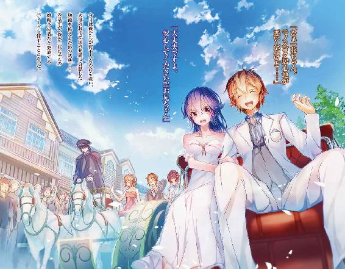
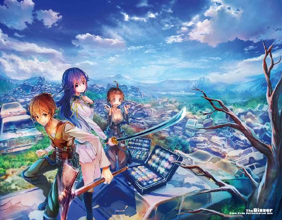
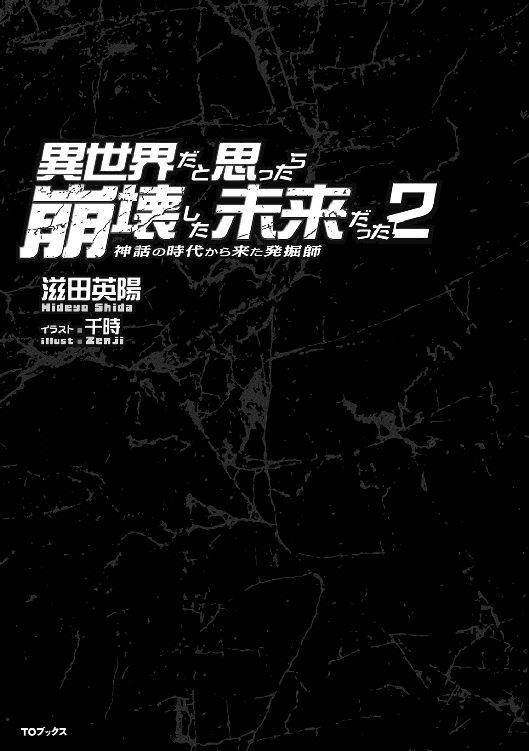
イラスト：千時
デザイン：BEE-PEE
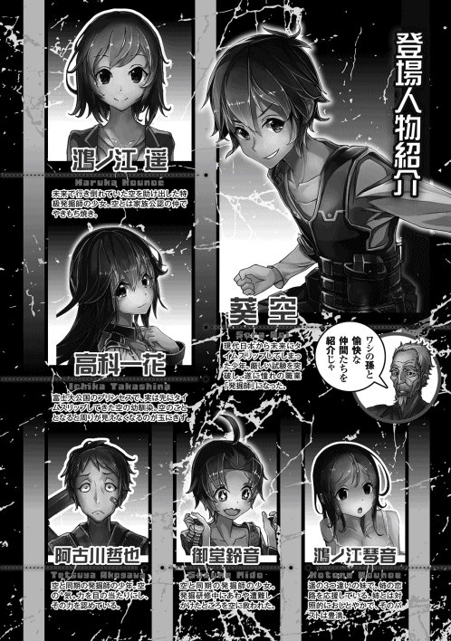
二十一世紀の日本に生まれ、はるか未来に時間転移してしまった者たちがいた。
四千年後の未来。
そこはかつて栄えた文明が完膚なきまでに破壊され、崩壊した未来だった。
人口はかつての十分の一未満に激減し、人を襲う脅威〝妖魔〟が闊歩する世界。
そんな恐ろしい時代に飛ばされてしまった一人の少年。
名を空というその少年は、その世界で生きていくために必死だった。
少年が見た荒廃した世界にも人々の営みはあった。
自由に山野を散策することなどできようもない厳しい環境にあって、人々は窮屈な暮らしを強いられていた。
しかし、そんな人々を勇気づけ、希望となる存在がいた。
発掘師と呼ばれる者たちだ。
彼らはかつて栄えた文明のなごりを求め、妖魔が闊歩する森へと分け入る。
森を切り開き、地下に埋まった文明の遺物を求めてツルハシを振るう。
発掘師がもたらす文明の遺物は、荒廃した時代に暮らす人々にとって、なくてはならない必需品だった。
危険を顧みず、金と名誉と使命のために彼らは今日も掘り続ける。
少年は思った。
俺も発掘師になりたい。
心からそう思い、願い、努力を惜しまなかった少年は夢を叶えた。
あるときは妖魔を蹴散らし、またあるときは荒野や森の中で野宿し、お宝を求めて森に分け入ってはツルハシを振るう。
それはかつて、少年が豊かな文明の中で憧れていた生活だった。
少年は今日も穴を掘る。
仲間と共にツルハシを振るう。
人々の役に立つために。
人々の生きる希望となるために。
お宝を求めて。
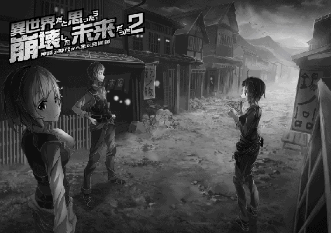
発掘師研修のインストラクター役を買って出た遥は、お目当ての新人発掘師、空が発揮した発掘師としてのとてつもない可能性と実績に、先輩のベテラン発掘師として戦慄を覚えていた。
同時に、想い人の活躍に心躍っていたことも確かだった。
さらに今年の研修には、空以外にも目を見張る素質と可能性を示した者が二人も参加していた。
始祖である空の〝気〟力が桁違いなのは置いておくにしても、二人の〝気〟力には目を見張るものがあった。
その筆頭、御堂鈴音というその少女は、貴族家の子女でありながら奢ることは無く、真剣に研修に取り組んでいた。空目当てで研修に参加した女どもとは、一線を画していることも好印象だった。
御堂鈴音は、ネズミ型の妖魔に怯える情けない一面や、逃げ遅れて崩落に巻き込まれるというミスも犯したが、真剣に研修に取り組むその姿勢には好感が持てた。現場で十分な経験を積めば、発掘師として、いずれ自分と同等のレベルに到達することは間違いないだろう。
もう一人の阿古川哲也という少年は、向上心が強すぎて空に突っかかっていたが、研修自体は真剣に取り組んでいた。あのハングリー精神溢れる向上心は、将来彼を成功に導くことだろう。
阿古川哲也は、最終的には空とも和解していたようだったし、その光景には微笑ましい思いさえしていた。
インストラクターとしての仕事を終え、空と共に実家である鴻ノ江食堂に帰りついた遥は、安堵の息を漏らした。
空の活躍によって、新幹線という超大物のお宝を掘り当てた発掘師研修も、崩落事故というアクシデントはあったものの無事終わることができた。
遥はインストラクターとして参加していたことにより、お宝の分配を受けることはできないが、そんなことよりも空の活躍と彼が無事だったことが嬉しかった。
「なぁ遥、さっそく発掘に行こうと思ってるんだけど、一緒に行くか？」
その言葉に遥は心躍る思いだった。
かつて発掘師としてやんちゃした黒歴史、というか若気の至りを拭い去ることはできないが、そんなことなど消し飛ぶほどに空に誘われたことが遥は嬉しかった。
「もちろん、同行させてもらうわ」
◇◇◇◇
新人発掘師研修が終わって数日が過ぎた。
「準備できたの？ 空」
「うん、見てのとおりいつでも出発できる！」
「そっ、ならさっさと行くわよ」
研修で手に入れたお金で、馬一頭と荷車を仲間たちと共同で買い入れた。万全の準備を終えて今日俺は発掘師としての一歩を踏み出す。
興奮してほとんど眠れなかったが、待ちに待ったトレジャーハントのはじまりだ。
鴻ノ江食堂を遥と共に陽が出る前に出発し、発掘師協会の前で待ち合わせた仲間二人と合流し、俺達四人は今、首都を出て荷馬車に揺られている。
「なぁ空」
「なんだ？」
「いきなり豊田は早くないか？」
「大丈夫ですよ。なんたって特級発掘師の遥先輩が一緒なんですから。それに空さんもいるんですから。心配性ですね哲也さんは」
「い、いや鈴音さん。俺はただ......」
「あぁ情けねぇ。あのとき俺に突っかかってきた勢いはどうした」
「んなこと言っても。カテゴリー二の妖魔が出るんだろ？」
「ごく稀にだけどね。もし出たときはわたしと空がいるから大丈夫だよ」
「はぁ、遥先輩がそう言うなら......」
東の地平線から陽が顔を出し、ガタガタと小気味良い振動の中で話している俺たちを照らしていた。
ただひとり馬を扱える遥が御者台に座り、俺と阿古川哲也、それから鈴音ちゃんが荷台に座っている。
研修が終わって発掘品の売り上げをもらいに遥と協会に行った際、出くわした阿古川哲也や御堂鈴音ちゃんとパーティーを組むことになった。
そのまま協会でパーティー登録し、その勢いで豊田鉱山に行くことになったのである。メンバーはその二人に俺と遥を入れて四人だ。
「にしても哲也、ずいぶん恰好が変わったな」
「ああ、大金が手に入ったからな。装備一式新調したんだ。お前のおかげだけど」
「ははっ、あの時はずいぶんみすぼらしかったからな」
「そうですね、ずいぶんカッコよくなりましたよ」
「い、いやぁ......」
俺と遥、そして鈴音ちゃんは研修の時とほとんど同じ装備だった。が、鈴音ちゃんにカッコいいと言われ照れている阿古川哲也だけは、真新しい装備に身を包んでいた。
真新しい黒いブーツに黒い革製のパンツ、白いＴシャツ、その上から濃い茶色で革製のポケットが多く付いたベストだ。背負ったツルハシまで新調している。
これから四人だけではじめて発掘に行くという少し興奮ぎみの雰囲気の中で、荷馬車に揺られて移動するという、ゆっくりとした時の流れを俺は楽しんでいた。
陽はすでに登りきり、春の暖かな陽光が心地いい。そんなとき、不意に遥が話しかけてきた。
「ところで空、操縦してみない？」
「ん〜そうだなぁ。昼メシ終わったらやってみるよ。教えてくれる？」
「うん、もちろんいいよ」
そう言って遥が振り向き、微笑みかけてきた。その様子を見て鈴音ちゃんと阿古川哲也が口を開く。
「わたしにも教えてください遥先輩」
「あっ、俺も俺も」
「そうねぇ、じゃあ交代で教えてあげる」
そんなこんながあったあと、馬車を停めて和気あいあいと昼食をとったのち、俺、鈴音ちゃん、阿古川哲也の順で荷馬車の操縦を遥に教えてもらった。そして順調に豊田への道をたどり、陽が沈みはじめた夕暮れ時。
「ここでいいわね」
そう言って遥が荷馬車を停めた場所は、道から少し外れた大岩の隣だった。
豊田までの行程は今日を入れて二日。ここは静岡を過ぎたあたりだ。
静岡方面にも鉱山はあるが、今回の目的は豊田での発掘なので、二日がかりの移動になる。遥に聞いた話だと、静岡の鉱山なら一日でたどり着けるらしい。
「じゃあ野営の準備をはじめよう」
パーティーのリーダーは遥が務めている。
発掘師になりたての俺たち三人からしてみれば、特級発掘師の遥は大先輩なのだから当然のなりゆきだろう。
そんな中で、俺が遥に向かって『遥先輩』なんて言ったら拗ねられてしまった。
阿古川哲也とか鈴音ちゃんが『遥先輩』と呼ぶのには自然な対応してるくせに、俺には〝先輩〟と呼ばれたくないようだ。
遥の指示に従ってテントを二張り設営する。俺と阿古川哲也、遥と鈴音ちゃんがペアを組むことになったのは、非常に残念だが当然のなりゆきだろう。
設営作業が終わると、俺と阿古川哲也が薪を集め、遥と鈴音ちゃんが夕食の準備をすることになった。荷馬車があるので水は樽に入れて運んできたが、それでも量が限られるので贅沢に使うことはできない。
二日分の飲み水と、今日の夜、明日の朝昼の食事と洗い物、それから今日の夜に体をふくために使う分量だ。
二人がかりで一夜を過ごせるだけの十分な薪を集め終わったころには、鍋の中に水が入れられており、切り分けられた食材が別に用意してあった。今日の夕食は肉と野菜のスープにパンである。
出発前の準備をしているときは、飯ごうでご飯を炊くのかと思っていたが、遥曰く、炊飯は水を大量に使うから水場が無い場合はパンが普通らしい。
荷馬車があるから樽をもうひとつ持っていけば済む話だが、そこまでして米を食べる必要もないだろうということだった。豊田に着けば宿屋もあるらしいので、一日我慢すれば済む話だ。
「あ、待たせた？」
「ううん、大丈夫。今終わったとこ」
「じゃあさっそく火にかけようか」
そう言って俺は集めた薪にマッチで火をつけた。陽はとうに沈んでおり、空には星が瞬いている。火勢が強まり、そして安定する。しばらくして鍋の中の水がぐつぐつと沸騰してきた。食材を順次投入し、浮き上がってきた灰汁をすくう。頃合いを見て遥が塩と醤油だけで味を調えた。
今の時代ではコショウが手に入らないらしいし、香辛料は種類が少なく貴重品ということだった。鈴音ちゃんは貴族の家に育ったので、料理は初体験だそうだ。だから味付けは遥の担当だ。
「うん、こんなもんかな。どう？ 鈴音ちゃん」
「あっ、美味しいです。遥先輩は料理もお上手なんですね。尊敬します」
「えへへ、料理は得意なんだ」
「そういえば、山小屋でもずっと遥が料理してたもんな。遥の作るメシは美味いんだ」
俺がそう言って遥を褒めちぎったら、彼女は恥ずかしそうに、そして嬉しそうに顔を上気させていた。
「へー、そうだったんですか。そういえば遥先輩の家は食堂でしたね。俺も今度食べに行こうかな」
「あ、私も行きたいです」
阿古川哲也と鈴音ちゃんの要望に、遥は笑顔を見せて頷いた。
「じゃあ、発掘が終わったらわたしの家にみんなで行こうか」
鈴音ちゃんがスープを取り分け全員に配る。
「「「「いただきます」」」」
冷ましもせずに阿古川哲也がスープに口をつける。
「あちちっ、でも......うめぇ！」
「そう慌てるなって。でも確かに美味いな。山小屋で食った鍋よりシンプルだけどコレはコレで確かに良い」
俺がそう言ったら遥は嬉しそうにしていた。
「うん、美味しい。さすがは遥先輩です。私にも今度教えてくださいね」
「まあ、これからパーティー組むんだから鈴音ちゃんもきっと上手になるよ」
「そのときは空さん、私の料理食べてくださいますか？」
「あたり前じゃないか。俺たち仲間なんだし」
「あっ、俺も俺も」
そんな感じで楽しい夕食が終わり、鍋や食器を洗ってたき火を囲む。食後の至福感と少し肌寒い空気、そこにたき火の温かさが加わって心地いい。
研修のときも野営をしたが、あのときは人数が多かったし引率はいたしで、なんか学校の行事のような感覚があった。それは確かに修学旅行とかオリエンテーリングとか学校のみんなと行くキャンプとかも面白かったが、今は違う。
気心の知れた仲間たちと大自然の中で自由に、しかし妖魔という脅威が存在する緊張感を伴って野営をする。
そういった、なんというか俺が生まれた時代ではまず経験のできない、貴重と言ったら語弊があるかもしれないが、何か特別な得難い体験をしているという感じがして楽しかった。
「空、そろそろわたしたちは寝るよ」
「そうだな。じゃあ予定どおり俺と哲也で見張りをするよ」
「空が〝気〟の解放してても妖魔は襲ってくるから気をつけてね。もし妖魔が出たら遠慮なく起こすのよ」
「うん、分かったよ」
と、俺が遥に笑顔を返したら、鈴音ちゃんが若干申し訳なさそうに口を開いた。
「じゃあ空さんも哲也さんもがんばってください。時間になったらちゃんと起こしてくださいね」
「おう」
「おやすみ遥、鈴音ちゃん」
「おやすみ」
「おやすみなさい」
遥と鈴音ちゃんがテントに入り、たき火の周りには俺と阿古川哲也が残された。道中全力ではないが、ある程度の〝気〟を解放して野獣避けをしていた。おかげで野獣には遭遇していないが妖魔は別らしい。今も放出の量は変わっていないが、遥曰く妖魔は〝気〟に引き寄せられる傾向にあるそうだ。
山小屋近辺と違ってこのあたりには妖魔が出没すると遥は言っていた。特に夜はその傾向が強いらしい。
ならばなぜわざわざ妖魔を引き寄せる〝気〟の解放をするのかといえば、このあたりは夜行性の野獣のほうが圧倒的に多いらしく、解放していたほうが危険度は低いとのことだった。
「なあ空、前から気になっていたんだが、お前一花様と仲、良いらしいな」
「何をいきなり」
「いや、いろいろ噂になってるからな」
「どんな？」
「仲睦まじく手を組んで歩いていたとか、すでに婚約してるとか......」
やっぱり聞いてきたか。
いずれは聞かれるだろうと思っていたことだけに、すでに心構えはできている。
しかし、事実と違うところは訂正しておいたほうがいいと思った。
「一花ちゃんと俺は幼馴染なんだ」
阿古川哲也の目が見開かれる。
「......ということは大公様とも」
「ああ、陽一さんと希美花さんとは親しくさせてもらっていた。陽一さんたちが迷い人だっていうことは知ってるよな」
高科一家が神話の時代、つまり二十一世紀からの迷い人であること。すなわち始祖であることは大公国はもとより和国でも有名な話らしい。これは陽一さんからも、遥やヒカル爺からも聞いた話だ。
「で、俺もその迷い人なんだよ。お前たちが神話の時代って呼んでる時代、そのときに俺が住んでいた家のお隣さんが高科一家だったんだ......」
俺が高科一家とどんなふうにお付き合いしていて、この時代に飛ばされて出会ってからのことも、当たり障りのないところだけ話した。
しばらくの間、阿古川哲也は俺の話をじっと聞いていた。
「そうだったのか。どおりで」
「婚約はしていないがな」
「でも、仲良いんだろ？」
「それは否定しない」
「まったく羨ましい限りだぜ。遥先輩とも仲良いし、鈴音ちゃんもお前のことよく見つめてるし」
「鈴音ちゃんが俺のことをどう思っているかはまだ分からない。けど、なるようにしかならないんじゃない」
「まったく、モテる男はいいよなぁ。いずれはお前、貴族にでもなるんだろ？」
「そうなるかもしれないけど、なるようにしかならないさ」
「もしお前が貴族になっても、俺たちは仲間だよな」
「ああ、それは間違いない。それはそうと──」
その後も俺と阿古川哲也はどうでもいい話を続けていた。
交代の時間ももうそろそろか、というときだった。野獣避けに解放していた俺の〝気〟に何かが反応した。
その反応がゆっくり近づいてくる。
距離は五百メートル、数は二十一、方向は東、その奥に森が見える。妖魔ではない。生物の〝気〟だ。
「哲也」
「ん？」
「妖魔じゃない何かが近づいてくる。たぶん人だ。方向は向こう。俺は遥たちを起こしてくる。お前は見張っていてくれ」
阿古川哲也は一瞬驚いたように目を大きくしたが、無言で頷き、俺が顎で示した方向を凝視した。それを見て俺は遥たちが眠るテントに急いだ。
こんな時間に大人数で、道じゃないところから一直線に向かってくる団体さんとなれば、それはまともな相手じゃないだろう。そんな予感めいたことを考えていた。
そんなことを考えつつも、遥と鈴音ちゃんが寝ているテントの中に顔を突っ込む。
「うをっ！」
思わず口に手をあてて俺は叫び声を飲み込んでいた。
無防備に熟睡している二人の乙女。
寝相が悪いのだろうか、革製のベストがはだけ、鈴音ちゃんの豊満な膨らみが彼女の腕で変形し、それを包む下着が大胆に顔を覗かせていた。
俺は思わずその至福な光景をガン見してしまったが、今はそんなことをしている場合ではないし、かといってもっと見ていたい気持ちは抑えられないし、やけに長く感じた数秒ではあるが、形容しがたい葛藤にさいなまれた。
がしかし、俺は彼女らを起こすことなく、この至福の光景を愛でるという選択肢を選ぶほどの阿呆ではない。
「遥、起きてくれ」
寝入っている遥の肩を揺すりながら声をかけた。
「ん、んー。もう時間？」
「時間だけどそれだけじゃない。東のほうから何かが近づいてきている。距離は五百メートル。数は二十一、妖魔じゃない。たぶん人だ」
「おかしいわね。まさか......。というか空、あんたどこ見てるの？」
急に額に青筋を立てた遥が、鈴音ちゃんの毛布をなおした。
「い、いやぁ、ついつい目が行っちゃって、眼福というかなんというか......。そ、そんなことより、まさかって何？」
「ハァ、今はあんたを責めている場合じゃないわね。たぶん野盗の襲撃よ。もう一度よく探ってみて」
言われたとおり慎重に〝気〟を探る。何度調べても人の〝気〟だ。しかし野盗とは面倒な奴らに目をつけられたものだ。
〝気〟を探った感じでは雑魚なのは間違いない。が、ようやくもうそろそろ眠れると思っていたところへの厄介者たちの登場に、いらだちを覚えたのは言うまでもない。
「人なのは間違いないと思う。しかし野盗か、面倒だな」
「この時期にはたまに出るのよね」
「なんで？」
「新人発掘師狙いよ。戦闘経験が浅い新人は狙われやすいの。まあ、奴らが狙ってるのは発掘師だけじゃないけどね」
そう言いながら遥は鈴音ちゃんを揺すり起こしている。
しかし、そんな遥には焦りも動揺も無いようだった。
「鈴音ちゃん、起きて」
「ん、んんーん。なんですか遥先輩？ むにゅむにゅ......」
「野盗の襲撃よ」
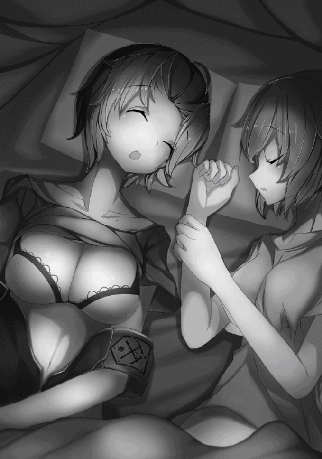
「............えっ？ ええー！」
「しーっ、大きい声出さない」
「でも、野盗って」
あきらかに狼狽している鈴音ちゃんに、遥は落ち着かせるようにやさしく言い聞かせている。俺はその声を聞きながら遥たちのテントから外に出た。
「大丈夫。野盗の戦闘力なんてたかが知れてるから」
「そうなんですか？ でもわたし人と戦ったことは......」
「心配しないでいいわ。貴女の〝気〟力なら直撃を受けてもかすり傷で済むから。練習だと思って思いきりやりなさい。それとね鈴音ちゃん。寝るときはたとえベストでも脱いじゃだめよ。いつ襲撃があるか分からないなんだから」
「ごめんなさい。胸が苦しくってつい......」
テントの中から聞こえてくる遥たちの話し声に、ついつい聞き耳を立ててしまった。
というのは置いておくとして、鈴音ちゃんの〝気〟力は、自己申告によると千百ちょい。対して、今も近づいている野盗のうち、もっとも〝気〟力が高い奴で百五十あるかないか。
なるほど遥の言うとおり、野盗を二、三人相手にしたところで、鈴音ちゃんならばかすり傷程度で済むだろう。
阿古川哲也にしても八百五十ちょいの〝気〟力があるから、心配する必要はないはずだ。俺と遥で敵の人数を減らせばどうとでもなりそうな気がする。
「遥」
「ええ、分かってるわ」
テント越しに遥の声を聞きながら、俺は野盗たちの位置を再確認した。
いつの間にか、野盗の団体が百メートルくらいまで近づいてきている。
「空、なるべく殺さないようにお願いできるかな」
「えっ、どうして？」
「時間がないから理由は後で話すわ」
「了解」
発掘師の受験勉強で知っていたことだが、野盗の類は襲われた場合殺しても構わない。人を殺した経験など当然無いが、野盗は殺す気で襲い掛かってくるだろうから、奴らを殺す覚悟は発掘師になったときからできていた。
野盗なんぞに俺の夢を邪魔される気など毛頭ない。もし野党に襲われることがあったら、そのときは迷わず殺そうと覚悟を決めていた。
しかし、遥は殺すなと言う。理由は分からないが、ベテランである彼女の言うとおりにしたほうがいいのかもしれない。
俺が遥たちのテントから離れ、野盗たちのほうに視線を向けると、奴らは視認できるところまで近づいていた。
距離にして五十メートル。月明かりしか奴らを照らすものはないが、〝気〟で強化された俺の目には、奴らの姿がはっきりと映っている。
阿古川哲也は、たき火を背にすでにツルハシを構えている。遥と鈴音ちゃんも間を置くことなくテントを出てきた。
鈴音ちゃんはテントの脇に置いてあったツルハシを手に取り、遥は金槌だけを右手に持っている。
なるほど、野盗風情にツルハシは必要ないということだろう。遥がそう考えるなら俺は素手で十分だ。ツルハシとか金槌を武器として使うほうが加減が難しいような気がしてならない。
鈴音ちゃんが遥が手に持つ金槌を見て大きく目を開いた。
「えっ！ 遥先輩、そんなのでいいんですか？」
「ええ、この程度の雑魚相手にはコレで十分よ」
遥は鈴音ちゃんを安心させるように笑顔を見せた。
野盗はすでに目前まで迫っている。たき火を背後に左から俺、阿古川哲也、鈴音ちゃん、遥と迎撃態勢は万全だ。
「こりゃぁ儲けもんだ。テメェら見てみろよ。いい女が二人もいるじゃねぇか。いいか、男のガキは殺せ。女は生け捕りだ」
そう言い放った野盗の先頭に立つ大男。一人だけ軍人が持つような長剣を軽々と片手で持ち、ペシペシと剣の腹を左手のひらに打ちつけているその男がリーダーなのだろう。
野盗たちは俺たちの前方十メートルくらいのところで足を止め、品定めするような、そして舐め回すような下卑た視線で遥と鈴音ちゃんに顔を向けている。
俺や阿古川哲也には興味が無いようだ。大男以外の野盗たちは鉈やナイフで武装していて、身に着けている服もみすぼらしい。
「空、ひとりも逃がさないわよ。哲也君と鈴音ちゃんは無理しないように全力でやりなさい。絶対に油断しないで」
そう言い放った遥が、目で追えないほどの速度でいきなり駆け出した。いや、駆け出したというよりは野盗の中に飛び込んだというほうが正確だろうか。
しかも、野盗のリーダーと思しき大男の顔面に左拳を突き入れたかと思うと、勢いのままにその大きな体ごと大男を頭から地面に叩きつけ、そのまま野盗の片足太ももを踏み砕いたのである。
野盗たちは一瞬、自分たちの中央で大男を伸してしまった遥を、ポカンと口を開けて見ていた。
俺もあっけにとられている。阿古川哲也と鈴音ちゃんも同じだった。
「なるほど、確かに雑魚だな。というか、あまりにも手慣れてないか？」
なんてことを、ついつい独り言ちてしまったが、その後にとった行動は俺たちと野盗たちとで大きく分かれた。
野盗たちの何人かは一目散に逃げ出し、遥の近くにいた者たちは恐怖に顔を歪めて一斉に彼女に襲い掛かった。
阿古川哲也と鈴音ちゃんは、遥に気を取られている野盗どもにツルハシを振りかぶった。俺はといえば、最初は遥たちの加勢に回ろうとしたが、それが不要だと分かって近くにいた一人の足を蹴り折った。
がしかし、次々と遥たちに倒されている野盗たちを見て、ここにいる奴らは彼女らに任せることにした。
俺は逃げ出した野盗でも相手にすることにしよう。
そう考えて足元に転がる小石を拾い、逃げ出した野盗どもに向かって投げる。拾っては投げる。さらに投げる。投げる。投げる。投げる。もちろん全力ではない。
〝気〟によって精密にコントロールされた小石は、次々に逃げ出した野盗たちの背中に命中していった。小石が当たった野盗たちは吹き飛ばされるように倒れ、身動きする様子はない。もちろん死んでもいない。
逃げ出した野盗を倒し終えて遥たちのほうに振り向いてみれば、すでに戦闘は終わりを告げていた。
「ふう、哲也君、鈴音ちゃん、こいつら縛ってくれるかな」
やれやれ終わった、という感じで俺のほうに歩いてきた遥に対し、阿古川哲也と鈴音ちゃんは「はぁはぁ」と肩で息をしていた。二人は両手を膝について下を向いている。よほど力んでツルハシを振り回したのだろう。
「哲也君！ 鈴音ちゃん！」
「「はい！」」
遥に再度名を呼ばれて再起動した二人は、ロープを取りに馬車へと走っていった。
それを見届けた遥が口を開く。
「何か投げてたみたいだけど」
「ん？ ああ、何人か逃げ出したからな。遥たちのほうは余裕そうだったから逃げた奴を仕留めてた」
「これだけ暗い中でよく当てられるわね。走って動いてるマトに」
そう言った遥は呆れ顔だ。
「〝気〟で視てるからハズすわけないよ。投げた小石も〝気〟で正確にコントロールしてるから」
俺の話を聞いた遥は、得心が行かないという顔をしている。
ならば少しは補足しておくべきだろう。遥はかけがえのない仲間だし、というか仲間よりもっと身内に近いというかあわよくば付き合いたいとか、別に邪な考えがあるわけではないが、そんな彼女の力になれるなら俺が協力を惜しむことなどない。
「遥も知ってると思うけど......」
「思うけどって何？」
どうやって説明しようか悩んでいたら催促されてしまった。
「あ、うん。まだ俺が〝気〟をうまく扱えなかったころだけどさ、遥は俺の〝気〟が駄々漏れだって言ってくれただろ」
「そんなこともあったわね」
遥は昔を思い出すかのようにそう呟いた。
「でだ、俺の〝気〟が漏れてるってことが分かるってことは、他人の〝気〟を感じとれるってことだろ？」
「確かにそうだけど」
「だったら分かるよな？」
俺の問いかけに、しばし遥は考え込むそぶりを見せた。どうにも俺の説明は分かりにくいらしい。
もともと俺は人に教えることは得意じゃなかったから、遥の反応も分からないでもないような気がした。もう少し突っ込んで説明したほうがいいか。
「俺は野盗から漏れる〝気〟を自分の〝気〟で感じ取っていたんだよ」
遥の目が見開かれた。
俺としては当然彼女も知っていることだと思って説明したわけだが、どうやら俺がやっていることは遥の常識には無いことらしい。
「遥が俺の体から漏れる〝気〟を感じたのは、自分の〝気〟を使って感じ取ったんじゃないのか？」
「違うわ。空の体から出ている〝気〟を〝肌〟で感じていたのよ。これは常識よ」
なるほど、俺の考えは非常識だったらしい。
「そうだったんだ......」
「〝気〟は離れれば離れるほど弱くなることは空も知ってるわよね？」
「もちろん知ってる」
「だから普通は近くにいないと感じ取れないの。これも常識よ」
「じゃぁ、妖魔とか獣は？」
「妖魔とか獣は〝気〟に敏感って言われてるの。人間じゃ感じ取れないような僅かな〝気〟にも反応するわ。でも、空が言ってることが本当にできるなら妖魔とか野獣もきっと......」
ということは、俺がやっていることを教えれば遥にとってはプラスになりそうだ。
「じゃあ俺がやっていることを教えるよ。聞きたい？」
「もちろん聞きたいわ。今すぐ教えなさい」
何か遥の目が座っているような気がする。
ということは俺がやっていることはそれだけの価値があるということだろう。
「俺がヒカル爺と釣りに行ったときのことは覚えてるよな」
「覚えてるわ」
「そのときなんだけど、ヒカル爺が用意してくれた釣り針は魚が引く力で簡単に伸びるほど柔らかかったんだ。で、これはヒカル爺が俺の訓練用に作ってくれたんだけど、その釣り針を使うには〝気〟で硬さをコントロールしなきゃいけなかったんだ」
「うんうん、それで」
遥は興味津々に続きを促した。
「俺はコントロールに夢中になって釣り針に〝気〟を送り込んだんだけどさ、そしたら釣り針から漏れた〝気〟で魚が逃げちゃうんだ。魚がエサに食いついてから釣り針の硬さをコントロールするのが正解だったんだけどさ。正解が分かる前に釣り針の近くにいる魚の〝気〟を偶然感じ取ったんだよ。で、俺は思ったわけ、ああ、こうやって他人の〝気〟を感じるんだって」
「そっか、偶然の賜物だったのね......」
やっと納得が行ったような顔をした遥に、俺は胸をなで下ろした。
できるだけ端折らずに説明した甲斐があったということだろう。
「ということは、〝気〟を伸ばして相手の〝気〟を感じる練習をすれば、わたしにもできるってことか」
「たぶんできると思う」
「よしっ、暇なときに練習してみるわ。教えてくれてありがとね」
そう言った遥は嬉しそうだった。
「どういたしまして。で、これからどうする？」
「空は逃げた野盗を運んできてくれる？ わたしは奴らを縛っとくから」
「まかされた」
逃げ出した六人を遥たちのもとに引きずり集め、野盗全員をロープで繋いで逃げられないようにした。
見るからに瀕死の重傷を負っている者もいるが、幸いなことに死人はいなかった。
気絶していない者は怯えるような目で遥を見ている。よほど怖かったのだろう。
「遥、こいつらはここに置いていくのか？」
「うーん、そういうわけにもいかないんだよねぇ」
「えっ、じゃあ馬車に積んで？」
そう言った鈴音ちゃんは心底嫌そうな顔をしていた。阿古川哲也も同じだ。
少し間を置いて。
「いや、わたしが馬で軍人を呼んでくるわ。それまで見張っててほしいんだけど」
「うん、それについては分かったよ。じゃあ、富士の都まで戻るんだな」
「いえ、ここからだと静岡鉱山が近いから時間はあまり掛からないわ──」
遥によれば、今から馬で飛ばせば夜明け前に静岡鉱山まで行けるそうだ。
そこから軍人を連れてくれば、午前中に引き渡しはできるだろうということだった。
「じゃあ、できるだけ早く戻ってくるから」
そう言って遥は行ってしまった。
後に残された俺たちは、遥が戻ってくるまで仮眠をとることにした。
野盗たちは大怪我をしていて、かつ、ロープで繋がれている。もはや逃げ出すことはできない。
大怪我はしているが、死にそうな者はいないので治療は見合わせることになった。
一応、睡眠をとった鈴音ちゃんが見張りを続行することにして、俺と阿古川哲也はテントから寝具として用意していた布を取り出した。
たき火の前で布に包り、いつでも動けるようにして仮眠をとった。
「──さん、空さん、起きてください」
「んー、あ、おはよう鈴音ちゃん」
「おはようございます」
さわやかな朝、というわけにはいかなかったが、可愛い女子に起こされるというのは悪い気分ではない。というか嬉しかったりする。
それは置いておくとして、目を覚ましてみれば、すでに朝陽が顔を出しており、遥が連れてきた軍人さんに野盗を引き渡している最中だった。
阿古川哲也はすでに起きており、遥は軍人さんの代表と思しき人と話をしていた。そして、何やら紙のようなものを受け取っている。
遥と話をしている軍人さんの部下と思われる人たちは、野盗の折れた足に添え木をしたり、簡単な応急処置を行っている。野盗たちを縛っていたロープは、返してもらったのだろう、遥の肩に掛かっていた。
ここまで気がつかなかったということは、仮眠をとったつもりだったがどうやら熟睡していたようだ。
「分かりました。では、これで引き渡しは完了ということでよろしいでしょうか」
「ははは、そうだな。全員生きていることであるし我々も感謝している」
「では、わたくしたちはこれで失礼いたします」
「ああ、よくやってくれた」
遥が対応していた軍人さんは、偉そうにはしていたが、猫田のような腐った人間ではなく、話も分かる人のようだ。
そういえばあれから猫田はどうなったんだろうか？ そんなことを考えていたら遥が戻ってきた。
「さあ空、朝ごはんの準備よ」
「ふあぁ〜、俺はもう一眠りしたいなぁ」
「ハイハイ、さっさと薪を集めてくる」
遥にせっつかれた俺は、阿古川哲也とともに薪を拾い集め、遥と鈴音ちゃんが朝メシを作った。
朝メシのメニューは、残った昨日のスープに水と調味料を足して温めなおしたシンプルなものだった。
移動の準備が終わり、豊田鉱山へと馬車を向ける。野盗と軍人さんたちは護送用の馬車を待っているらしく、置いてきた形になった。
そういえばと、とあることを思い出し遥に尋ねる。
「そういえば遥、野盗たちを殺さなかった理由って何？」
「まだ話してなかったわね──」
遥によれば、野盗とかの重罪人を捕えて軍に引き渡せば、報奨金が出るそうだ。報奨金は、罪人が死んでいた、つまり殺してしまった場合でも出るが、生け捕りにしたほうが多くなるらしい。
理由は、罪人が受ける刑罰にあり、二十一世紀で死刑にあたる刑罰が、永久強制労働刑という刑罰になるからということだった。
永久強制労働刑は、文字どおり死ぬまで強制労働に処せられる刑であり、人間としての尊厳はもとより、ほとんどの自由をはく奪された上で強制的に重労働を科せられる厳しい刑である。
これは、街や都市を守る堀などの掘削にかかる人的労働力や、その他の危険な重労働を担う人材が恒常的に不足していることにあるらしい。
そういう理由があって、野盗とかの重罪人を生け捕りしたときの報奨金が多くなるとのことだった。
遥が軍人さんから受け取っていた紙は、生きた野盗二十一人を確かに引き渡したという証書だった。この紙を軍の本部に持っていけば報奨金と引き換えてくれるらしい。
ちなみに、今回の報奨金は一人あたり四千円であり、総額八万四千円。俺たち四人で分けると一人あたり二万千円の稼ぎになり、一般的な発掘師の日当と比べるとかなり多い金額になった。まだ貰ってないが。
「遥ぁ、こんだけ儲かるなら、野盗ハンターにでもなったほうがいいんじゃね」
と、俺は心にもないことを聞いてみた。
「そんなに簡単に野盗は見つからないよ。軍だって定期的な見回りをしてるわけだし。今回は運が良かったと思ったほうがいいよ」
遥の基準では、野盗に襲われたことは幸運だったらしい。さすがは特級発掘師だ。
そんなこんなで、野盗襲撃というハプニングはあったものの、その後は何事もなく。陽が沈んでだいぶたったころに豊田鉱山へと到着したのだった。
豊田鉱山は、驚いたことに大きな街だった。俺の記憶にある鉱山のイメージとは完全に別物だ。
周りを堀とバリケードに囲まれ、橋を渡ったその中には宿屋や食事処、発掘品の買取所とか道具屋が軒を連ねていた。
そこかしこから笑い声や盛り上がる声が聞こえてくる。
遥曰く、建物の多くは宿屋らしく、宿屋街という通称で呼ばれているそうだ。
「うをっ、すげーな」
「ほんとほんと、とても鉱山とは思えないですね」
阿古川哲也も鈴音ちゃんも活気のある街並みに興奮している。かくいう俺も二人と同じ思いだった。
大通りを挟んだ両脇に並ぶほとんどの建物から明かりが漏れ、道にも結構な数の人間の姿があった。そのほとんどが発掘師らしい恰好だ。
「いや、ほんとスゴイな」
「あとひと月もすればもっと凄くなるわよ。とりあえずは宿を確保しなきゃね」
遥のなじみの宿があるということだったので、俺たち四人はとりあえずその宿に行ってみることにした。
今の時期ならまだシーズン真っ盛りではないので、ほぼ空き部屋はあるそうだ。まあ、空いてなかったらなかったで、ほかの宿屋をあたればいいだけだ。
「わたしは荷馬車を預けてくるから部屋取っといてくれる？」
「了解」
「二人部屋を二つだからね」
遥に念を押され、木造二階建ての大き目の宿屋の前で荷馬車から降りると、彼女の荷物を受け取って、俺たち三人は片開きのドアを潜った。
宿屋の中に入ると正面にカウンターがあり、中年の女の人がその向こうに座っている。痩せていて少し気の強そうな感じの人だった。
「三人かい？」
カウンターの女の人がいきなり話しかけてきた。
「あ、いえ四人です。二人部屋を二部屋借りたいんですが」
「何泊するんだい？」
「とりあえずは十日ほどお願いしたいんですが」
「十泊だね。食事は朝と夜だけどどうする？」
「こちらで食べさせてもらいます。あ、それから今日の夕食もお願いできますか？」
「じゃぁ四人分で一万四千二百円だよ、食堂はあっちだからね。この紙にサインしてくれるかい」
渡された二枚の紙に俺と鈴音ちゃんがそれぞれサインし、鈴音ちゃんと阿古川哲也から三千五百五十円ずつ受け取った。
一万四千二百円とサインした紙を女の人に渡し、遥の分は俺が立て替えておいた。
「部屋は二階の二〇一号室と二〇二号室だよ。これがカギだから無くさないように。分かったね」
「はい」
カギを受け取った後、とりあえず部屋に荷物を置き、再び一階に降りる。少し遅れて鈴音ちゃんも降りてきた。しかし、まだ遥は戻ってこなかった。
「遥先輩はまだ戻ってこないようだな。空、俺は鈴音さんと席を確保しに行くけどお前はどうする？」
「そうだな、遥が来るまでここで待ってるよ」
「分かった。鈴音さん先に行こう」
「はい」
夕メシの席取りに食堂へと二人が去った後、しばらくして遥が戻ってきた。
「部屋は取れた？」
「ああ、今日の夕メシと十日分朝夕メシ付で一人三千五百五十円だった。遥の分は立て替えといたよ」
「そう、ありがと。じゃあコレ。ところでみんなは？」
「食堂に席取りに行ったよ」
「じゃあわたしたちも行こうか」
遥から立て替えた分を受け取り、カウンターを見て左にある両開きのドアを開ける。食堂は四人掛けのテーブルが六卓、それに十人くらい座れるカウンターがあった。
その半分ほどに人が埋まり、酒も出ているようでにぎやかだ。
「可愛い姉ちゃんがいるじゃねぇか。一杯付き合ってもらおうか。なんなら夜の相手でもいいぜ」
「おいやめろ！」
「あんだぁ、ガキはスッこんでろ！」
どうやらモメごとのようだ。酔っ払いが少女に絡んでいる。
しかもその少女は見知った顔だった。鈴音ちゃんだ。阿古川哲也は酔っ払いに詰め寄っている。
その様子を見ていた遥が額に井形を浮かべた。躊躇することなく酔っ払いの前にズイズイと進み出ていく。
「わたしの連れに何か用でもあるの？」
とたんに、鈴音ちゃんに絡んでいた酔っ払いが硬直した。
さらに、酔っ払いは血の気が引いたように青ざめ、ガクガクと震えだす。
周りの様子を見てみれば、何人かの客たちが遥を見てざわつきはじめ、その中のひとりが叫んだ。
「く、狂乱の堕天使ッ！」
なんだかものすごく恥ずかしい言葉を聞いた気がする。あれはどう考えても遥の二つ名だろう。それ以外に考えられない。
そんなふうに思っていたら、遥の表情筋がピクピクと引きつりだした。額の井形も大きくなったような気がする。
そして、恥ずかしい二つ名を叫んだ男のほうに、遥がギギギと効果音を伴うような雰囲気で首だけを回した。
叫んだ男は、あまりの恐怖に怯えたように腰を抜かし、後ずさりしていく。遥は、表情はそのままに再び鈴音ちゃんに絡んでいた酔っ払いに顔を向けなおした。
「ヒィッ！」
すると、酔っ払いも腰を抜かして後ずさりをはじめ、くるっと体を反転して這うように逃げ出した。
鈴音ちゃんと阿古川哲也は、遥に視線を貼りつけたまま固まっている。食堂にいた客たちは静まり返り、ゴクリと生唾を飲み込んだ。
その様子を見て、今まで遥に男がいなかった理由が分かったような気がしてきた。
おそらくは発掘師であろう屈強そうに見えるむさ苦しい男たちが、ここまで遥に怯えているということは、過去に彼女が武勇伝か何かをやらかしたということで間違いないだろう。
いったい遥は何をやらかしたのだろうか？ まぁ、俺には関係ないことだから、彼女が何をやらかしたとしても気にはしないが。
しかし、今の遥には触らないほうがいいのだろうか？ そうとも考えたが、ままよと遥の怒気で固まってしまった空気を緩和すべく、彼女の前に進み出た。
パチン。
と、軽いでこピンを遥に喰らわす。すると、遥はハトが豆鉄砲を喰らったようなキョトンとした顔になり、やがて、やらかした感いっぱいの表情で慌てはじめた。
「い、今のは違うからね、空、今のは」
何が違うのかさっぱり分からないが、こんな遥が可愛いと思ってしまう俺は異常なのだろうか。それもまあいいさと、慌てふためく遥の頭をヨシヨシとなでる。
しばらくそうしていると、カァァァっと顔を赤くした遥が恥ずかしさを隠すように、席に座っておとなしくなった。俺も遥の隣に座る。
「あ、あのっ、ありがとうございました遥先輩」
お礼を言った鈴音ちゃんは、何やら遥を尊敬のまなざしで見つめている。しかし、阿古川哲也は少し引き気味だった。
遥はまだうつむいたままだ。なんだか雰囲気がぎこちない。
しばし無言の静寂があたりを包んだ。ほかにもいる客たちからも声が聞こえてこない。そんなときだった。
グゥ。
と、阿古川哲也の腹の虫が鳴く。少し間を置いて、遥がクスッと笑う。俺と鈴音ちゃんも釣られて笑い出す。
ナイスだ、ナイスタイミングだよ阿古川哲也。俺たちの雰囲気が弛緩したからだろうか、周りの客たちからガヤガヤと喧騒が響きだした。
そういえば俺も腹が減ったなと思い、店の人を呼ぶ。
「すいませーん。注文いいっすかー」
翌朝、昨夜は何もなかったかのように俺たち四人は宿を後にした。昨夜のハプニングについては、遥の新たな一面が見られたことに俺は満足している。
なぜ満足したのかは恥ずかしいから言わないことにする。俺だけの秘密だ。
さておき、ようやくこれから念願の発掘開始といきたいところではあるが、そう簡単には問屋が卸してくれない。
「ところでさぁ、遥」
「何？」
「俺たちって四人パーティーじゃん？」
「そうだけど」
「少なくない？」
ここでひとつ一般的な発掘のやり方というか手順を説明しておくと。ほとんどの場合、発掘師たちが単独で発掘にあたることはなく、パーティーとかクランとかそういうものを組んで集団で発掘を行うことになる。
ソロで発掘に行く場合もあるにはあるが、それは〝気〟力が高いベテランのみに許されることで、一般的なことではない。
理由は簡単で、発掘される物が重くて一人では持ち運べないということもあるし、第一、単独で発掘場所を探索して、そこを掘って、掘り出した物を持って帰る、なんてことを行うには無理がありすぎるのだ。
「確かに少ないわね」
「荷物というか、掘り出したお宝はどうするんだ？」
一人で持ち運べるほどに小さくて、かつ価値が高いお宝もあるにはあるが、ギャンブル性が高すぎて、道楽でもない限りやる奴はほとんどいないし、まともな商売にはならないのである。
妖魔や野獣に対しても単独で対処する必要があるので、一般的なレベルの発掘師がソロで行動することなどあり得ないのだ。
「そのための馬車じゃない」
「でも、結局あの馬車一台分しか運べないよな」
「運べなかったら往復すればいいわ」
「なるほど」
そんなこんなで俺たちは四人という少人数ではあるがパーティーを組んだ。妖魔のだいたいの強さが分かれば、いずれはソロでも活動する予定だが、今は考えていない。
さておき、一般的には、十人規模でパーティーを組むことが常識になっている。大きいところでは五十人規模の大規模クランまで存在するそうだ。
「でもさ、何往復もするのは大変そうだから、俺としてはできるだけ価値があるお宝に巡り合いたいかな」
「そうよね。でもそれは発掘師なら誰でも考えていることよ」
「でもさ、馬車で往復するってことは横取りとかどうなの？」
「ああ、そういうことね。簡単に説明するとね──」
遥曰く、パーティーで発掘するにあたって、気をつける必要があるのが、いわゆる縄張りである。
大概の、というかほとんどのお宝は地下に埋まっている。
したがって、発掘師たちは坑道を掘るか、露天掘りをして発掘作業を行うのであるが、研修のときのように、他人が掘った坑道に後から入って発掘するということは、めったに無いことらしい。
とどのつまり、縄張りとは坑道の入り口とその周辺ということになる。
違う場所から、別のパーティーが狙っていた同じお宝を掘るということは、縄張りを侵すことになるわけだ。たまたま坑道がぶつかるということも、ごく稀に起こり得るらしいが。
「そっか縄張りか」
「まぁ、発掘が終わった坑道はその後を自由に掘ってもいいんだけどね──」
縄張りがあると言っても、すでに発掘が終わって放棄された坑道の続きを掘ることに問題はない。
しかし、ほとんどの場合は徒労に終わることになるらしい。
「じゃあ研修のときは...」
「あれはね。ちょっと特殊なんだけど──」
遥曰く、研修のときに出てきた車やバイクは、あらかじめ協会のほうでとあるパーティーに協力してもらって残しておいてもらった、いわば置き土産だったらしい。
俺が見つけた新幹線は別になるが。
「そういうことだったんだ......」
さておき、そんな理由で俺たちが掘る場所は、まだ誰も手を付けていない場所ということになる。
そしてまだ誰も手を付けていない場所には、当然道などあるはずがない。
「じゃぁ、この道を通って適当なところで降りて森に踏み入るわけだ」
豊田鉱山のように大きな鉱山は、未踏の場所にでもあらかじめ何本かの道が軍と強制労働の囚人たちによって作られている。
その道を通って、目星をつけた場所の近くまで行き、森に分け入ってお宝の在処を〝気〟によって探っていくのだ。
そしてお宝の反応を見つけた場合、必要なときはそこまでの道を造って荷馬車を進め、発掘を開始するのである。
「そういうことになるわね」
そんなわけで俺たちは今、豊田鉱山の宿屋街を西へと抜け、大通りをそのまま西へと直進していた。
さすがに町の近くはほとんど発掘が終わっており、すでに埋められた更地や、点在する森が残るだけだった。
さらに道を進むと次第に森が増え、そして至るところから左右に脇道が伸びていた。
「脇道には入らないの？」
「ええ、せっかくだからまだ誰も手を付けてない場所にしましょう」
どこかの脇道に入り、そこから探索をはじめてもよかったが、縄張りのこともあるし、パーティーを結成してはじめての発掘ということもあって、どうせなら自分たちで新しい道を切り開こうということになった。
豊田鉱山は、大公の陽一さんが二十一世紀当時の記憶を頼りに発見した鉱山であり、発見されてからまだ三十年弱しかたっていない、わりと新しい鉱山である。
そのおかげだろう、宿屋街を抜けて三十分も荷馬車で進めば、ほとんど脇道を見かけなくなった。
「なあ遥ぁ、もうこの辺でいいんじゃない？」
「うーん......空がそう言うならわたしに異論はないけど、こればっかりは運だからね。鈴音ちゃんと哲也君はどう？」
「俺はＯＫです、遥先輩」
「わたしはどこでも遥先輩についていきます」
「異論はないようね」
ということで、荷馬車を適当な場所で左に寄せて馬をその辺の木につないだわけだ。
そしてそれは道の左側、すなわち南側、すなわち海側を探索するためだった。
もちろんこれは俺の記憶によるものだが、海側のほうが都市が発展していたからにほかならない。
豊田といえばかつての俺のホームタウンである。大きな工場とかの位置が分かればウホウホなのだ。
しかしあいにく、ここがかつての豊田のどのあたりなのかはさっぱり分からない。ランドマークになりそうな建物がもし見つけられれば鬼に金棒になるが、そんなものが見えるはずがないのだから。
何事もそうそううまく行くとは限らない。
しかしそれでも、俺の心が萎えることなどなかった。いや、分からないなら分からないで楽しめばいいのだ。
本来俺は、トレジャーハントができるというだけでも幸せなのだから。
「じゃあ予定どおりわたしと鈴音ちゃんが残るから、まずは空と哲也君で調査をお願い」
「了解」
「行ってきます遥先輩。期待して待っててくださいよ」
遥と鈴音ちゃんが荷馬車に残るのは、妖魔や野獣から馬を守るためである。さすがにこのあたりになると、野盗が出張ってくることはまずあり得ない。
それは、〝気〟力百に満たない者がほとんどの野盗たちには、このあたりに出没する妖魔や野獣に対処できないからだ。
それに万が一野盗が襲ってきても、遥一人で十分対応可能であり、鈴音ちゃんが残った理由は、先発の俺たち二人が成果を得られなかった場合に交代するためでもある。
さておき、俺と阿古川哲也は、遥と鈴音ちゃんを残して森の中に分け入った。
「ようし、スッゴイお宝を見つけて大儲けするぞ」
「いきなりどうしたんだ？ 空」
発掘師がお宝を発見することは国の発展にもつながっているし、発掘師もそれで稼ぎを得ることができる。
いわば発掘師と国の関係は、使い古された言葉ではあるが、ＷＩＮ-ＷＩＮの関係にあると言っても過言ではない。
要するに、発掘師が儲けるということは国の発展に直結しているのであって、言い訳がましく聞こえるかもしれないが、決して俺が金の虫だということではないのだ。
で、意気揚々と森の中に分け入った俺と阿古川哲也だったが、出端から悪戦苦闘する事態に陥っていた。
「フンッ！ ハッ！」
阿古川哲也と並んでブンブンとツルハシを振り回し、生い茂ったツタや笹や小枝を切り払っていく。おまけに所々に岩が飛び出しているし、切り払ったつもりのツタや笹が戻ってくるしで厄介極まりない。
太い木が少ないのがせめてもの救いだが、遅々として先に進めない現状に、突入地点を間違えたか？
なんてことも考えていたら、徐々に見通しがよくなってきた。そして、入り口から五十メートルくらい入ったところで突然視界が開けた。
「ハァッ、ハァッ、なんとか抜けたか」
そう言った阿古川哲也は、ツルハシを杖のように地面について息を切らしている。
森の奥──とは言っても道から五十メートルほどだが──に入り、背の高い木が増えたことによって日光があまり届かないため、背の低い木や笹が生えていないようだ。
周りを見渡してみると、獣道は確認できず、地面は枯葉に覆われていて、所々に大小さまざまな岩が突き出していた。
ここに至るまでの道すがら、いや、道はなかったのだが、俺は〝気〟を地下に伸ばしてお宝の反応を探っていた。
その結果は言わずもがな、お宝の反応はなかった。あればそこで引き返している。
さて、ここからどの方角を探索すべきか？
選択肢は大まかに三つ。森の左、奥、右である。
引き返すという選択肢は当然無い。
かなり奥に行けば海に近づくから大物に行き当たる可能性が高くなる。左と右はあまり変わらないだろう。なら当然、答えは森のずっと奥に突き進むことになるのだろうが、奥に行けば行くほど、長い道を造らねばならなくなる。
左右に行けば、新しく造る道は五十メートルで済む代わりに、大物に行き当たる確率は減るだろう。
「哲也、もう大丈夫か？」
しばらく休憩し、復活した阿古川哲也に声をかけた。
「ああ、大丈夫だよ。しっかし、キツかったなぁ」
「ちゃんとした道を造るときはもっとキツイさ」
「それもそうか」
「なぁ哲也、もの凄くキツイけどスゴイ大物に当たるかもしれないのと、楽だけど小物の確率が高いのとどっちがいい？ まぁ、楽して超大物に当たる可能性がゼロってわけじゃないけど」
「それって凄くキツくてしかも大物に当たらない可能性もあるってことだろ？」
「いや、当たらなかったら道造る必要ないから」
「そういやそうか、でも俺たち四人しかいないからなぁ、あんまり長い道造るのは無理なんじゃね？ それに、なんで超大物の場合キツくなるんだ？」
「そうか......じゃあこうしよう──」
森のかなり奥に行けば、超大物にあたる可能性が高いことを阿古川哲也に説明し、超大物は今回諦めて俺たちは二手に分かれた。阿古川哲也が東で俺が西だ。
ツルハシを振るって藪の中を突き進んでいたころ、俺はあることを考えていた。最初はここが豊田のどのあたりかさっぱり分からなかったが、宿に泊まったときに聞いた遥の話を思い出してピンときた。
遥曰く、宿屋街はかつて陽一さんが最初に掘り当てた大規模工場だったらしい。とすればおそらくトヨタの元町工場あたりだろう。
あのあたりはトヨタの工場が集まっていたから、別の工場かもしれないが、距離的にそれはもう掘り起こされているだろうからどうでもいい。
だとすれば、俺たちが今いる地点は、おそらく豊明市あたりだろうか。
南の刈谷市あたりまで行けば大きな工場がいくつかあった気がするが、森を切り開いていくにはちと距離がありすぎる。ここからさらに西に進めば、名古屋港につき当たるはずだが、まだ道は海まで伸びていないらしい。
だとすれば、工場は無理かもしれないが、駐車場あたりになら行き着く可能性が高い。ダメだったら、荷馬車に戻ってもっと西に進めばいい。
そう考えて俺は阿古川哲也に『どっちがいい？』と問いかけたのだ。
ずっと西の名古屋方面と、南の刈谷市方面は後の楽しみにとっておこう。まずは実績を積み上げることが重要だ。
さておき、阿古川哲也と別れた俺は、足の裏から〝気〟を地中に伸ばし、一歩一歩踏みしめるように西に歩いた。
あまり深くまで探っても掘り出すのに苦労するだけなので、探査する深さは十メートル程度だ。
五百メートルほど歩いただろうか、明らかな金属反応に行き当たった。
「コイツはとりあえず保留だよな」
おそらく自動車だろう反応だったが、台数は一台。研修のときの話だと、自動車一台二から三万円なので、日当としてはいいが少しばかり物足りない。
二十一世紀の価値になおすと、一人あたり日当五万から六万円が物足りないと感じるのだから、俺も発掘師の金銭感覚に染まっているのかもしれない。
ということで、目印に近くの木の枝を折っておくことにした。
「保険は必要だよね」
そこからさらに西に歩いていく。
途中三台の自動車らしき反応を見つけて目印をつけた。
最初の地点から三キロほど歩いただろうかというところで、大きな金属反応に行き当たった。深さは三から五メートルだ。
「これは......」
アルミではない、恐らく鉄だ。
俺は反応のある範囲を歩き回りながら慎重に探りを入れていった。そして分かったこと。ゴチャゴチャと入り組んではいるが、おそらく自動車だろう。
「よっしゃぁ！ 大物発見だ」
はっきりと数までは分からないが、十台以上。いや、二十台近くか。どんなに少なく見積もっても二十万円。四人で割れば一人あたり五万円だ。一般人の二か月分近い稼ぎになる。
自動車から採取できる部品はベアリングがメインだ。
他にも有用な部品が自動車には豊富に使われているが、ベアリングは軸受けとして、馬車の車輪だとか荷車の車輪だとか台車の車輪だとか、それ以外にもとにかく回転する道具に大量に使われることもあり、俺たちの生活を豊かにしてくれる代表的で有用なお宝なのだ。
「さて、コレだけあれば結構発掘には時間がかかるが......」
埋まっている自動車を掘り出して分解し、道を造って運び出したとしても五日くらいだろうか。
新幹線にはさすがに及ばないが、発掘師とはボロい商売だな。
なんてことを皮算用していたら......。
「──ぅぉー......うをぉー！」
あきらかに阿古川哲也の声だった。それがもの凄い勢いで近づいてくる。目を凝らしてよく確かめてみると、阿古川哲也がもの凄い形相で何かから逃げてきていた。
徐々に阿古川哲也が近づいてきた。そしてその後ろから、ドスッ、ドスッと巨大な獣が追いかけていた。
おおよその目測で体長三メートル強、体高一メートル五十ほどだろうか。超巨大なイノシシだ。
「空、逃げろー！」
俺と目を合わせた阿古川哲也が叫んだ。
しかし、俺はその叫びを無視することにした。少しデカい気もするが、倒せないことはないだろう。
しかも、イノシシなら食えるはずだ。そう考えて体中の〝気〟を活性化させ、足元から大地へと流し込む。そして、ガッシリと体ごと大地と一体化した。
中腰になり、右拳を引いて〝気〟を充てんし、鉄よりも固くなるようにイメージする。大猿を殴り殺したとき以上に。
阿古川哲也が驚愕の目で俺を視ながら横を通り過ぎた。そして間髪入れず、まさに猪突してきた巨大イノシシの頭部に正拳突きを叩き込んだ。
「はぁぁぁぁっ！」
ゴスッという鈍い音とともに、痺れるような、しかし心地いい感触が拳に伝わり、イノシシの頭に拳がめり込んでいく。
そしてそのまま、十メートルくらい大地をえぐりながら、押し込まれてしまったところでイノシシが停止し、ドサリと横に倒れた。
──このとき、阿古川哲也は空の無鉄砲な行動と、その結果もたらされた驚くべき結果に驚愕するというよりは、むしろ呆れたという感情が支配的だった。
同時に己の持つ常識で、空という規格外の〝気〟を持つ始祖の行動を理解すべきではないと、強烈に実感していた。
「はぁ、はあ、助かったよ。しかしまぁ、なんだ。俺はもうお前のやることにいちいち驚かないことにするよ。精神的に疲れるからな。で、それどうするんだ？」
「食う」
「そうかそうか、食うつもりか。しかしまさか、そんな理由だけでコイツと戦おうと思ったわけじゃないよな。いや、いい。気にするな......」
俺の答えを聞いて一旦呆れた顔をした阿古川哲也だったが、思うところがあるのか何やら考え込んでしまった。
「逃げ帰ってきた俺が言うのもなんだけどさ、お宝の反応、あったのか？」
きまりが悪そうにそう問いかけてきた阿古川哲也に、俺はしてやったりの得意げな表情で答える。
「お前の足元を探ってみろよ」
阿古川哲也は言われたとおりに地中を探りはじめた。真剣な表情で片膝をついて右手を地面に伸ばしている。しばらくして、阿古川哲也の目が見開かれた。
「こ、コレは......車か？ しかもかなり大量に......。やったじゃないか空、大発見だ！ 遥先輩たちも大喜びするぞ！」
「ああ大発見だ。そしてサイコウの気分だ。それでだ、俺はコイツを運ばなきゃならねぇ。道はお前が切り開いてくれるか？」
「そうだな、俺はそいつから必死で逃げてきた。それをお前が倒した。お前がいなけりゃ俺はたぶんそいつのエサだった。しかも、もの凄いお宝までお前が見つけた。俺もそれ相応の仕事をしないと立つ瀬がないな」
自分に言い聞かせるようにそう言った阿古川哲也は、結局、文句ひとつ垂れることなく北に向かって藪を切り払いはじめた。
俺はといえば、倒したイノシシの前足をツルハシを背負った状態で両肩にかつぎ、目の前で奮闘している阿古川哲也の後を追ったのだった。イノシシの後ろ脚をズリズリとひきずりながら。
獣臭いことこの上ないが、必死に藪と悪戦苦闘している阿古川哲也の手前、不平など言うべきではないだろう。
十数分の悪戦苦闘ののち、阿古川哲也は道を切り開いた。
遥たちが待つ荷車の停車地点は、三キロ強道を東に戻らねばならない。このままイノシシをズリズリと引きずって行ってもいいが、一人が走って遥たちを連れてきたほうがはるかに早いだろう。
「なあ哲也、疲れてるとこ悪いんだけど、遥たちを呼んできてくれないか？」
「......まあそうだな、さすがにそれを持っていくのはお前でも大変か。いっちょひとっ走り行ってくる」
阿古川哲也には悪いが、イノシシと一緒にここに残して俺一人で走ると、もし獣が襲ってきたときに奴一人じゃ危ないと俺は思った。
楽をしたかったという思いが無いでは無いが、高々三キロ強走るくらい、奴にまかせてもバチは当たらないだろう。
走り去った阿古川哲也を眺めながら、俺は肩にかついでいたイノシシを道の脇に下ろして待つことにした。
十数分ののち、荷馬車を駆る遥の姿が見えてきた。俺の前で遥は荷馬車を停めると、道に倒れているイノシシを見て目を丸くしていた。
後から降りてきた鈴音ちゃんも、開けた口を手で隠して驚いているようだ。
「哲也君から聞いてたけど、まさかこれほど大きいとはね......けれど、このあたりにこんな巨大なイノシシが出るなんて珍しいわね......」
「スゴイです。こんな大きなイノシシ見たことありません。これ、空さんが仕留めたんですよね」
なんか遥が気になることを言ったような気がしたが、鈴音ちゃんに褒められて嬉しかった俺は、まあいいかと、気にしないことにした。
「うん、まあそうなんだけど、お宝はちゃんと見つけたよ。しかもかなりの大物」
「それは哲也君から聞いたわ」
「で、これからどうする？」
俺の問いかけに、遥は「うーん」と考え込み、そして聞き返してきた。
「わたしも一度確かめてみるわ。べつに空を信じてないわけじゃないけど、状況を確認しときたいから。それでいいよね？」
「うん、俺は構わない」
「じゃあわたしは鈴音ちゃんと行ってくる。鈴音ちゃん！」
遥の掛け声に、阿古川哲也と興味深そうにイノシシを突いていた鈴音ちゃんがビクッと反応した。その驚いた姿が少し恥ずかしそうでなんだか可愛い。
「ほら、行くわよ」
「はい、遥先輩」
俺と阿古川哲也を残して二人は行ってしまった。
阿古川哲也が切り開いた道は、通り抜けるために必要な分だけしか藪を払っていないので、二人の姿はすぐに見えなくなった。
陽は頂点に昇り切っていないがポカポカと暖かい。俺は荷台に寝そべり、その暖かな春の光陽を満喫していた。しかし、うとうとする間もなく二人は戻ってきた。
そして遥が開口一番。
「よくやったわ、空。かなりの大物よ。発掘初日でこれだけのお宝に遭遇することは珍しいわ」
遥の鑑定に、鈴音ちゃんもうんうんと頷いている。
「遥にそう言ってもらえると安心できるよ。で、これからどうする？」
「そうね、まずは──」
ここは発掘師として大先輩である遥に、これから俺たちが取るべき方針を決めてもらったほうがいいだろう。
そう思って遥の話を聞いていたら、阿古川哲也も鈴音ちゃんもどうやら俺と同じ考えだったらしい。遥の言うことに、異論が出ることはなかった。
で、これからどうするかといえば、遥はイノシシを売りに行くそうである。俺が「食いたかったのに」と言ったら、「心配しなくていいわよ。売るのは宿屋にだから」という返事が返ってきた。
さらに、「あれだけのお宝よりイノシシを食べられるかどうか心配するなんて、空、食い意地張ってるわね」なんて笑いながらも呆れられてしまった。
遥のそのセリフを聞いて、鈴音ちゃんにまで微笑ましく笑われてしまったのが少し悔しかった。
さておき、遥がイノシシを売りに行っている間、残された俺たち三人で、お宝発見現場までの道を、荷馬車が通れるように整えることになった。
今日は陽が傾くまでその作業を行い、本格的な発掘作業は明日からだ。
予定どおりに道を整える作業は進み、陽が傾く前に遥が戻ってきたころには作業が終わっていた。
驚いたことに、イノシシは十万円で売れたそうである。一人あたり二万五千円だ。あれだけ巨大なイノシシは珍しいらしく、肉質もよかったし、牙や毛皮も上質らしい。
最初は、俺一人で倒したイノシシだから、売れたカネは山分けにする必要がないと皆に言われてしまったが、俺たちはパーティーだからと無理やり山分けすることを納得してもらう恰好になった。
俺としては大した労力は払っていないし、稼ぎを独り占めするのは気が引けていたから、皆が無理にでも納得してくれたことは嬉しかったりする。
「発掘より狩猟のほうが儲かるんじゃないか？」
なんてことを冗談めかして阿古川哲也がのたまったが、狩猟をすればいつでも肉が食えることは別にして、トレジャーハントの魅力のほうが俺には格段に上だった。たぶん阿古川哲也や他の二人も同じ考えだろう。
発掘師として仕事をしていれば、今回みたいな棚から牡丹餅がまたあるかもしれない。そう考えるほうが俺の性に合っている。
今日はもうここまでということになって、最後に遥が整えられた道の入り口に、俺たちの縄張りを示す立札を立てて宿屋街への帰路に就いたのだった。
◇◇◇◇
発掘師研修に参加していた空たちに万が一のことがないようにと、富士宮防衛線に出向いていた一花は、空たちが豊田鉱山に滞在している今でも、前線から離れることができなくなっていた。
さらに、一花がいる前線には、大公高科陽一までもが出向く事態に陥っていた。
「一花様に申し上げます。戦線西部にカテゴリー三が二十五体出現。三島様率いる第五大隊がこれにあたっております」
「も、申し上げます！ 戦線東部にカテゴリー四が二体、カテゴリー三を十体引き連れて出現。三枝様率いる第六大隊及び菅井様率いる第七大隊がこれにあたっておられますが、至急の増援を要請されております」
早馬を飛ばして駆けつけた二人の伝令による報告に、一花は表情を歪めた。
報告の内容は、直ちに対応しなければ戦線が崩壊することを意味していたからだ。
富士宮防衛線では、いったん収まったかに見えた妖魔の出現が、一週間ほど前から再び増加に転じていたのだ。
しかも、年に数体しか出現していなかったカテゴリー四の妖魔が、この一週間で少なくとも七体は出現している。
富士宮防衛線は、一花を筆頭とする二十一人の大公国騎士たちが率いる大公国軍防衛部隊の五分の一、約二千人規模の連隊である。各騎士が大隊長を務め、五百人規模の四個大隊を率いていた。
「大公閣下、連隊の指揮をお願いします」
「分かった。無理をするんじゃないぞ」
「はい。私は一人で東に向かいます。藤崎」
「ハッ」
「貴方は遊撃中隊を率いて第五中隊の援軍を」
◇◇◇◇
大公国騎士序列六位の三枝健三と七位の菅井忠良は、体長四メートルはあろうかという狼型の妖魔と対峙していた。
富士宮防衛線東部に出現した妖魔は十二体。そのうち二体がカテゴリー四に区分される狼型の妖魔と熊型の妖魔だった。残りの山犬型妖魔もカテゴリー三だ。
これに対する大公国軍は、三枝率いる第六大隊の約五百名と、菅井率いる第七大隊の約五百名。
「ちっ、季節外れだってのになんでカテ四が二体も出やがる」
「文句を言うな菅井、これも仕事だ。増援が来るまでなんとしても持ち堪えろ」
「お前に言われなくても分かってらーな。──ッ！」
「気を抜くな」
狼型の妖魔と向き合う三枝と菅井は、ともに伯爵級の騎士だ。
富士大公国における騎士とは貴族であり、公爵級から男爵級に序列されている。男爵級騎士になる〝気〟力の目安は千五百以上であり、これが伯爵級の騎士になると〝気〟力の目安は二千以上となる。
伯爵級騎士とただの伯爵では前者のほうが階級は上だ。
ちなみに、筆頭騎士である一花は唯一の公爵級騎士であり、騎士序列二位の藤崎は侯爵級の騎士である。
三枝と菅井は、襲撃してきた妖魔にカテゴリー四が二体含まれていることが分かると、即座に増援を乞う伝令を出した。
さらに、指揮下の大隊二隊およそ千名に、妖魔を取り囲んで逃がすことなく防御に徹するようにと指示を出し、自分たち二人は現れた妖魔の中で最も強くて素早い狼型の注意を引きつけたのである。
彼ら二人は、カテゴリー四の妖魔の恐ろしさをよく理解していた。
決して戦線を抜かれるわけにはいかなかった。だから二人は増援を乞い、防御に徹しているのだ。
二人が指揮する二個大隊が攻撃的にあたれば、たとえカテゴリー四の妖魔が二体含まれる群れであろうと、殲滅させることは難しくない。
しかし、その代償は決して安いものではないだろう。彼らにはこの戦闘が終わった後も、この戦線を維持する必要があるのだから。
極力犠牲者を出さずに現れた妖魔を殲滅するには、増援が必要不可欠だったのだ。
「ハァァッ！」
すれ違いざまに、身の丈ちかい大刀を振り抜いた菅井の斬撃が妖魔にかすった。その瞬間、かすった切っ先と妖魔の間から火花が飛び散る。
菅井に飛びかかった妖魔は、すれ違いざまに切りつけられたことなど意に介さずに、着地と同時に反転し、自分を傷つけようとした菅井に再度飛びかかろうと身を縮めた。
その刹那、狙いすましたように間に割り込んだ三枝の大剣が妖魔の出ばなをくじくように、その頭部に叩きつけられた。
しかし、ゴツンと強烈な打撃音を残したにもかかわらず、妖魔は、大剣を打ちつけその場を走り去った三枝へと視線を固定し、唸り声を上げる。
三枝と菅井は互いに連携し合い、妖魔の隙をついて攻撃し、狙いをどちらか一方に固定されないように戦っていた。もちろんその戦い方は、速度重視で剣撃にはあまり力を込めていない。
二人の膂力なら、渾身の力で切りつける、あるいは刺突すれば、致命傷とはいかないまでも、妖魔に傷を負わせることは可能である。
しかし、カテゴリー四の妖魔にそんなことをしたら、反撃を喰らってしまう危険性が高い。二人と同レベルの騎士があと二人いれば、無傷で勝利できるだろうが、それは高望みしすぎだろう。
二人と離れたところで一体のカテゴリー四と十体のカテゴリー三の妖魔を相手にしている二個大隊にしても、基本は長槍でのけん制のみで、連携も密に次々に交代しながら食い止めていた。
三枝たち二個大隊が妖魔と戦いはじめて三十分弱が経過したころ、狼型の妖魔に一撃を入れて離脱した菅井の視界に、迫り来る一組の人馬が映った。
長い黒髪をなびかせ、真紅の軽鎧をまとった馬上の女が、抜き身の刀を右手にぐんぐんと迫ってきている。
すると、どこからともなく大歓声が上がった。
「一花様だ！ 一花様が駆けつけてくださったぞ」
たった一人の増援で、屈強な兵士たちの士気は駆け上がった。
一花とはそれほどまでに兵たちに信頼された人物であり、また、そうさせるだけの武力を備えていた。
「三枝、菅井！ お前たちは大隊に戻れ」
たった今駆けつけ、馬から降りた一花が二人にそう叫んだ。
三枝も菅井もその命令に躊躇することなく狼型の妖魔から離脱し、兵士たちの中へと走り去った。
二人とも知っているのだ。
一花ならばたとえカテゴリー四の妖魔が十体相手であっても、無傷で瞬殺できるだけの武力と速度を兼ね備えているということを。
そして二人はこうも思っていた。
一花にカテゴリー四の狼型妖魔を任せることができれば、自分たち二人と兵たちとで、あの熊型の妖魔を怪我することなく倒せると。
戦場に駆けつけた一花は、自分を最大の脅威、すなわち食いちぎり、バラバラにすべき第一の標的と見据えて唸り声を上げる狼型の妖魔に対し、なんの躊躇もなく飛びかかっていった。
その速度は圧倒的であり、次の瞬間には妖魔の首は宙に舞っていたのである。
狼型の妖魔をまさに瞬殺した一花は、兵たちとともに戦っている三枝と菅井の様子を満足そうに眺めていた。
一花がその戦闘に参加すれば、一瞬でけりがつくであろうことは彼女にも分かっていたが、躊躇なくプライドを投げ捨てて増援を要請した三枝と菅井、そして兵たちの武勲を取り上げるような無粋なことをしようとは考えないからだ。
あの二人と二個大隊があれば、たとえカテゴリー四とはいえ、あまり素早くない熊型と、素早くて数は多いがカテゴリー三の山犬型妖魔に後れを取ることなどありはしない。
一花もまた部下たちを信頼しているのである。そんな一花の信頼を、部下たちが裏切ることはなかった。
しばらく部下たちの戦いぶりを眺めていた一花の耳に、盛大な勝鬨が響いていた。
◇◇◇◇
一日目の探索で発掘すべきお宝を発見した俺たちは、宿屋へと戻って夕メシに舌鼓を打っていた。
もちろん、食卓に並んだのは俺が仕留めたあの巨大イノシシだ。
「あぐあぐ、さすがにうめーな。あぐあぐ」
脂の乗った骨付きのバラ肉にかぶり付いてみると、歯応えはあるが決して固くはなく、噛み応えある肉質と、にじみ出る肉汁とが絡み合って美味いことこの上ない。
熟成していない新鮮な肉だというのに、まさに肉々しく、肉を食っている感満載のこの肉は、俺にとって最高の肉料理だ。
あまりの美味さに日本語がおかしくなっているかもしれないが、今の俺はこの極上の至福感に満たされて幸福の極みなのだ。
「空、あんたの幸せそうな顔見てたらどうでもよくなっちゃったよ」
「ホント空さんって美味しそうに食べますよね」
そういえば宿に帰り着き食堂に入ったとたん、俺たちを見た客たちが怯えたような視線を向けてきた。
その視線の先が遥だったことは言うまでもないが、彼女は自分に向けられた視線にご機嫌ナナメになっていたのである。
それが伏線となった先の遥の発言だったのだが、遥が発掘師に復帰することに消極的だった理由がなんとなく分かったような気がしていた。
俺が見てきた感じだと、遥は新人発掘師や女性発掘師には人気が高いが、特にベテランの屈強な野郎の発掘師たちには恐れおののかれる存在のようだ。
俺にとっては、そんな遥であっても可愛い存在なのだが、彼女が機嫌をなおしたことに、内心ホッとしていたりする。
そんな状況の中で、阿古川哲也は俺以上に肉に夢中になっていた。
周りの状況に流されず、一心不乱にただひたすら肉を喰らうその姿は、鬼気迫る様相を呈していた。よほど肉に飢えていたのだろうか？
そういえば、コイツとはじめて会ったときはずいぶんみすぼらしい恰好だったな。なんてことを思い出して少しほっこりした気分にもなった。
そんな感じで夕メシも終わりを告げ、翌朝から俺たちはようやく発掘作業に取りかかることになった。
朝一番に道具屋で斧と竹で編んだザルを買い入れ、荷馬車を昨日切り開いた道の奥まで進めた。
荷台から飛び降りた俺たちに遥が口を開く。
「打ち合わせどおりやるわよ。空は木を切り倒してちょうだい。わたしと鈴音ちゃんと哲也君は切り株を掘り起こすわよ。空も終わったら手伝って」
「ＯＫ遥」
「さぁ、はじめるわよ」
昨日の打ち合わせでは、一番腕力がある俺が発掘現場の木を切り倒すことになった。
さすがにツルハシで木を切り倒すのは、効率が悪いということで斧を買ったわけだ。
「フンッ！」
〝気〟を十分に送り込んだ斧を全力でナナメに振り下ろす。
すると、直径二十センチほどの少し背の高いブナの木がスパッと分断され、ズルズルと滑り落ちで地面に突き刺さった。
残った切り株は、刀で竹をナナメに切り落としたように鋭利な先端を上にしている。
「遥、こんなんでいいか？」
「ＯＫ、それでいいわ。ジャンジャン切り倒して」
遥のＯＫをもらった俺は、その後一時間余りをかけて車が埋まっている場所を中心に、直径五十メートルほどに生えた木を切り倒した。
その後、切り倒した木を森の奥へと運び捨て、斧をツルハシに持ち替えて切り株の掘り起こしに取り掛かったのである。
切り株の周りをツルハシでザクザクと掘り下げる。そのときに太い木の根にぶち当たるが、〝気〟を送り込んだマイツルハシの障害にはなり得ない。
ザクザクと木の根ごと掘り進め、最後は残った幹を足蹴にして切り株を掘り起こす。遥はもとより、阿古川哲也も鈴音ちゃんもツルハシを振るってザクザクと切り株を掘り起こしていた。
切り株を掘り起こす作業は一時間ほどで終わりを告げた。いよいよ地面を掘り起こすわけだが、その前に皆で少しの休憩をとった。
発掘前の一仕事が終わって、休憩のときに会話が弾んだのは仕方のないことだろう。
「よし、そろそろ掘りはじめるわよ」
遥の掛け声とともに俺たちは地面を掘りはじめた。
今回は比較的浅いところにお宝が埋まっていることもあって、坑道を掘るわけではなく露天掘りだ。
森の中にぽっかりとあいた直径五十メートル強の広場。その中心から四人がかりで掘り進めていく。
直径二十メートルくらいをある程度掘ったら、掘った土砂をザルで掻い出すように穴の外に放り投げた。
その作業を進めていくと、ゴツゴツとしたコンクリートとアスファルトが混ざったガレキが現れた。
同時に、閉じ込められていた〝気〟が溢れ出してくる。このガレキを取り除けばお宝とご対面だ。
しかしその前に遥が......。
「お宝を運ぶ道を作るわよ」
そうだった。
ただひたすらに掘り進めた深さ三メートル、直径二十メートルの縦穴には、お宝を運び出すための道がなかったのだ。
「分かった。道は俺が作る。遥たちは土砂を運んでくれ」
一番体力が有り余っている俺が道作り役に立候補したのは当然だろう。肩で息をしはじめている遥たちに異論はなかった。
穴の中からヒョイと飛び出した俺は、穴の縁に立つと、そこからナナメに道を掘り進めた。今の俺には三メートルの高さなどちょっとした段差でしかない。
せっかく掘った竪穴に土砂が落ち込まないように、穴の外に向けてツルハシの平たいほうで土砂を掘り起こし、後ろに放り投げる。
それを遥たちがかき集め、森の中に放り込んでいく。そして、三十度の勾配を持つ坂道ができ上がった。
まだ夕方までには一時間強の時間が残っている。
今日のうちにガレキの撤去まで終わらせ、お宝を拝んでおきたい。穴掘り作業開始からわずか八時間で、直径二十メートル深さ三メートルの竪穴と道までをも作り上げることができたのは、ひとえに俺たちの持つ〝気〟のなせる技だろう。
「ガレキの撤去までは今日のうちにやるよな？」
「......分かったわ。今日はそこまでだからね」
俺の願うような問いかけに、遥はしょうがないなという諦め顔を作って了解してくれた。阿古川哲也と鈴音ちゃんもお宝を今日のうちに見たかったらしく、遥にすがるような視線を送っていたのも彼女が承諾した理由になったようだ。
時間もあまりないことだしと、俺たち四人は急ピッチでガレキを持ち上げては森の中に放り投げていく。
大き目のガレキは、ツルハシで砕いて投げられる大きさにすれば、道を通って運び出す手間を省ける。
「っしゃぁ！」
「やった！」
阿古川哲也が雄たけびを上げ、鈴音ちゃんも興奮しているようだった。
「出たわね。それも大量の車が」
そう言った遥は、出てきたお宝を満足そうに眺めていた。
「ああ、どう見ても大量の車だ」
発掘作業はまさに俺たちの〝気〟力を使った力技だったが、それが功を奏したようで、ガレキを取り除きはじめてから一時間足らずで、ボディがベコベコに凹んだ車が、幾重にも折り重なるようにして姿を現していた。
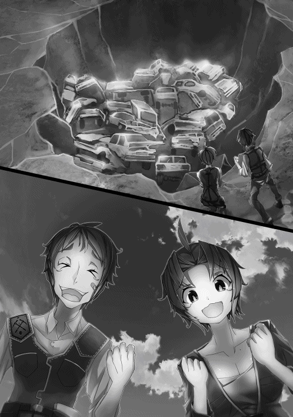
二十一世紀の人間が見ればただのスクラップだが、今の時代にはこのスクラップが宝の山なのだ。このスクラップの中には、今の時代に造ることができないベアリングなどの貴重な機械部品が山のように含まれている。
特にベアリングは様々な道具に使用されるため、その需要は尽きない。
こんなスクラップがお宝に見えるとは、俺もずいぶんこの時代に染まったなと、陽がかげり出した中、少し自嘲ぎみに笑みを浮かべたのだった。
スクラップ状態の自動車の山というお宝を目の当たりにした翌日、俺たち四人は朝早くから発掘現場に赴き、自動車を穴の中から引きずり出していた。
「見える分はこれで全部ね。まだ埋まってるみたいだから穴を広げるわよ──」
最初のガレキを取り除いた場所から出てきた車は十三台だった。その十三台は穴の横に並べられている。
自動車を取り除いてできた穴の奥を〝気〟で確かめると、新たなガレキを挟んで確かにまだ数台の反応が残っていた。
今ここにいる四人は、当然全員がそのことに気づいており、遥の指示に異論が出ることはなかった。
一台あたり二万から三万になるお宝がまだ数台ごく近い場所に埋まっているのだから、それも当然だろう。
昼までにはまだ時間がある。このまま一気に、すべて掘り出して昼過ぎから分解作業に取りかかることになった。
そして予定どおり、昼前にはすべての車を穴から掘り出した。
幸いなことに、車の中に確認できた遺体は一組だけだった。ほかの車に遺体が入っていなかったのは、ここが駐車場か何かだったためだろう。
もしかしたら乗り捨てた車だったかもしれないが、今となってはもう分からない。
俺たちは昼メシを食う前に、確認できた遺体を車から下ろし、森の中に運んで埋葬することにした。
遺体は一組の男女で、その服装からまだ若い夫婦か恋人同士だったのだろうと想像することができた。
どうしてそう思ったのかといえば、二人は手を握り合っていたからだ。女のほうは指輪とか装飾品も身につけていたが、なんだか追い剥ぎのように思えて、遺体とともにそのまま埋葬することにした。
遥曰く、遺体が身につけている装飾品は、低クラスの発掘師ならば取り外してお金に換える者も多いそうだ。
しかし、高クラスの発掘師はそういった行為を嫌う者が多く、ほとんどは遺体とともに埋葬するそうである。
そして高クラスの発掘師は、低クラス発掘師のそういった行為を咎めたりすることはないらしい。
その理由は、彼らにも生活が懸かっており、養う妻子のことを考えれば目をつぶらざるを得ないということだった。
ただし、と言って埋葬を終えた遥は続きを話し出した。
「遺体が身につけている宝玉だけは、法律上取り外して協会に報告する義務があるのよね。悲しいことだけど」
やるせなく、もの悲しそうに話す遥に、俺も鈴音ちゃんも阿古川哲也も何も言うことができなかった。
「さ、お弁当食べよう」
昼メシを食った俺たちは、いよいよ車の分解に取り掛かった。掘り出した車は二十一台。軽が五台に普通車が十四台、ワゴンが二台だ。
遥曰く、分解は一人あたり一日二台が関の山で、今日は四台程度しか処理できないだろうということだった。
ということは、残りの十七台は、明日と明後日の作業になる。
「じゃあできるだけ急いで分解にかかろう。力仕事は俺に任せてくれ」
少しでも効率よく分解作業を進めるため、俺が力仕事、つまりボディの引きはがしを担当することにした。遥たちにも異論はないようだ。
手前にある車から順次五台、俺はタガネとツルハシを使い分けてボディを引っぺがしていく。なぜ五台かというと、早めに作業が終わった者が、手空きにならないようにするためだ。
ボディを引きはがされた車に遥たちが取りつき、さっそく使える部品とそうでないものを選り分けていった。
五台のボディを引きはがし終えた俺も、部品選別作業に取り掛かった。
分別をしている部品は、ベアリングやギア類、シャフト関係、僅かなアルミや銅線、そして残っていたエンジンオイルなどのオイル類であり、残った部品の中から、あまり錆びていない鉄くずをより分けていくのだが、一度研修で経験したこともあって、ほとんど迷わずに作業を進めていった。
今言ったように、自動車にはベアリング以外にも活用できる部品が非常に多い。だから発掘師たちは自動車を発掘すると目の色が変わるのだ。
夕方になるころには遥の予測どおり、五台目の途中まで分別作業が進み、俺たちは分別を終えた部品を荷馬車に積み込んだ。
ボディがほとんど錆びていなかったこともあり、強引に折りたたんで積み込んだので荷馬車が一杯だ。
「さあ、卸しに行くわよ」
荷馬車の御者台に遥と鈴音ちゃんが座り、俺と阿古川哲也は歩きだ。疲れているのは全員同じだったが、女子を歩かせて野郎が楽をするなんてことは俺にはできない。
まぁ半分というかほとんど恰好つけたいだけでもあったりするが、阿古川哲也も同じ考えだったようだ。遥はじゃけんで決めようと提案してきたが、俺と阿古川哲也がかたくなに断った。
そんなこんなで宿屋街に戻ったときには、すっかり陽が沈んでいたが、俺たちは遥の案内で卸し場まで荷馬車を進めたのである。
卸し場とは発掘された部品を買い取ってくれる場所で、宿屋街の入り口から少し南に入り込んだところにあった。
さすがにこの時間の卸し場は活気があって、何十台もの荷馬車が広場のようなところに並んでいたが、俺たちのように荷台一杯の部品を積んでいる荷馬車はなかった。発掘師稼業はそんなに甘くないと言われるゆえんだ。
荷馬車が並ぶ広場の奥には、表に壁のない倉庫のような大きな建物があって、部品が積まれた木製のパレットが並べてある。パレットには番号が書いてあって、その番号で卸し主の管理をしていると遥が教えてくれた。
しばらく荷台の近くで待っていれば、卸し専門の業者が来て部品をパレットに積みなおすそうだ。
「おっ、遥嬢じゃねえか、久しぶりだなぁ」
「あ、鉄さんお久しぶりです」
「ほう、大漁だな。さすがは遥嬢だ。で、こいつらが今の仲間か？」
「紹介するわ──」
遥に声をかけてきたのは山崎鉄朗というベテランの卸し業者で、少し白髪の混じった初老の偉丈夫だった。
俺たちを紹介し終えた遥は、パレットに部品を積みかえながら、親しそうに山崎さんと話し込んでいる。
俺と阿古川哲也、それに鈴音ちゃんも、別のパレットに部品を積みかえた。そして積みかえ作業が終わると、遥が木でできた札のようなものを山崎さんから受け取っていた。札には三桁の数字が書かれている。
「それは？」
気になったので聞いてみると。
「引き換え札よ。明日の朝行われる競りで売れたお金とこの札を交換するの。もちろん税金と手数料は引かれるけどね」
遥曰く、研修のときに稼いだお金は税金と手数料が引かれていたらしい。
車一台あたり二から三万円というのは、税と手数料が引かれた後の金額であって、卸し場では公平に取引が行われている。だから発掘師は、そのことについてあまり気にしなくてもいいとのことだった。
こうして、一人前の発掘師としてはじめて発掘品を卸した俺たちは、翌日、翌々日と部品をバラしては荷馬車に積み込み、一杯になったら卸し場へと出向いて部品を卸すという作業を二日間で都合五回繰り返すことになった。
作業効率を上げるため、途中で卸しに行く場合は代表一人で荷馬車を操縦し、部品を卸して戻ってくるということを繰り返した。
一日目は積み込みすぎて崩れ落ちそうになったりしたこともあり、二日目からは一日三回に卸し場行きを増やした。
そして、三日目に最後の一台となったワゴン車をバラしていたときのこと。
「遥先輩、こんな物が出てきたんですけど」
と言って鈴音ちゃんが潰れたシートの裏側から取り出したのは、小さめのアタッシュケースだった。
今までも、車の部品以外に、ダッシュボードとかカバンなどから、数は少ないが、脱出用のハンマーだとか、ガスがまだ入った百円ライターだとか、メガネだとかの比較的安いお宝を見つけていたが、アタッシュケースが出てきたのははじめてである。
ちなみに、二十一世紀の小銭はただの金属クズ扱いで、紙幣に至っては紙クズだ。
アタッシュケースの中身はたぶんハズレだろうけど、少しだけ期待して遥が開けるのを見ていると。
「やったわ鈴音ちゃん！ 凄い、凄いお宝よ。動けばだけどね。でも、わたしの勘が告げてるの。コレは動くはずよ」
珍しく遥が興奮していた。中を覗き込むと、そこには腕時計が小さな仕切りに分けられて全部で十八個収められていた。
しかもセイコーとかオメガ、ロレックスとかの高級品だ。
今の時代、かつての高級腕時計にどれだけの値がつくのか俺には分からないが、遥の目の輝きようからすれば、かなりの高額になりそうだと俺は思った。
遥が時計を一つ取り出してリューズを回す。すると、チッチッという音とともに秒針が回りはじめた。
どれどれと俺も気になった一個を取り出してリューズを回してみる。すると、遥のときと同じように秒針が回り出した。
鈴音ちゃんと阿古川哲也もそれに倣い、見事に時計は動き出したのだった。全員で十八個の腕時計を確認したところ、驚くことに全部が時を刻みはじめた。
「鈴音ちゃん、いい。落ち着いて聞くのよ」
「は、はい遥先輩」
鈴音ちゃんが瞳をキラキラと輝かせ遥を見上げる。
「コレ一個、動けば十万円以上の値が付くから」
確か、研修のときに新幹線を掘り出して稼いだ金額が一人あたり二十一万五千円だったはずだ。遥の言うことが本当なら、全部で少なくとも百八十万円、つまり一人あたり最低でも四十五万円の取り分になる。
このアタッシュケース一個で新幹線を上回るとはと、最初は俺も驚いた。新幹線は二十人で頭割りだったから、総額では新幹線のほうが高価だが。
それは置いておくとしても、明らかに高級そうなこの機械式の腕時計は、二十一世紀でも一個百万円級の代物が珍しくはなかった。
もちろん俺のような貧乏学生が手に入れることなどできなかったが、かつて叔父さんが自慢げに見せてくれたオメガの自動巻き腕時計も、百万円を超える高級品だったと記憶している。
後から遥に聞いた話だが、この時代に腕時計を作る技術はないらしい。そして時計が有用なものであることは誰にだって分かることだろう。
さらに腕時計には超精密部品が多用されていることもあり、生きている状態で発掘されることは極めて稀で、そのことが今でも使用できる腕時計の希少価値を押し上げているということだった。が、俺はあることを疑問に思った。
「どうして壊れた腕時計に価値が無いんだ？」
「動かない時計なんて価値は無いでしょ？」
遥はそう言って不思議そうな顔を俺に向けたのだった。
なぜ動かない時計に価値は無いのか？ 修理したり電池を入れ替えれば動き出すんじゃないのか？
なんてことが頭によぎったが、よくよく考えてみれば、この時代に電池を造るような技術があるわけがないし、ほとんどの時計は電池で動いていたことを思い出し、どうにか疑問を自己解決することができた。
「しかもコレは機械式の超高級品よ。太陽電池式の時計とはモノが違うわ」
大変ご尤もなことである。
遺物として発掘された腕時計は、かなりの高額で取引されることがよく分かった。
その価格帯はというと、遥曰く下は一万円から上は二十万円ほどだそうだ。
遥は過去にいくつかの腕時計を仲間とともに発掘した経験があるらしく、その価値が大まかにではあるが分かるらしい。
今回発掘した腕時計は、遥の見た目ではかなりの高級品らしく、一個最低十万円というのはハッタリでもなんでもないということだった。
ちなみに、遺体の腕にも腕時計が装着されていることがあるが、そのほとんどは故障して動かないらしい。
今回みたく、ケースの中に入っているとかして、湿気から隔離された状態で見つからない限り、生きている腕時計の発見は稀なことなのだそうだ。
これも腕時計の価値を押し上げている理由の一つだと遥は言っていた。
「で、遥。これ全部売るのか？」
「欲しいの？」
「ああ、一個だけだけど腕時計あると便利だから」
「それも一理あるわね。これだけあるんだからみんなで一個ずつ自分のものにしようか。もちろんお金にしたい人に無理強いはしないよ」
「わたしも一個ほしいです」
「これだけあるなら俺も一つくらいいいかな。でも、俺なんかが持ってていいのかな」
「哲也君は貧乏性だね。持つのが怖いなら特別な日だけ身につければいいじゃない」
「それもそうか」
結局、それぞれがお気に入りの腕時計を一個貰うことにして、残りの十四個は売り払うことになった。
ただし、宝玉や宝石、機械式腕時計などの高級品は、協会本部で換金したほうがいいとのことだった。
俺はオメガのＳＥＡＭＡＳＴＥＲと書いてある渋めの自動巻き腕時計をチョイスし、遥たちもそれぞれ気に入った腕時計を選んでいた。
ただし、宿屋街で四人全員が腕時計をしているのは悪目立ちするだろうということで、各自が選んだ腕時計はすべてポケットにしまってある。
特級発掘師の遥なら、腕時計をしていても名と顔が知れ渡っているので問題ないが、俺たちみたいな新人が腕時計を身につけていると、ガラの悪い連中にちょっかいを出される可能性が高いのだという。
ちょっかいを出されて争いになっても負けることはないだろうが、余計なトラブルは避けたほうがいいだろう。
こうして高級腕時計という超お宝を発見した俺たちは、意気揚々と最後のワゴンを分解し、荷馬車にその部品を積み上げたのだった。
初日の調査からはじまって今日までの都合四日間、フル稼働で休まず働いた俺たち四人は、その疲れを癒すべく宿屋街へと急ぎ、卸し場に部品を預けた後、宿屋に帰って祝杯をあげたのだった。
翌日。この日は昼ごろまでゆっくりと休みを取り、四人で卸し場に向かった。
もちろん四日間の稼ぎを受け取るためにだ。
卸し場の脇にある二階建ての大きな事務所に入った俺たちは、奥のカウンターに向かい、遥が声を上げた。
「こんにちはー、換金お願いしまーす」
そのときカウンターには誰もいなかったが、奥から中年の威勢の良さそうなおばちゃんが現れた。
「あら珍しい。久しぶりね遥ちゃん。良い人見つかったかい？」
「もう、ミチコさんはいつもその話しかしないんだから。これお願いできるかしら」
「あいよ。ちょっと待っててね」
遥から七枚の札を受け取ったミチコと呼ばれた中年のおばちゃんは、再び奥へと戻ると、紙の束を持って現れた。
「やっぱり遥ちゃんは優秀だねぇ。かなり多いけどここで換金してくかい？」
「仲間と相談するんで見せてもらえますか」
「あいよ」
遥に渡された紙は七枚あって、それぞれに日付と番号、記名欄とともに金額が書き込まれていた。
「これが今回の稼ぎよ。ここで換金する？ それとも協会に戻って換金する？ わたしはどっちでもいいけど」
ポケットからメモ帳とペンを取り出し、紙に書かれた金額を書き込んでいく。そしてすべての数字を合計すると、五十五万二千八百円だった。一人あたり十三万八千二百円だ。もちろん腕時計の金額は含まれていない。
「持ち歩くにはちょっと多すぎるな」
「そうね」
「あの、遥先輩」
「なに？ 鈴音ちゃん」
「えっと、私は少し持ち合わせが心もとないんです。一番少ない一枚だけここで換金しませんか？」
「あ、そういえば俺もほとんどお金残ってないや。ここじゃあんまり使うことなさそうだけど、鈴音ちゃんの意見に俺も賛成します。遥先輩」
「空はどうしたいの？」
「俺も鈴音ちゃんの意見に賛成だ」
「じゃあ決まりね」
ということになり、一番金額の少なかった換金用紙をここで換金することになった。金額は五万四千四百円で、一人あたり一万三千六百円だ。
「ミチコさん、コレ一枚だけここで換金させてください。残りは協会で換金します」
「あいよ。じゃあココとココにサインしといて」
遥は七枚の換金用紙と、もう一枚の用紙にサインをしてミチコさんに渡すと、ミチコさんは換金用紙六枚にハンコをポンポンと押してその六枚を返してきた。再び奥へ行くと、お金が入った袋を持ってカウンターに戻ってきた。
「はいよ」
「ありがとうございます」
稼ぎの一部を換金した俺たちは、その場で四等分し、各自が一万三千六百円を懐にしまったのである。
「これからどうしよっか？」
換金を終えた俺たちに遥が問いかけてきた。
「うーん、俺はこの後この街をプラプラしようかな」
俺がそう答えると、鈴音ちゃんと阿古川哲也が後に続いた。
「私は宿で装備の手入れをします」
「俺はまだ疲れが取れてないから宿に戻ろうかと」
「じゃあわたしは空と一緒に街を散策するわ。明日以降の打ち合わせは夕食後にしましょう。いい？」
「ＯＫ、遥」
ということで、今日は一日発掘は無しの自由時間ということになった。
俺と遥は先の発言どおり、宿屋街を散策して回ったが、興味をひかれるようなことに遭遇することはなかった。
結局午後は街中を文字どおりプラプラ歩いて宿屋へと戻り、すやすやとベッドで寝ている阿古川哲也を横目に、自分のベッドへと倒れ込んだのだった。
翌朝、朝メシ食おうと一階の食堂に降りていこうとしたとき、宿の外から何人かの大きな叫び声が聞こえてきた。
叫び声の中に「妖魔」という言葉が聞き取れたが、その声の切羽詰まったような感じから、ただ事ではない事件が起こっていることが容易に想像できた。
恐らく、街中に強力な妖魔が迷い込んだのだろう。
この宿に泊まっている他の発掘師たちも俺と同じ考えのようだ。バタンバタンとドアが開き、一斉に発掘師たちがツルハシを手に飛び出してきた。
そこには当然のように遥や鈴音ちゃん、阿古川哲也も含まれている。
「空、行くわよ。鈴音ちゃん、哲也君、無理しないようにね」
遥はすでに覚悟を決めたような厳しい顔つきになっており、その後についてきた鈴音ちゃんは少し不安そうだったが、遥の助言にはしっかりとうなずいていた。
阿古川哲也も緊張している様子がありありとうかがえたが、鈴音ちゃんと同じくしっかりとうなずいている。
「分かった遥、とにかく急ごう。遥も危なくなったら引いてくれよ」
「ええ、そのときはお願いね空」
俺はしっかりと遥の目を見据えてうなずいた。俺は急いで部屋へと戻ってツルハシを手に取り、宿の外に走り出た。すると、何人かの発掘師たちがツルハシや斧を手に西門へと走っていくのが見えた。
俺たちもその発掘師たちに続くように西門へと急ぐ。その途中にも、何人もの発掘師たちが加わってきた。
そして西門が見えてきたとき、俺の目に映った光景は......。
「連携を崩すなぁ！ 相手はカテ三と二だ。油断すると一気に持ってかれるぞ！」
そこは凄惨な状況に成り果てていた。
ざっと目に入るだけでも生死不明の発掘師と街の守備兵が十数名、宿屋街の西門広場に転がっている。
戦いながらも声を張り上げ、必死に指揮を執っている大柄な発掘師の表情にもまったく余裕がない。
戦況は怒号と悲鳴や絶叫が飛び交う乱戦模様を呈しており、街に入り込んだ犬型の妖魔十数体と、戦っている発掘師や守備兵たちが五十名ほどだった。
西門は閉じられてカンヌキが掛けられており、守備兵六人がかりで開かないように必死に〝気〟を流し込み抑え込んでいる。
「!?」
門の向こうからはとてつもない〝妖気〟がにじみ出していた。
門の向うだけではない。
街に入り込んだ妖魔に目を向けてみれば、体長二メートルほどの犬型が十数体。指揮を執っている大柄の男が相対している、これもまた犬型だが、その体長はゆうに三メートルを超える妖魔が一体。
「これは......厳しいな」
「ええ」
遥の表情は厳しい。
街に入り込んだどの妖魔も俺が知っている犬とは雰囲気というか、体色、そして体つきが全く違っていた。
顔つきだけを見れば柴や秋田に似た雑種かとも思えるが、体毛はよどんだ黒や濃い紫色をしている。
何より特徴的なのは五センチはあろうかという鋭い牙と、全身から溢れ出る薄紫色の〝妖気〟だった。
厳しい表情で戦況を見ていた遥の視線が門に固定された。
「おかしいわね。なんでこんなところにカテゴリー三の大山犬が。いや、それより門の向こう......」
ようやく遥も、門の向こうにいるだろう不気味な存在に気がついたようだ。
「こうしていてもらちが明かないわ。私たちも参戦するわよ。あの大山犬は私がなんとかするから、鈴音ちゃんと哲也君は他の山犬と戦ってる人たちに加勢して。空は門の向こうにいる奴をお願いできるかな」
そう申し訳なさそうに言って、遥は三メートル超の大山犬、すなわちカテゴリー三の妖魔に向かっていった。
遥の参戦に気づいた何人かの発掘師たちから歓声が上がったところを見れば、彼、彼女らの士気はまだ落ちていないようだ。
しかし、全体的に見れば明らかに劣勢なのは発掘師側だった。
カテゴリー二だろう山犬一匹に対し、四、五人の発掘師で相対しているが、それでようやく均衡が保たれているのだから。
まだまだ発掘師の参戦は続いているが、同じペースで怪我人も出ている様子を見ると、決して楽観できる状況ではない。
そんなことよりも、俺が今対応すべき相手は今にも破られそうな門の向こうにいるはずの妖魔だろう。
遥がカテゴリー三だと言ったあの大山犬よりも、はるかにヤバい〝妖気〟が伝わってくる。だとすればおそらくカテゴリー四の妖魔だろうか。
カテゴリー四の妖魔といえば、常人の倍以上の〝気〟力を持つ通常の兵士百名でなんとか渡り合える強敵だと聞いている。
しかし、今の俺には普通の兵士の百倍を超える〝気〟力があることは確かだ。遥もそれを知っているから俺に奴の相手を頼んだのだろう。
「さて、どうするかな......」
ここはひとつ、遥とか鈴音ちゃんとか今も戦っている何人かの他の女の発掘師たちにカッコいいところでも見せてやろうか、なんて無粋なことも一瞬頭によぎった。
しかし、今にもぶち破られそうな西門と、そこからあふれ出てくるただならぬ〝妖気〟に、俺は考えを改めることにした。煩悩に従って油断してかかれば、大怪我どころでは済まなそうな気がしてならない。
なんてことを考えていたら、バキャッという破裂音とともに、高さ三メートル幅四メートルはあろうかという西門が、抑えている兵士もろとも吹き飛んだ。
開いたのではなく破壊されて吹き飛んだのだ。門の破片とともに宙に舞った兵士たちは、戦場のただ中にまき散らされる。
「これはヒドイな」
西門の破壊音に気づいたのだろう、吹き飛ばされてきた門や兵士の直撃を喰らった者はいないようだったが、一人の若い女発掘師が、飛んできた破片を避けた際に尻もちをついて大きな隙を作ってしまった。
その隙を見逃すまいと山犬が襲い掛かる。
「キャッ！」
俺は考えるまでもなく動いていた。吹き飛ばされた門の向こうから、巨大な妖魔が姿を見せたが、そんなことに構ってはいられなかった。西門へと向かおうと考えていたときから全身に張り巡らせ、練り上げていた〝気〟を爆発させる。
「マズイ、間に合えッ！」
背負っていたツルハシに手を伸ばすのももどかしく弾丸のように飛び出した俺は、低い体勢で地を蹴り、渾身のアッパーを今にも噛みつかんと女発掘師に飛びかかった山犬の下あごへと叩き込んだ。
山猿と戦ったときのように拳を強固にする時間は取れなかったが、それでもある程度は〝気〟で強化されている俺の拳と腕力だ。
山犬は二十メートルを超えて上空へと打ち上げられた。頭部を破壊するには至らなかったが、かなりのダメージが入ったことは間違いないだろう。
後は他の発掘師たちに任せて大丈夫だろうか。そう考えて俺は女発掘師の手を取って立ち上がらせた。
「あまり気を抜かないほうがいい」
山犬がドサリと落ちる音とともにそう忠告した俺に、女発掘師はポカンと口を開けて固まっていたが、今は彼女の相手をしている暇などない。
門とともに吹き飛ばされた兵士たちの安否も気になったが、今はその元凶へと意識を集中すべきだと俺は己に言い聞かせた。そして西門があった場所へと視線を戻した俺が見たものは......。
「でけぇな」
熊そのものの妖魔だった。
ただし、当然俺の知っている熊などではない。三メートルを超える巨熊が三体。おそらくはツキノワグマが元になっているのだろうが、大山犬とは明らかに濃度を異にする濃密な〝妖気〟を垂れ流している。
「これはヤバいかもしれない」
口元からは十センチはあろうかという巨大な黒い牙が二本、その屈強な両腕の先には、長さ五センチはあろうかというこれまた漆黒の鋭い爪が飛び出ていた。
しかも、巨熊三体の真っ赤な視線は、あからさまに俺へと固定されている。恐らくは、いや、確実に俺が練り上げた他人とは隔絶した〝気〟に反応している。
「けど、保険かけといてよかった」
ここまで走ってくる最中、確かに俺は体中の〝気〟を練り上げていたが、それは何も戦闘に対する身体強化のためだけではなかった。
出現した妖魔が、もし遥でも対応できないような相手だった場合に備え、俺へと敵意を集中させるための布石だった。いわゆるヘイト管理という奴だが、どうやら思惑どおりにいったようだ。
「しかし、どうする......」
おそらくはカテゴリー四の妖魔が三体。このまま奴らに街中へと乱入されたら厄介どころの騒ぎではない。
うまいことヘイト管理ができて俺だけに敵意を集中させ続けられればいいが、もし一体でも自由に暴れさせてしまったら、〝気〟力千五百近い遥であっても何もすることはできないだろう。
「遥クラスが四、五人いれば......いや、無いものをねだってもどうにもならないか」
そう考えた俺は、一体も俺から敵意を逸らさすまいと、練り上げた〝気〟の一部を巨熊三体へと絡めさせた。
「さて、どう戦うか」
いくら俺の〝気〟力が逸脱した高さにあるといっても、あの三体の敵意を引きつつ暴れ回るには、この広場は狭すぎるし、障害物も多すぎる。
このまま戦うとなれば、皆を巻き込む可能性さえあった。そうなると俺の取れる道は一つしかない。
「はあぁぁぁぁっ！」
再度〝気〟を爆発させた俺は、ツルハシを背にしたまま、まさに弾丸となって巨熊へと飛び込んでいった。
姿勢を低く、身を縮めて右肩を前に突き出す。その恰好で先頭の巨熊へと、いわゆるショルダータックルを喰らわせた。
巨熊は凶悪な爪を俺に振りかざしてきたが、そんなものはお構いなしだ。右肩と首筋と頭、そこに高密度の、それこそ陽炎が出るほどの〝気〟をまとわせた今の俺に、巨熊の爪はたやすく弾き飛ばされていた。
「まだまだあぁぁ！」
さらに、巨熊のひんやりと冷たい腹へと突き刺さった俺の右肩の勢いはとどまることを知らなかった。巨熊の体を右肩にかつぎ上げて宙に浮かし、俺は勢いを殺さないようにそのまま前へと突き進んだ。
「クッ」
右肩と頭にズシリと巨熊の重量がのしかかり、俺の〝気〟と巨熊の〝妖気〟がぶつかり合ってバチバチと青白い火花が飛ぶ。
「負けるかぁ！」
そんなことに構うことなく、踏み込んだ足へと〝気〟を流し込み、さらにその足裏で大地をガッシリとつかんで突き進んでいく。
途中、ドスッ、ドスッと肩にかかる重量が増したが、構わず前へと突き進む。俺の踏みしめる足元が橋を踏み抜きそうになったが、それも構わず前進し続けた結果、ついには橋を渡りきり、再び大地の感触が足の裏に伝わってきた。
「うをりゃぁ！」
まだだ。まだ街の入り口から近すぎる。そう考えた俺は、気合い一発雄たけびを上げてさらに前進を続けたのだった。
◇◇◇◇
ついに西門が破られ、その様子を目の当たりにした遥だったが、目の前で唸り声を上げて威嚇してくる大山犬から意識を放すような愚を犯すことはなかった。
恐ろしく人間離れした規格外の、しかし心休まる慣れ親しんだ空の〝気〟が、門を破壊した元凶へと向けられていることを感じ取っていたことも、遥が大山犬に集中を保つことに一役買っていた。
カテゴリー四の妖魔を空ひとりに任せてしまったことに、遥は気負いと不安を感じないわけではなかったが、状況がそれを許さない。
遥が来るまでこの場の指揮を執っていた男のことは、彼女もよく知っていた。その男は発掘師五十人以上を抱えるクランのリーダーであり、名を中村和徳という。
「助かったぜ遥嬢。と言いたいところだが、そうも言ってはいられんようだ」
中村は、大山犬に視線を固定したまま苦虫を噛み潰したような顔だ。
中村も西門から現れた自分では絶対に敵わない妖魔の強さを、十分に理解していたのだ。いや、伝わってくる〝妖気〟によって理解させられていた。
「大丈夫ッ！」
飛びかかってきた大山犬の牙を身をかがめて躱し、すれ違いざまに遥はツルハシを振り抜いた。
遥が振るったツルハシは、狙った額に命中することはなかったが、バチバチと青白い火花を散らして大山犬の左耳を裂くことに成功していた。
「クッ、さすがに素早い......。去年の秋に始祖が現れたってこと知ってるよね」
「ああ、噂話しか聞いてないが」
「その始祖が彼よ」
身をひるがえし、裂けた左耳を気にすることもなく唸り声を上げて睨みつけてくる大山犬に視線を固定したまま、遥は顎を振って西門に向かってすっ飛んで行く空のことを中村に伝えたのだった。
中村は大山犬が遥に狙いを定めていることに注意しながらも視界の隅で、門に現れた巨熊三体に向かって矢のように疾走する空を捉えていた。
「しかしあれは妖魔化した大爪熊だぞ。どう考えてもカテゴリー四だ。しかもそれが三体もいやがる」
「貴方も一花様のことは知ってるでしょ」
「ああ、よく知ってるさ。あれからもう二十三年になるか......」
中村は大山犬に視線を固定しながらも思い出していた。
二十三年前、一花たち高科一家とともに戦ったあの御殿場決戦を......。
当時の中村は和国にある別のクランの副リーダーとして発掘師活動を行っていた。御殿場決戦は、そのときの仲間三名を妖魔に殺された復讐心から志願した戦いだった。
序盤は楽なものだった。
あのころはまだ和国の一貴族だった高科陽一率いる和国軍と発掘師たち志願兵の圧倒的兵数に、妖魔たちは瞬く間に数を減らしていった。
しかし、御殿場の中心に近づくにつれ、その戦いは苛烈さを増し、多数の怪我人や中には命を落とす者まで現れるようになった。
それでも、あと少しで御殿場の妖魔を殲滅できるかというところまで戦線が進んだとき、今まではカテゴリー三までしか見かけなかった妖魔の中に、カテゴリー四が混ざりはじめた。
戦線は膠着し、一進一退の攻防を繰り返す。兵士の疲弊は進み、このままではいつ瓦解してもおかしくない。そう中村が感じはじめたとき、カテゴリー四の妖魔がたむろする御殿場中心へと突入する三人の姿を目の当たりにした。
始祖、高科一家である。
和国軍の大将を務めていた高科陽一、現富士大公国大公の強さは圧倒的であり、カテゴリー四の妖魔であろうと一刀のもとに切り伏せた。その妻である希美花も自慢のなぎなたで妖魔を屠り続けていた。
二人の連携は圧倒的であり、瞬く間にカテゴリー四の妖魔は数を減らしていった。それを見ていた兵士たちは再び士気を取り戻し、残ったカテゴリー三の妖魔を撃ち滅ぼしていった。
しかし、最後に残った妖魔が絶望的だった。
それまでは地に伏せていて分からなかったが、カテゴリー四の妖魔が二人によって打ち滅ぼされた数分後、突如として鎌首をもたげる大蛇のようにその身を持ち上げた紫色の巨大ムカデ。
その高さはゆうに十五メートルを超え、胴の太さは二メートル近いバケモノだった。
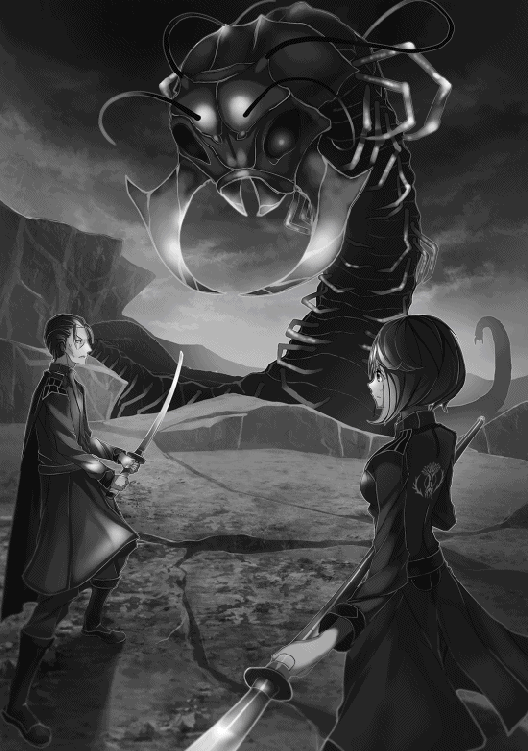
持ち上げた頭部には、反りをもつ大刀のような巨大な二本の牙が飛び出しており、全身から濃い紫色の〝妖気〟を滝のように垂れ流すカテゴリー五の妖魔、鬼ムカデ。
さすがの二人もその鬼ムカデには苦戦していた。
陽一の刀も、希美花のなぎなたも、体表をかすりこそすれ大きな傷を負わすことには成功していない。
二人の刀撃のすさまじさを物語るように、切りつけるたびに青白い火花が散っているが、鬼ムカデに致命傷を与えることはできないでいた。それでも二人が諦めることはなかった。
もう一時間は戦っただろうか、鬼ムカデの傷は増えているが、二人の疲労の色も濃くなっていった。加勢できるものなら加勢したい。そう考えた中村だったが、自分の〝気〟力では、あの〝妖気〟に触れただけで悲惨な最期を遂げるであろうことが容易に想像できた。
それは兵士や志願兵、将官たちにも言えることで、誰も加勢できないでいた。それを見かねたのだろうか、二人の娘である一花が戦いに割って入った。
一花はまだ十六になったばかり、当時九十の中村からしてみれば、まだ幼子もいいところだった。
──いくら始祖様とはいえ、幼すぎる......。
しかし、一花は中村の認識を吹き飛ばすような力と動きを見せることになった。
陽一も希美花もさすがは始祖と言われるだけの圧倒的強さを誇っていた。けれども、一花のそれは二人をはるかに凌駕していたのである。
一花が手に持っている刀は二本の大小であり、背丈は母希美花にあと少しというところだった。あの細腕ではあの鬼ムカデに傷一つつけることは叶わないだろう。そう考えていた中村の目に映った光景とは......。
信じがたい光景だった。高科夫妻ですら、一時間近く戦ってやっとの思いで傷を負わせていた鬼ムカデを、最初のうちは苦戦していたものの、小刀を捨て、大刀一本の両手持ちに切り替えた数分後には、一方的に切り刻みはじめたのだから。
一花が参戦してものの十分もしないうちに、鬼ムカデは細切れに切り刻まれ、最後には彼女が放ったとてつもない〝気〟によって閃光とともにその頭部を消滅させてしまった。
一花こそ真の始祖であり、最強の人間である。
御殿場決戦に参戦した兵士や志願兵たちの誰もが、この圧倒的な戦いを目の当たりにしてそう思ったことだろうと中村は確信していた。
──そんな一花様とあの若造に何の関係が......。
「彼は空、一花様が認めた始祖よ。だから大丈夫。絶対に......」
もちろん遥は中村に対して語っていたのだが、自分に対しても言い聞かせるように言葉を飲み込んだ。
一方の中村は、遥から告げられた空の素性に、目を見開いて驚愕を示したのだった。
◇◇◇◇
「これくらいでいいか」
巨熊三体を宿屋街の入り口から遠ざけることに成功した俺は、これで誰も巻き込むことにはならないだろうと確信し、一旦距離をとった。
街の周りを囲む幅約十メートルの水を湛えた堀。その堀に二か所かかる街の出入り口として使われている幅約五メートルの頑丈な木製の橋。その橋から俺が今いる位置は三十メートルほど離れている。
対する巨熊三体は、俺の垂れ流す〝気〟に敵意をむき出しにしていた。
「なんとか上手く行った」
巨熊をここまで引き離そうとした際、橋を渡り切ってすぐに俺のショルダータックルを受けた個体の後ろにいた残り二体は俺から離れた。
が、その二体も俺の〝気〟に反応してここまで追ってきた。
要するに俺は今街を背にしているのだが、後ろに二体、前に一体の巨熊に囲まれているわけだ。
ヘイト管理は見事に成功し、俺としてはしてやったりなのだが、知らない奴が見ればまんまと敵に囲まれた哀れな男に見えるかもしれない。
「ココからが本番だ」
そんなどうでもいいことは置いておくとして、俺は背にしょっていたツルハシを手に取って構えなおした。
カテゴリー四の妖魔がどれほど強いか、話には聞いているが俺には実感がない。今までの動きを見た限りでは、遥が戦っているはずの大きな山犬ほどの素早さはなさそうだ。いや、はっきり言って鈍い。
「動きだけは大したことないな。いやいや、油断大敵だ」
〝気〟を使いこなせなかったころの昔の俺からしてみれば、おそらく反応できるかできないか程度の動きだった。ならば、ここはひとつ引っかき回してやろうか。
でも、決して油断はしない。
そう考えて俺は目の前にいる一体よりも、後ろにいる二体を目標に定めた。
そう決めた特別な理由はないが、まずは俺の速度にどこまでついてこれるかだ。
「まずは小手調べだ」
とっさに身をかがめた俺は、三割くらいの力でそのまま横に五メートルほど跳躍して振り返った。
巨熊三体はしっかりと俺の動きを目で追っている。体の動きが鈍くてもこの程度はできるわけか。
「ならば」
そのままの体勢から五割の力で斜めに走って、今度は二体の後ろに回り込む。回り込むといっても直線的な動きだ。これなら眼だけで追うことはできまい。
その考えを証明するように、二体は俺の姿を見失ってキョロキョロしている。二体を挟んで向こう側にいる一体には俺の姿が見えているようだが、合図を飛ばして連携を取るみたいな知能は持ち合わせていないらしい。
「所詮は獣ということか」
しかも、俺の動きを目で追うだけで向かってくるそぶりは見せない。いや、見せないというのは表現がよくないだろう。襲い掛かろうとしても俺の動きが素早すぎてついてこれないようだ。
「これ以上様子を見る必要はないか」
とも考えたが、敵の能力を見誤って怪我をしたとあってはただの阿呆だ。
ということで、まずはジャブを入れてみることにした。ジャブと言ってもさすがに素手で殴りつけるつもりはない。
二体の後ろに回り込んだ反動を活かし、今度は巨熊の後ろから右側にすり抜けるように駆け抜ける。そのすれ違いざま、ツルハシを一振り。反撃されると怖いのでツルハシを振るう力は二割ほどだ。
「ハッ」
ガキィッ！ という音がしてツルハシは巨熊の後頭部に見事命中した。しかし、小さな青白い火花を散らしただけで巨熊には傷一つついていないようだった。しかも、痛がっている素振りすら見せやがらない。
「やっぱり硬ぇな」
ツルハシの尖ったほうの先端で殴りつけたのに、傷一つ負わずに痛がる素振りも見せないとはさすがカテゴリー四といったところか。
噂に聞いた話では、一花ちゃんはカテゴリー四の妖魔を一刀両断に瞬殺できるという。今の俺とでは雲泥の戦闘能力差だ。
「でも、俺は俺だ。一花ちゃんじゃない......待てよ」
なんてことを考えてみたが、よくよく思い出してみれば、一花ちゃんの〝気〟の保有量は俺より少し多い程度だった。
ならばなぜ、俺にはできなくて一花ちゃんにはできるのだろうか。何か理由がなければ説明がつかない。コツでもあるのだろうか？
しかし、この場でのうのうと考え込んでいるような余裕はない。
「戦いながら試行錯誤するしかないか......ならば」
そう思った俺は、巨熊三体の間を縦横無尽に駆け、跳躍し、徐々にツルハシを振るう力を上げていった。
攻撃していればそのうち分かるかもしれない。
もうどの個体が目標というわけではなく、目についた敵をツルハシの尖ったほうで殴りつけていく。
三割の力で殴ったときは巨熊に変化がなかった。うっとうしいハエでも追い払うかのごとく、俺が通り過ぎた後を自慢の爪で薙ぎ払うだけだ。
「アレを喰らったら......」
守りを固めていれば別だが、その爪を無防備に喰らったら、ただでは済まないと思わせるだけの威力を俺は感じ取っていた。
「硬いしバカ力だけど、やれることはやっておかないとな」
そう思って四割の力で殴ったときも、五割の力で殴ったときもほとんど同じだった。
少し違ったのは、ツルハシを握る俺の手が少し痺れただけだ。
「コイツらどんだけ硬いんだ？」
というのがそのときの俺の率直な感想である。
それならばと、巨熊三体を引っかき回しながらも振るうツルハシに力を上乗せる。今度は六割だ。
「フンッ！」
音がガキィ、からガシィッと湿ったような音に変わった。
「おっ!?」
明らかに手ごたえが違っていた。
理由は簡単だ。巨熊に傷をつけたからである。
跳ね返されていた運動エネルギーが、仕事をして熱と音に変わって消費されたのだ。おかげで手に痺れが出ない。
それを裏付けるように、巨熊は殴られた後頭部を押さえて吠えた。六割の力で傷つけることができるということは、全力で殴ればなんとかなるかもしれない。
「全力で行けばなんとかなるか......いや」
一瞬、全力で殴ってしまおうかと考えたが、そんなことをすれば確実に俺の動きが止まってしまうだろう。
相手が一体ならそれでもいいかもしれないが、現実には三体を相手にしているのだ。そんな危険なまねはできない。
ならばどうすべきか？
「とりあえず七割の力で試してみるか」
あまり深く考え込んでいる余裕はない。そう考えて再び俺は巨熊三体を引っかき回した。そして適当な一体に狙いを定める。
「ドォリャァッ！」
今度はガシュッ、という音に変わった。さっきよりもツルハシを介して手に伝わってくる感触が柔らかい。
「っしゃぁ！」
さっきよりは確実にダメージが入っている。
ツルハシで殴られた巨熊は、後頭部を前足で押さえながら頭を二度三度と振った。これなら八割程度の力で殴り続ければなんとか倒せそうだ。
いや、九割までいけるか？
「ダメだ」
九割の力を出すと殴った後の俺の動きに遅延が出るかもしれない。
さらに、殴りつける力を八割に抑えなければならないもう一つの理由に思い至った。
それは、ツルハシの柄が限界に近づいていたことだ。
全力で殴れば確実に折れる。俺が全力で〝気〟を流し込むと、木製の柄が耐えられそうもなかったからだ。
こうなることがはじめから分かっていたのなら、もっと高級なツルハシを買っておけばよかった。
「そんなこと考えても後の祭りだな」
しかしである。
なんとか巨熊を倒せるめどが立ったことは大きい。
「我慢比べと行こうじゃないか」
時間はかかるだろうが、三体の巨熊を引っかき回しつつ八割の力で殴り続ける。
これしか今の俺と愛用のマイツルハシに取れる選択肢はなさそうだ。
そうと決まれば後は実行に移すだけ。俺は気合いを入れなおして巨熊三体の中に飛び込んでいった。
◇◇◇◇
中村とともに戦っていた遥は、二人で連携を取り合って着実に大山犬にダメージを蓄積させていた。
〝気〟力が高い遥が攻撃の要で、中村は遊撃というよりは陽動に徹して大山犬の注意を引きつけつつ戦っている。
中村は一応特級発掘師であるが、彼の〝気〟力は五百強であり、特級発掘師としては低い部類に入る。
実質、彼の〝気〟力が遥の三分の一強でしかないのが真実である。
自分の実力を十分に理解している中村は、無謀な攻撃をすることなく、遥の実力を知っていたこともあって、彼女に攻撃を任せていた。
「はぁ、はぁ、遥嬢、もう少しだ」
「ええ、分かってる。でも油断しないで」
「遥嬢もなっ！」
遥に飛びかかろうとした大山犬の後頭部を、中村が後方から駆け抜けてツルハシで殴り飛ばした。中村はその場で反転離脱し、大山犬の注意を自分に引きつける。
中村を睨みつけて唸り声を上げる大山犬は、体中を切り刻まれていたるところから血を流しているが、その血の色は赤ではなく、黒と言っても言い過ぎではないほどに濃い紫色だった。
本来血液とは、酸素を体細胞に運ぶため、赤血球に含まれる酸化鉄の赤色をしているものだが、妖魔の場合は運ぶ対象が〝妖気〟であるため、このような色になっているとこの時代の学者の間では結論付けられている。
与太話はこれくらいにして、今度は遥が攻撃する番だ。
遥の予測というか経験では、あと一、二回攻撃を叩き込めば大山犬は動けなくなる。そうなればシメたもので、一気にたたみかけてとどめを刺すだけだ。
遥は、できるだけ慎重に狙いを定めて大山犬の後頭部、さきほど中村が殴りつけた場所へとツルハシを振り下ろした。
「ハッ！」
ギャイィィィン！ と今までにないかん高く大きな悲鳴を上げた大山犬は、遥のほうに振り返ったが、もうその動きに精彩はなかった。
予測どおり大詰めが近い。
そう感じ取った遥は、離脱することなく一気に攻勢をかけた。
大山犬の頭部めがけてスピードに乗ったツルハシを振るう。
一撃、二撃、そして三撃目が後頭部に深く突き刺さった。ついに大山犬の頭骸骨をツルハシの先が貫通したのだ。
すかさず、遥はツルハシにありったけの〝気〟を流し込んだ。
「はあぁぁぁ！」
バチバチという破裂音が、青白い光とともに大山犬の後頭部、すなわちツルハシの先から聞こえてきた。
やがてその光と音が収まり、後頭部がはじけ飛んだ大山犬がぐったりと倒れ込んだ。痙攣すら起こさない完全な死だった。
「ふぅ、なんとか終わったわね」
「ああ、完全に死んでいる」
大山犬の死を確認した遥は、油断することなく周りの様子を見渡して戦況を確認している。それは中村も同じだった。
「もうほとんどケリはついたみたいだな」
「そうね、あっちを除けばだけど」
そう言った遥の表情が晴れることは無かった。
確かに中村が言うとおり、カテゴリー二の妖魔、山犬の群れは残すところあと二体にまでその数を減らしており、あと数分もすれば決着がつきそうだった。
しかしまだ、最大の脅威が健在なのだ。その脅威を空に任せるしかなかった遥は、彼とともに戦えない無力さに歯噛みしたい気分だった。
が、街中に限って言えば、最悪の事態はなんとかしのぎ切れそうだった。
ここまで事態が好転したのは、遥の加入が大きかったこともあるが、鈴音や哲也の活躍も大きかった。
◇◇◇◇
鈴音と哲也は他の発掘師たちとともに、カテゴリー二に分類される妖魔、山犬の群れに相対していた。
あれだけの数がいた山犬も残すことあと二体。
もう少しで決着がつきそうだ。
「二人とも若いのに大活躍だな」
肩で息をしている鈴音と哲也に、中年のベテラン発掘師が声をかけた。鈴音と哲也は息も切れ切れな状態だったが、残った山犬から視線を逸らしてはいない。
盾役に徹し、二匹の山犬をツルハシや手斧でけん制している五人の発掘師たちの後方から、二人は山犬たちの隙を窺っていた。
「大活躍だなんて大げさですよ。けん制してくれる先輩たちがいなけりゃ、俺たちもどうなってたか分からないし」
「謙遜すんなって。右も左も分からねぇくらい若いんだから、お前は誇って自慢するくらいでいいんだよ。嬢ちゃんだってそうだぞ」
「そんな余裕ないです。今だって怖くて怖くて逃げ出したいけど、遥先輩や空さんだってあんなに頑張ってるんですから。私だけ逃げるわけにはいかないんです」
そう言って、鈴音は一瞬だけ視線を門の外で死闘を繰り広げている空に向けた。
ベテラン発掘師も、その視線を追って巨大な熊三頭を翻弄している空を一瞬だけ見やり、軽く目を見開いた。
「確かにありゃぁバケモンだ。俺たちとは次元が違いすぎる。嬢ちゃんはあの若いのと知り合いなのか？」
「はい。空さんは私たちの仲間です」
息を切らしながらも、誇らしそうにそう言った鈴音に哲也も同調する。
「ああ、空は一花様も認める始祖だ。そして俺たちの仲間だ。仲間があんなに頑張っているのに、俺達が逃げ出したら合わす顔がないよな」
山犬二匹から視線を外すことなくそう言った哲也が走り出した。
それに呼応するかのように鈴音が続く。
盾役のひとりがけん制のために突き出したツルハシに、一匹の山犬が噛みつき、力まかせに後ずさりしているその頭頂に、横から走り寄った哲也が渾身の一撃を青白い火花を伴って喰らわせた。
大山犬は、たまらず咥えていたツルハシを離し、たたらを打つようによろめいて、かん高く大きな悲鳴を上げる。
それでも、哲也が振り下ろしたツルハシの鋭利なその先端が、山犬に致命傷を与えることは無かった。
「後は任せた」
そう言って飛び退った哲也に鈴音が応える。
「はい！」
哲也の後に続いていた鈴音は、離脱した彼によってもたらされた山犬の大きな隙を無駄にすることなく、十全に〝気〟をみなぎらせたツルハシを振り下ろした。
もともと、鈴音の〝気〟力は、哲也のそれと比べて三割強も大きい。見た目は華奢な少女であるが、こと戦闘力に関しては彼女のほうが高いのである。
最初の数匹までは哲也も山犬に致命傷を与えることができていたが、戦いも後半に差しかかると、その疲労からとどめは鈴音に任せるしかなくなっていた。
遥には劣るが、それでも山犬に致命傷を与えるには十分な〝気〟が、鈴音にはまだ残っていたのだ。
鈴音が振り下ろしたツルハシは、見事に山犬の頭蓋を打ち抜き、込められた〝気〟によってその頭部を火花とともに爆散させたのだった。
「気を抜くな嬢ちゃん！」
ベテラン発掘師の叫びに、鈴音は山犬を打倒したことに喜ぶこともなく即座に後方へと飛び退いた。
「あと一匹だ。嬢ちゃん、その調子で頼むぞ。悔しいが俺達じゃ盾になるくらいしかできんからな」
そう言ったベテラン発掘師は、疲れた仲間と入れ替わるように残った最後の山犬の正面に躍り出た。
それから数分後、最後の山犬にとどめを刺し終えた鈴音たち二人は、怒号のような勝鬨によって祝福されていた。
しかしその勝鬨を上げた発掘師たちも、いまだに繰り広げられている空と巨大熊の死闘を目の当たりにし、静まり返ったのだった。
◇◇◇◇
発掘師たちの勝鬨を他所に、心配そうな表情の遥の視線の先では、今も空が巨熊相手にツルハシを振るい続けていた。
「始祖というのは俺たちの常識の外にいるのは間違いないな。カテ四の大爪熊三体を相手にしてあの立ち回りだ。しかも使っている武器は発掘師らしくツルハシだしな。軍人が持つ妖魔専用刀があれば一撃で倒しちまいそうな勢いじゃないか」
「たしかにそうね。でも空は貴族でも軍人でもないわ」
「それにしても、アイツは空っていうのか。遥嬢をここまで心配顔にさせるとは、隅に置けないじゃないか。遥嬢、アイツのことまんざらでもないって思ってるだろ」
遥は中村に核心をつかれて動揺を隠せなかった。顔を紅潮させたまま、それ以上言ったら承知しないとばかりに中村を睨みつける。
しかし、その間に巨熊と空の戦いに変化が見られた。
「おお、コワイコワイ。それより見なくていいのか？ 決着がつきそうだ」
中村の視線の先では、空が一体目の巨熊にとどめを刺しているところだった。
巨熊の後頭部に空の振るったツルハシが突き刺さっている。
残りの二体も空を攻撃しようと、ヨロヨロと立ち上がろうとしているが、力が入らないようで、襲い掛かることができないでいた。
「ええ、あの調子だともうすぐ終わりそうね」
顔はまだ紅潮したままの遥だったが、空を見つめるその表情には、空が巨熊を圧倒している安堵感よりも、彼を心配する色のほうが濃かった。
発掘師や兵士たちと山犬との戦いにも決着がついたようで、ほぼ全員が空と巨熊の戦いを観戦している。
しかしながら、誰もその戦いに近づこうとする者は現れなかった。
皆知っているのだ。いかに弱っていようとカテゴリー四の妖魔に近づくことが自殺行為だということを。うかつに近づけば、戦いの邪魔にしかならないということを。
「遥先輩、空さんはやっぱりスゴイ方だったんですね。妖魔化した大爪熊を三体も相手にして圧倒してるじゃないですか。カテゴリー四を三体ですよ」
「鈴音ちゃん、無事だったみたいね。哲也君も」
そう言った遥だったが、彼女の表情はいまだにすぐれない。たとえ圧倒しているといっても相手はカテゴリー四だ。
少しの油断で怪我では済まされない深手を負ってしまう可能性がある。
加勢に駆けつけたいが、自分の実力では足手まといにしかならないことを遥はよく理解していた。
鈴音と哲也が遥のもとに駆けつけたちょうどそのとき、空は二体目の巨熊にとどめを刺し終えていた。
残るはあと一体。ここまでくれば、宿屋街への妖魔襲撃も終わりだろうとほとんどの者が考えていたが、最後の一体が倒れるまで、遥の気が休まることはなかった。
「この調子じゃ富士宮防衛線に出した早馬が無駄になっちまうな。そうなったほうが良いに決まってるんだろうが」
「今まで豊田鉱山にカテゴリー四の妖魔が出るなんて無かったことよ。軍に報告を入れて直ちに調査してもらったほうが今後のためだわ」
「それもそうだな。そういうことにしておこうか。お小言を喰らうのは俺が引き受ければいい話だしな」
諦め顔でそんなことを言いながらも、中村は大山犬や山犬の群れと戦って負傷した仲間たちの安否が気になっていた。
早く倒れた仲間の元へと戻りたい。そんな思いが中村の心中には渦巻いているが、クランのリーダーとしては、脅威すなわち今空と戦っている巨熊が完全に倒されるまでは、戦況に注意を払っていなければならなかった。
妖魔とは、生きている限り決して気を抜いてはならない存在だということを中村は熟知していた。
倒れた仲間全員が生きていれば、という思いが無いわけではない。
しかし、そんなに世の中が甘くないことも中村は知っている。
早く終わってくれ。そんな中村の祈りが通じたのかどうか分からないが、最後の巨熊が倒れ、とどめを刺された。
周囲から怒号のような勝鬨が上がる中、中村は倒れた仲間のもとに急いだ。そして、遥も空のもとへと駆け出したのだった。
◇◇◇◇
富士宮防衛線で奮闘している一花のもとに、豊田鉱山から早馬が届いていた。急きょ中村が伝令に送った発掘師だ。
本来は豊田鉱山の守備隊から出るはずの伝令だったが、妖魔の奇襲を受けた守備隊に早馬を出す余裕がなかったための応急策だ。
伝令として駆けつけた若手の発掘師は、両側から寄り添うように兵士に監視された状態で、恐々としながら一花の前へと連れてこられた。
その発掘師を先導していた兵士が、一花の前に顔を伏せて跪く。発掘師と監視役の兵士もその後ろに顔を伏せて跪いた。
「一花様に申し上げます。豊田鉱山から伝令の者が参っております」
見るからに発掘師らしい者を伴ってきた部下からの報告を聞き、一花の脳裏には嫌な予感がよぎっていた。
「豊田には守備隊が配置されていたと思いますが......何かあったのですか？ 発掘師の方、顔を上げてください」
恐る恐る顔を上げた発掘師は、一瞬一花に見惚れてしまうが、質問されたことを思い出し、一刻も早く伝えなければならないことを話しはじめた。
その話を聞くにつれ、一花の取り繕っていた表情に焦りの色が見えはじめる。そしてその焦りの表情は、苦虫を噛み潰したような険しいものへと変わっていった。
「──現在残った守備隊の方々と発掘師が総出で対応しております」
なんとか伝令を終えることができた発掘師は、中村に命じられた役目を無事果たせてホッとしたと思ったのも束の間、報告を聞き終えて険しい顔をしている一花に、その顔を青ざめさせた。しかし。
「よく伝えてくださりました。貴方と貴方のクランには後で褒賞を贈りましょう」
青ざめている発掘師を見てハッとした一花は、無理やり表情を緩めて笑顔を作った。そんな一花だったが、その内心は到底穏やかなものではなかった。
もちろん一花は知っている。豊田鉱山には今、空が滞在しているということを。
発掘師の報告が真実だとすれば、鉱山を襲った妖魔の中にはカテゴリー四が三体も含まれている。
今の時代に復活して間もない空が、カテゴリー四の妖魔三体と渡り合えるとは、一花にはどうしても考えられなかった。
妖魔の強さはカテゴリー三から跳ね上がり、それが四になると、たとえ一体であろうと、戦闘が専門ではない発掘師には絶望的な脅威となる。
たとえ特級発掘師が束になったとしても、妖魔専用武器が無い限り絶望的な戦いにしかならないのだ。
今の一花は、たとえカテゴリー五の妖魔であろうと単独で渡り合えるだけの、自信と実力を身につけている。
しかし、そこまでの実力を簡単に身につけたわけではなかった。
幼少のころから続けてきた血のにじむような訓練と、対妖魔用の、しかも最上級の装備、そして数知れない実戦があったからこそ、一花は今の強さを得るに至ったのだ。
対して今の空は、シェルターから出てまだ一年も経っておらず、妖魔との実戦経験など皆無に等しいはずだ。
さらに、空は軍人でも貴族でもないのだから、彼が対妖魔用の装備など持っているはずがないのだ。
駆けつけてくれた若い発掘師から報告を受け、即座にそう思い至った一花は、何もかもかなぐり捨てるようにその場を飛び出していた。
そしてその表情は、絶望的なまでに焦燥の色を呈していた。
「やれやれ、確かに空君のことは心配だが......藤崎侯」
一花のあまりの焦りように、即座に彼女を追おうとした藤崎を陽一が呼び止めた。
我が子にせめてもの手向けを届けさせるために。
我が子と空の無事を少しでも確実なものにするために。
「前線の指揮は私が引き継ぐ。貴殿の指揮する遊撃隊を連れていけ。卿一人で後を追うより速度は落ちるだろうが必要になるはずだ。そのほかの増援も直ちに送らせる。まったく、指示も出さずに飛び出すとは一花にも困ったものだ」
陽一としても空のことが心配で急ぎ駆けつけたかったが、今も妖魔が襲い来る富士宮防衛線を空けるわけにはいかなかった。
そもそも、富士大公国のトップである陽一が、前線に赴いていることでさえ異常事態なのである。
それほどまでに高ランクの妖魔が出現し続けているのだ。
いざというときに、防衛線に始祖クラスの強者がいなければ、多大な犠牲が出ることは想像に難くなかった。
陽一はもう見たくなかった。かつて経験したようなじり貧の戦いを。無残に死んでいく兵士たちの姿を。
◇◇◇◇
動き回って攻撃を回避しつつ、妖魔化した巨熊三体を嫌というほどツルハシでそれはもう何十回何百回と殴り続けてなんとか倒せた。
そのおかげで、息は上がるし手にマメができて潰れるしで、もう精根尽き果てたって感じだ。
けれども、倒したと同時に上がった大気を揺さぶるような勝鬨が、俺の自尊心をくすぐってなんだか心地いい。
それはいいとして、倒し方がスマートじゃなかったと俺は思っている。
こんな疲れる戦闘はもうこりごりだ。しかしこの時代に生きている限り、これからもさっきみたいな硬い敵と戦うことになるだろう。
もっと楽にとまではいかないにしろ、余裕を持って勝てるようなスマートな戦い方を身につける必要があるなと、このとき俺は強く思った。
今の俺では、さっきみたいなかなり強引な方法しか戦い方が思いつかなかった。
そのせいもあってだろうが、最後の一体にとどめを刺したとき、とうとうツルハシの柄が折れてしまったのだ。
柄は交換すればそれで済む話だが、こんなギリギリの戦いは二度とゴメンだ。
エレガントな戦い方とまでは言わないが、せめてもう少し余裕を持って戦えるように何か考えておく必要があるだろう。
ともあれ、勝つことは勝ったことだし、と思って街に戻ろうと振り向いたら、駆けよってきた遥に抱きつかれてしまった。
戦いに勝って気を抜いていたせいもあるが、発掘師たちが上げる勝鬨が大きすぎて遥の接近に気づかなかった。
「ゴメンね、ゴメンね空。一緒に戦えなくて」
俺は一瞬事態が飲み込めなかった。こんな遥を見たことがなかったからだ。
今の遥には普段彼女が見せる勝気なところも、少し達観したような冷静さも、なれなれしい図々しさも、全くと言っていいほど見ることができない。
山小屋で山猿と戦ったときは今日より強引な戦い方をしたというのに、あのときの遥はどちらかといえば、俺に呆れていた感じだった。
それなのに今の彼女は、か弱い少女そのものだ。
「遥が謝ることないよ。それに、勝ったんだから少しはホメてくれないかな」
「うん。スゴかったよ空」
遥は素直に俺をホメてくれた。スゴイとまで言ってくれた。
薄らと涙を浮かべ、俺の首筋に両手を掛けたままはにかんで見上げてくる遥が、このときほど可愛いと思えたことはなかった。
宿屋街のほうからは冷やかしのヤジが聞こえてくるが、もうそんなことはどうでもいいとさえ思えた。
そして俺は遥を抱き締め返していた。これは役得だ。俺だけの役得だ。誰にも譲る気なんて無い。
大勢が見ている前で恥ずかしいが、今は遥を抱き締めるこの至福感を誰にも奪われたくはなかった。
滴る汗が彼女の革製の装備を蒸らし、独特な甘い女の匂いをあたりに漂わせているが、全く不快だとは思わなかった。
むしろずっとこの香りをかいでいたい。そうとさえ思えたほどだ。
しかし、そう思ったのがいけなかったというわけではないだろうが、俺のこの至福の時間を邪魔する奴が現れやがった。
「クソッ！ せっかくの雰囲気を邪魔しやがって」
遥も気がついたようだ。そして、彼女の顔が絶望の色に染められていった。
どうしてこんなときにと、悪態をつきたくなるが、俺のレーダーに引っかかる〝妖気〟がそんな感情を吹き飛ばしてしまった。
ヤバいなんてもんじゃない。カテゴリー四の妖魔？
そんなものは駄々をこねる幼児のパンチと何ら変わらない。
そう思えるほどに圧倒的で絶望的な〝妖気〟。
それが遠くから近づいてきている。
「遥、こんなことしてる場合じゃなくなったみたいだ。街にいるみんなを連れて遠くへ逃げてくれ」
俺の腕の中で遥はガタガタと震えている。
特級発掘師の中でも随一と言われるほどの猛者である遥が、恐怖におののき震えている。俺の言葉など今の彼女には届いていない。
「遥！ 頼むから俺の言うことを聞いて逃げてくれ」
俺は遥の怯えを断ち切るかのように叫んでいた。
「空も一緒に逃げて」
「ダメだ。あんな奴を放っておいたら何人死ぬか分からない」
「でもっ！」
遥は懇願するように、そしてすがるように俺を離そうとしなかった。
妖魔は生物の〝気〟に引きつけられる。
人の〝気〟が多く集まる鉱山や工事現場。それを順にたどっていけば、やがて首都へとたどり着くはずだ。
その前になんとかしなければ。この場所でなんとかしなければ。
そして今、なんとかできそうなのは俺だけだ。その思いが俺を突き動かす。
「俺が時間を稼ぐしかないだろ？ なに、俺も馬鹿じゃない。時間を稼ぐだけだし必ず生きて戻る。だからお願いされてくれないか、遥。みんなを連れて逃げてくれ。そして俺に援軍を届けてくれ」
押し黙ってしまった遥の震えは収まっていない。
しかし、彼女は振り絞るように笑顔を作って応えてくれた。
「......まったく、空はそうやっていつも無理するんだから。でも、絶対に死なないってもう一回約束して」
「ああ、絶対に死なない。ほら、もう時間がないから」
「......うん、これ使って。空の折れちゃったでしょ」
「ああ、ありがたく使わせてもらうよ」
差し出された遥のツルハシを受け取ると、名残惜しむようにためらった後、彼女は俺のもとを離れていった。
その後ろ姿をしばらく目で追った俺は、これ以上ない絶好のシチュエーションでの、遥とのイチャラブタイムを邪魔してくれやがった諸悪の根源へと意識を向ける。
方向は北東に見える森の中。
いまだ姿は見えないが、その凶悪な〝妖気〟が、俺の〝気〟のレーダーにビシビシ反応しやがる。
距離は百メートル強。もうすぐ姿を現すはずだ。
そう思った刹那、森の終わりがワサワサとざわめきはじめた。
「でけぇ」
あり得ないほどに濃密な〝妖気〟を垂れ流しながら現れたのは、どう見てもカマキリだった。ただし、その大きさが尋常ではない。
地上から逆三角形の頭部までどう見ても十メートル近くある。体長は二十メートルほどだろうか。体を支えている四本の足もぶっとい丸太のようだ。
一辺一メートルを超えるだろう逆三角形の下には、五十センチはあろうかという牙のような巨大な大あごがあり、体全体から紫がかったどす黒い〝妖気〟を滝のように垂れ流していた。
普通の、いや、特級発掘師である遥でさえ、あの〝妖気〟を浴びてしまったら、果たして生きていられるのだろうか？
そう思えるほどに、濃密でまがまがしい〝妖気〟を、妖魔はとめどなくその体から垂れ流している。
そしてその凶悪な巨大カマキリの体色は、黒をベースにした赤のまだら模様。まさにグロテスクを絵に描いたような存在だった。
ついさっき戦った巨熊なんて、コイツと比べれば巨象に噛みつこうとする三匹の小さなアリ以下だ。
そう思えるほどに現れたカマキリは凶悪な存在感と巨大さを誇っていた。
「なんて存在感だ......」
カマキリとの距離はまだ百メートルくらいあるが、奴の意識も俺をとらえているようだ。森から出たとたん俺に視線を固定し、決して外そうとしない。
そしてその視線は、死線とも死閃とも表現できそうなほどに凶悪で鋭かった。
遥にはカッコつけてあんなことを言ってしまったが、今すぐ尻尾を巻いて逃げ出してしまいたくなるほどの存在感だ。
「いっそ逃げるか......」
そんなマネができるわけがない。できるわけがないが、まともに戦うことなどもっとできそうもなかった。
どうする。どうする空。俺は自問を重ねる。
武器は遥が貸してくれたツルハシのみ。俺が使っていたものより高級品だから簡単に折れるようなことはないだろうが、ダメージを与えられる気が全くしない。
何か有効な攻撃手段はないか？
冷静になれ、焦っちゃだめだ。考えろ。考えろ。考えろ。俺は高速で自問し続けた。
しかし、そう簡単に答えなんか出るはずがない。
そんな俺をあざ笑うかのように、カマキリ野郎は近づいてくる。のそりのそりと近づいてくる。
近づいてくるにつれ、その巨大さ、凶悪さ、グロテスクさを否応なく理解させられる。カマキリ野郎と俺の距離が五十メートルを切った。
しかしまだ時間はある。
「そうだ時間だ！」
俺はみんなが逃げるために、そして援軍を間に合わせるための時間をなんとかしてひねり出すためにここに残ったんだ。戦って勝とうなんて、そんなおこがましいことを考ちゃダメなんだ。
〝気〟をぶつけて注意をひきつけ避けに徹すれば、最悪でもみんなが逃げ出せる時間ぐらいは稼げるはずだ。
一時間、いや、運よく二時間稼げれば援軍が間に合うかもしれない。
カテゴリー五の妖魔を倒したことがあるという一花ちゃんや、軍の精鋭たちが大挙して駆けつけてくれるかもしれない。
ようやく方針を決めることができた。
そう考えて俺はツルハシを背負い、カマキリ野郎を待ち受けた。こいつはいざというときに使わせてもらおう。避けに徹するなら手に持っていては邪魔だ。
「焦るなよ......焦るな俺」
そんな想いを知ってか知らずか、カマキリ野郎は容赦なく近づいてくる。
三十メートル。二十メートル。十メートル。奴の垂れ流す恐ろしいまでに濃密な〝妖気〟が、俺の〝気〟とせめぎ合って、周囲でチリチリと紫電を発生させはじめた。
「そろそろ奴の間合いか？」
そう思ったとき、俺の前方十メートルまで近づいてきたカマキリ野郎は、そこで立ち止まると両カマをゆっくり振り上げた。
その高さは十五メートル近く、その圧倒的存在感と不気味さは、思わず尻込みしてしまいそうな恐怖感を俺に抱かせるに十分だった。
あんな高さから振り下ろされるカマをまともに喰らったら、と思うと生きた心地がしないし、カスっただけでもどうなるか分からない。
「とにかく避けることに集中すべきだ......」
そうとしか思えなかった俺は、全神経をカマキリ野郎の動きに集中した。
カマキリ野郎から溢れ出るまがまがしい〝妖気〟が、俺の〝気〟と反応してチリチリと痛い。その痛みが俺を奮い立たせた。
刹那、唐突にカマが振り下ろされる。とっさに全力で、俺は後方に跳び退った。
ヴゥォン、と鈍い風切り音とともに振り下ろされたカマが、俺がさっきまでいた場所に深く深く突き刺さっている。
「危ねぇ」
それでもカマキリ野郎は止まらない。大地に突き刺さっていないほうのカマが、跳び退った俺を追いかけるように横なぎに振るわれた。
しかし、カマキリ野郎の動きに集中している俺に当たることはない。とっさに屈み込み、俺の頭上を通り過ぎたカマから不気味な重低音が聞こえてくる。
同時に、〝妖気〟と〝気〟がぶつかり合って閃光がはじけた。その閃光に気を取られることなく、俺は低くした重心を活かすように真横へと跳び退った。
「今のはヤバかった」
本当にヤバかった。奴の間合いは十五メートル近いし、一撃目より格段に速度が上がっていた。しかし、間合いはだいたい分かったし、俺の速度のほうがまだ上だった。
あの程度と今の俺が言うのはおこがましいかもしれないが、今の攻撃だったら避け続けられる。そう確信できたことは大きかった。
自慢のカマを二度も躱され、苛立つようにギロリと、漆黒の巨大なまなこをその顔ごと俺に向けてきたカマキリ野郎を、これ見よがしに挑発する。
「そんなに俺が喰いたいか。けどなぁ、喰われてなんかやらねぇからなぁ！」
カマキリ野郎に俺の言葉が理解できないことなど、言われなくても分かりきっている。それでも、俺は自分を奮い立たせるために叫んでいた。
その叫びがカマキリ野郎を刺激したのだろうか、次の攻撃はさっきのなぎ払いよりも速度が上がっていた。しかし、俺にはまだまだ余裕がある。
避けることに徹した今の俺に、その程度の攻撃など当たりはしない。
俺はカマキリ野郎の周りを、まるでバッタにでもなったかのように跳び回り、振り下ろされるカマを避け続けた。
左、右、前、後ろ、それこそ自由自在に避けまくった。
『バッタは後ろに跳べないだろ』
なんてヤボなツッコミは無しだ。そんなへ理屈をこねる不届き者には、コイツのカマをプレゼントしてくれる。
なんてことを考えられるくらいの余裕が、今の俺にはあった。余裕ができれば自然と体の動きも切れてくる。
今の俺に触れられるのは、あたりに満ちる空気くらいだ。
そんな感じで、少し調子に乗ってはいたが、すでに一時間以上は跳び回り続けた。が、戦いというもの、そんなに甘くは無かった。
人間というもの、動き回っていればいくら余裕があっても、いずれはどこかが疲労する運命にあるのも当然の節理だ。
それはもちろん、最も酷使していた俺の両足だった。とうとう両足の筋肉が悲鳴を上げはじめた。
ツリそうだとかそういうのじゃない。酷使しすぎて熱を持ちはじめたのだ。
そのせいで瞬発力が落ちてきている。
「このままじゃヤヴァい。どうにかしてクールダウンできないかな......」
もう少し、もう少し避け続けて時間を稼げば、最低のノルマは達成できる。そのためにもなんとかして足を冷やさなくては。
焦る気持ちを必死に抑え、さっきまでの余裕が嘘のように、必死になって思考を巡らせていた俺の目に飛び込んできたのは、宿屋街の周りにぐるりと掘られた堀だった。
「あれだ！ あれしか無い」
それはもう一目散に俺は走ったね。
脱兎のように逃げ出すという形容句が、まさにピッタリ当てはまるように堀へと向かって走り、そして飛び込んだ。
カマキリ野郎の足はそんなに速くない。引き離して水の中で態勢を立てなおす時間は十分にあるはずだ。そう信じずにはいられなかった。
問題は、奴のカマが幅十メートルの堀のどこにいても届くということだ。しかし、届くにしても濁った水の中に深く潜ってしまえば俺の位置はとらえきれまい。
カマキリ野郎の位置を確認した俺は、水中深く潜ってそのまま堀の中を泳いで移動していく。そして、飛び込んだ位置から三十メートルは離れたと思うところで水面に顔を出した。
案の定カマキリ野郎は俺が飛び込んだ位置にカマを振り下ろしている。
──ヴァカめ！
上手く行った嬉しさにそんなことを心の中で叫びながらも、俺はカマキリ野郎が気づくまで〝気〟を抑えて待った。
十秒。二十秒。三十秒。稼げるときに少しでも時間を稼ぐ。
──気づかれた！
カマキリ野郎が向かってきたことを確認してから俺は再び水中に身を隠し、そして水の中を泳ぎ高速で移動していく。
今度は最初に飛び込んだ場所の近くから顔を出した。
「もう大丈夫だろう」
十分に足の筋肉はクールダウンできていた。これ以上水の中にいる必要もない。
そう考えた俺は、勢いよく堀から飛び出す。
そしてカマキリ野郎が俺に気づく。
再び俺は広い場所へと走った。カマキリも追走してくる。
「さぁて第二ラウンドのはじまりだ」
俺はニヤリと笑みを浮かべた。
が、作戦が上手く行ったことに安堵して、起こっていた変化に気づかなかった俺が浅はかだったのかもしれない。
カマキリ野郎のなぎ払いを、余裕を持って後ろに跳び退り、躱そうとした俺の体に奴のカマの外側がわずかにカスった。
「グアァッッ！」
理由はすぐに分かった。水に濡れて重くなった服と、水を吸ったズボンが俺の動きを鈍らせていたのだ。
せっかく水に入って筋肉をクールダウンしたというのに、なんと間抜けなミスを犯したことだろうか。
とっさに身構えて〝気〟で防御したから良かったものの、俺の体はバットで打たれたボールのように、五十メートルは吹き飛ばされ、そこからさらに地面を数回バウンドしながら二十メートルほど転がってようやく止まったのである。
幸いなことは、俺の体が〝気〟で超強化されていたことだろう。それも人一倍どころか百倍以上に濃密な〝気〟で。
そうしていなければ確実に死んでいた。
脳が揺すられて立ち上がろうとする足に力が入らない。
幸いなことに、吹き飛ばされたことによって俺とカマキリ野郎の距離は七十メートル近く離れた。
俺はもうろうとする意識の中で、力の入らない足を何度もバシバシとはたいた。そして根性で立ち上がった。
襲い来る恐怖心を必死に押さえつけ、憎しみと痛みを糧にカマキリ野郎をぶれる視界の中睨みつける。
「痛ぇ......それにしても今のはヤバかった」
カマの外側がカスった俺の左腕はジンジンと疼いているし、体中の骨がバラバラになったような感覚が残っているが、幸い骨は折れていないし体も動いた。
もしカマの尖った先端が当たっていたらどうなっていたか......。考えただけで背筋が凍りそうになって恐怖心が蘇ってきた。
もう二度と気を抜くまい。そう思って恐怖心を押さえつけ、ツルハシを構えた俺はカマキリ野郎との距離を再確認する。
その距離はまだ四十メートル以上あった。今のうちに荒れた呼吸を整え、気を落ち着かせなければ......。
次第に視界がクリアになり、足の震えも収まってきた。
俺が今対峙しているのは、どう考えてもカテゴリー五の圧倒的存在なんだ。災害級のバケモノなんだ。調子に乗っちゃいけない相手なんだ。
調子に乗りやすい自分のことを戒めるようにそう言い聞かせながら恐怖心に対抗し、泥で汚れた服を見たときだった。
「コレだ......」
吹き飛ばされた衝撃で服の中から表に出ていた紫水晶。
それを見た瞬間に俺はピンときたね。
「コレがあるじゃないか！」
それは〝気〟を強化できる唯一のアイテム。紫は赤と青の混ざった色だ。赤は〝気〟の攻撃力、青は回復力を上げる効果が秘められている。
しかも、〝妖気〟にとって〝気〟の回復力はそのまま攻撃力に転換される。
つまり、紫水晶を通してツルハシに俺の〝気〟を送り込めば、俺の攻撃力は格段に跳ね上がるはずだ。これを利用しない手はない。
ついさっきまで調子に乗るなと自分に言い聞かせ、恐怖心と戦っていた俺だったが、これを試さないわけにはいかないだろうという思いと、勝てるかもしれないという思いがみるみるうちに大きくなった。
完全に恐怖心が無くなったわけではないが、それを克服して反撃できるだけの勇気が湧いてきた。
逃げ回って避け続けるのは性に合わない。絶対に反撃して勝利をモノにしてやる。
そう誓って俺は心を奮い立たせた。
それでも、全力でツルハシを振るうことは自重すべきだろう。調子に乗ってカマを避ける動作をおろそかにするわけにはいかない。
隙あらば攻撃してみよう。攻撃は十分な余裕があるときだけ。
そう心に誓って俺はカマキリ野郎が近づいてくるのを待った。
右手に紫水晶を握り込んだまま遥から借りたツルハシを両手で構え、重心を低くして近づいてくるカマキリ野郎に備えた。
「今まで散々もてあそんでくれたが、今度は俺の番だ。覚悟しやがれ！」
徐々に近づいてくるカマキリ野郎に、俺はそう叫んでいた。
今までさんざんもてあそばれて、たまっていた鬱憤を晴らさでなるものかとという思いから出た言葉だった。
まあ、もてあそばれ続けたおかげでカマキリ野郎の動きは体で覚えている。だが俺はそんなことに恩義など感じはしない。
そう考えることができたおかげで心も楽になってきた。
「ククッ、キッチリあだで返してやろうじゃないか」
心に余裕を取り戻す時間に恵まれ、新たな武器を手に入れたことで勝てる可能性が出てきたこともあって、いつしか俺の心はウキウキになっていた。
ついさっきまで逃げ回ることしかできなかったのに、武器を手に入れたとたんにこのありさまだ。
しかしそんなことはどうでもいい。単純な奴だとバカにされても、阿呆な奴だと呆れられても一向に構わないし気にしない。
要は気持ちの持ちようだ。心構えだ。希望を見出して体も心も軽くなった。それでいいじゃないか。調子に乗って何が悪いというのだ。
ついに、ウキウキ気分で攻撃を待てるだけの余裕を持つに至った俺の眼前まで、カマキリ野郎が近づいてきた。
カマキリ野郎のカマが幾ばくも躊躇することなく振り下ろされる。
その襲い来るカマを、それはもう待ってました言わんばかりにするりと躱し、その流れを殺さないように俺は反撃に転じていた。
走り抜けざまに奴の左後ろ足めがけてツルハシを振り抜いた。
もちろん紫水晶を介し、圧縮し練り込んた俺の〝気〟を、柄が耐えられる限界でツルハシに送り込んでいる。その効果は果たして......。
ガキィィィインと、かん高い金属音が余韻を残し、青白い火花を派手に飛ばしてツルハシがはじかれた。
が、しかし。
振り向きざまに確認してみれば、カマキリ野郎の足には深さ五ミリ長さ十センチくらいの傷跡が、俺の超強化された神眼のごとき二つのまなこに、それはもうクッキリハッキリまざまざと映り込んでいた。
「ククククククッ、今のは俺様の手のうちでも最弱の攻撃ぃ！ ほんの小手調べだ。俺様本来の技と力、秘められた聖なる力に恐れおののくがいい。グゥワハハハハハッ」
これは決して負け惜しみなんかじゃない。「四天王の中では」とまでは言ってないから負けフラグも立っていないはずだ。強がりでも虚勢でも負け犬の遠吠えでもない。純然たる俺の魂の叫びだ。
というのは冗談で、ただ言ってみたかっただけである。こんな恥ずかしいセリフ、人前で言えるわけないじゃないか。
そんなどうでもいいことは置いておくとして、カマキリ野郎に傷をつけることができたのは事実だ。
巨熊なんかとは比較にならないほどの圧倒的硬さは実感できたが、それでも手傷を負わせることには成功した。
ほら、小さな努力もコツコツととか、石の上にも三年とか、チリも積もればなんとやらとか、偉い政治家さんが昔言ってたじゃないか。
時間はかかるかもしれないが、根気よく攻撃し続ければ、巨熊のときみたいに憎きカマキリ野郎も倒せるはずだ。
「待っていろよ。カマキリ野郎！ ココからはずっと俺のターンだ！」
そう叫んだらなんだかやる気が出てきた。本音を言えばカマキリ野郎のあまりの硬さに辟易したいところなのだが、そんなネガティブシンキングは俺のたちじゃない。
ここはひとつ長期戦と行こうじゃないか。本来は時間稼ぎが俺の役目だと思って頑張っていたが、倒せるのなら倒したほうが良いに決まっている。
そう決心した俺は、ただひたすら動き回り、ツルハシを振り、少しずつ少しずつカマキリ野郎の足にダメージを蓄積させていった。
狙ったのは四本ある足のうち二本。左後ろ足と右前足だ。ハスに足を切り落とすことができれば、切り落とせなくても折ることができれば、カマキリ野郎はかならず歩行困難になる。いや、なってくれ。
そう信じてツルハシを振るい続けた。
あまりの硬さに途中何度もくじけそうになったが、諦めることなく、執拗にツルハシを振るい続けた。
「しぶとい......」
もう何回ツルハシを叩きつけただろう。
そう考えはじめた次の一撃。グシャッ、という湿った音ともに、カマキリ野郎の左足から紫がかったドス黒い体液と、濃密な〝妖気〟が勢いよく吹き出してきた。
それが俺の〝気〟と反応して閃光を伴った蒸気を上げる。ようやく、ようやくカマキリ野郎の硬い硬い外骨格に穴が開いたということだ。
苦労が報われた瞬間だ。コツコツコツコツ頑張った俺の努力が実った瞬間だ。
「っしゃぁ！」
しかし、ここで焦ってはいけない。
焦って大振りになれば、鋭く、そして異常に重いカマの餌食になるかもしれない。俺はそう心に誓って攻撃を再開した。
遠い間合いのなぎ払いをしゃがみ込んで躱し、そのまま一足飛びに接近しては振り下ろされるカマを避ける。
そして豪快な火花を散らしながら、ツルハシを振り抜き離脱する。
「覚醒した俺に油断はないぜ」
左後ろ足、右前足、左後ろ足、右前足、左後ろ足、右前足......延々と回避、攻撃、そして離脱のルーチンワークを正確に繰り返した。
そうしているうちに、ついに右前足からも体液が吹き出した。左後ろ足はもうすぐ折れそうだ。
「もうそろそろか......だが！」
そんな喜ぶべきときにも一喜一憂することなく、修行僧のように無心を心掛け、なかば機械的にルーチンワークと化した戦いを続行していった。
そしてついに待望の瞬間がやってきた。
ベキョォ、という鈍い音ともに左後ろ足が折れたのである。
しかしまだ、カマキリ野郎はバランスを崩しやがらない。三本の足で器用に動き回っていやがる。が、動きはそうとう遅く、そして攻撃も緩慢になってきた。
「やるじゃねぇか。だが、ずいぶんと効いているようだな」
カマキリ野郎が遅くなっても、俺は止まらない。躊躇もしない。
怒涛のような連続攻撃を右前足に集中させる。そして間もなく右前脚がベキョリと折れた。ついにカマキリ野郎がバランスを崩す。
そして、とうとうカマキリ野郎は思うように俺を追えなくなった。
しかし......。
「なんてこった。畜生、ツイてねぇ」
不測の事態が俺を襲ったのだった。
カマキリ野郎の足二本を、やっとの思いで叩き折ったところまでは良かったが、最悪の事態が俺を襲った。もう不運としか言いようがなかった。
ツルハシの柄が折れないように細心の注意を払っていたつもりだった。その甲斐あって柄はまだ健在だ。
が、まさか金属部分が折れるとは露とも思っていなかった。
確かに巨熊のときより強めに振り回していたが、それはそうしないとカマキリ野郎にダメージを負わせられないからだった。
「こんなところから折れるか？ 普通......」
ツルハシの金属部分が、柄とのつなぎ目の部分でポッキリと二つに分かれている。金属疲労でも起こしたのだろうか？
いや、今はそんなことを考えている場合じゃない。起こってしまったことは覆すことなどできないからだ。
後の祭り。覆水盆に返らず。熱力学第二法則すなわちエントロピー増大の法則。
言い方はいろいろあるが、そんなことはどうでもいい。
もはやまともに歩くことができないカマキリ野郎は、たとえ放置して俺が逃げたとしても、ここから人が住む場所までたどり着くことはできないだろう。
「ならば......」
倒すのを諦めて逃げ出すか？ いや、そんなことはできなかった。
なぜか？
それはたった今、俺の予想を裏切ってカマキリ野郎が歩き出したからだ。
折れた足の代わりにカマを器用に使って、俺のほうにゆっくりとではあるが向かってきている。
考えが甘すぎたようだ。これが闘争本能という奴だろうか？
それとも、妖魔の本質なのだろうか？
妖魔は動物が垂れ流している〝気〟を目指して襲い掛かるという。ならば、このまま放置しておけば必ず誰かが犠牲になるだろう。
幸いなことに今、カマキリ野郎の歩みは鈍い。本気で走れば余裕で引き離すことができる。宿屋街まで走って戻れば、武器の一つや二つ落ちているだろう。それを拾ってくるだけの時間は必ず作り出せる。
そうするしかない。そう考えて宿屋街に向かって数十メートル走ったときだった。
「ついに来てくれたか」
俺にも幸運が舞い込んできたようだ。
ここまで粘りとおした頑張りが報われるときが来た。
そう、宿屋街のほうから一組の人馬が、それはもうもの凄い勢いで俺のほうに向かってきたのだ。
ついに大公国軍の援軍が来たのだ。目を凝らすと、それは見覚えがある人物だった。
白い将官服に長い黒髪をたなびかせるその人物を、俺が見誤るはずがない。待ちに待った援軍は、どんなに遠かろうと絶対に見誤らない人物だった。
「一花ちゃん！」
一花ちゃんが駆けつけてくれた。こんなに嬉しいことはない。そんな想いを胸に、俺は彼女を待ち受けた。
もの凄い速度で馬をかっ飛ばして近づいてきた一花ちゃんは、その馬から飛び降りるなり俺の胸へと飛び込んできた。
そういえば一花ちゃんが小さかった頃も、高科家に遊びに行くと今みたいに飛び付かれたもんだ。
なんてことを思い出しながらも、俺は一花ちゃんを受けとめていた。
「よかった。本当に無事でよかった......」
一花ちゃんは今もよたよたと近づいてきているカマキリ野郎など、気にとめることもなく、開口一番そう言って笑顔を見せる。
その笑顔は、言葉どおりに心の底からほっとしているのだろうと、彼女を見ている俺を納得させるだけのものがあった。
これだけの良い女にこうまでも心配されるとは、嬉しいやら恥ずかしいやら複雑な気分だった。
「うん。でも一花ちゃん、たった一人で来たのかい？」
「空お兄ちゃんがここにいるって知ってたから。それで、強い妖魔が出たって聞いたからつい」
「そっか、心配かけてゴメンね。でも、今はアイツをなんとかしなきゃ」
そう言って俺は、今も近づいている背後のカマキリ野郎を振り向き見据えた。
一花ちゃんも俺から離れ、刀を抜く音が聞こえてきた。
「空お兄ちゃん凄い！ あの妖魔はカテゴリー五の斑大カマキリよ。空お兄ちゃん、ろくな武器も持ってないはずなのに足が二本も折れてる」
一花ちゃんの声は嬉しそうだったが、驚愕の色も含まれていた。
その反応に、俺まで嬉しくなってくる。頑張って攻撃し続けた甲斐があったというものだ。俺の努力は報われたんだ。
「一花ちゃんにそう言ってもらえると俺も嬉しいよ。でも、その代償でこうなっちゃうんだけどな」
俺は手に持っていた柄だけになったツルハシ、というか折れたツルハシの柄を一花ちゃんに見せた。
カマキリ野郎の後方には折れたツルハシの半分、平たいほうが転がっている。尖ったほうは今もカマキリ野郎の右前脚の折れた部分に突き刺さっていた。
「よくそんな武器で......」
「コレのおかげだよ、一花ちゃん」
ツルハシの柄を手放し、俺は一緒に握り込んでいた紫水晶を、カマキリに視線を固定したまま驚いている一花ちゃんに見せた。
一花ちゃんが横目でちらりとそれを見る様子が視界の隅に映る。
「それでも凄いことなんだよ空お兄ちゃん。私知らなかった。空お兄ちゃんがこんなに強くなってたなんて」
そう言った一花ちゃんの声は少し寂しそうだったが、俺があのカマキリ野郎と対等に戦えるということを悟ったのだろう、小刀を抜いて手渡してきた。
「これを使って。攻撃は私がするから空お兄ちゃんは陽動を。でも、行けるって思ったら遠慮せずに攻撃してね」
「でもこれって俺みたいな一般人は持っちゃいけないんだろ？」
「うふふ、自分のものとして所有しちゃダメだけど、一時的に借りる分には何の問題もないわ。それに、空お兄ちゃんは一般人じゃないわ」
俺は小刀を横目で確認し、ありがたく受け取ることにした。
一花ちゃんがいかに強くて並ぶ者など皆無だということは、いろんな人から聞かされていた。それはもう嫌というほど。
いや、彼女が活躍した話を耳にするのは、俺としても嬉しかったから〝嫌〟じゃなかったのだが。
そんなこともあって俺は一花ちゃんの提案に反対などしなかった。
男としては戦いの主導権を握りたいところではあるし、彼女にカッコいいところを見せつけたい。
しかし、俺は刀で戦ったことがないし、どう切ればこの小刀が威力を発揮するのか分かっていない。
今回だけは実績がある一花ちゃんに花を持たせることにしよう。今は意地を張っている場合ではないのだ。
「ありがとう助かったよ。けど一花ちゃん、絶対に無理するんじゃないぞ」
「空お兄ちゃんもね」
一花ちゃんにそう言った俺は、さっそくカマキリ野郎に向かって駆けだした。今までみたいにカマキリ野郎の攻撃を待ったりはしない。
アグレッシブに俺のほうから動き、奴の攻撃を躱してすれ違いざまにこの小刀で切りつけてやる。
奴の気を引くだけでいいから、ダメージが入るかどうかなんて気にする必要はない。
今までと違うのは俺一人で戦うのではなく、一花ちゃんと連携して戦うということ。二本の足が折れたカマキリ野郎の動きが相当に制限されているということ。俺の武器がツルハシから小刀に変わったということの三点だ。
これだけ状況が好転すれば、負けることなどあり得ないだろうし、戦い方が変わってくるのは当然のなりゆきだ。
しかしアグレッシブに行動するといっても、俺の担当は陽動だ。
したがって狙う場所は残った二本の足。今までと違うのは、さっきも言ったとおり武器が一花ちゃんが使っている小刀だということだ。
俺や遥のツルハシとはモノが違う。いや、違いすぎる。こうして手に持っただけで、その違いがひしひしと伝わってくる。
これなら全力で切りつけても、折れるなんてことはあり得ないだろう。
仮に攻撃が通ったとしても、ツルハシみたいに食い込んで引っかかることもあり得ない。安心して振り抜ける。
その安心感が、俺の体から固さと重さを奪い去った。
さっきまで走り続けてヘトヘトだったというのに、なんという体の軽さだ。
羽が生えたように軽い体でカマキリ野郎に急接近した俺は、振り下ろされた右カマを潜り抜けるように躱し、体を伸ばしながら右前足の付け根付近を思いきり小刀で切りつけた。もちろん、目いっぱい練り込んだ〝気〟を注ぎ込みながら。
「ふんっ」
小刀の刃がザクリと外骨格に食い込んだ。そのまま強引に振り抜く！
すると嬉しいことに、ザシュッと心地よい音と感覚が両手に走り、切りつけたところから体液が溢れ出してきた。
「なんという切れ味......」
ツルハシなんかとはモノが違いすぎる。折れることはないだろうとは思っていたが、ここまでの切れ味だとは思ってもみなかった。
予想のはるか上を行く強度と切れ味。もちろん刃こぼれひとつ起こしていない。
安心して全力で小刀を振り抜ける喜びそのままに、俺は脇を駆け抜けて振り返った。
カマキリ野郎はまだカマを振り下ろした位置を見ていて、一花ちゃんが目を丸くしていたのがわかった。
おそらく一花ちゃんは、この時代に来たばかりの俺が、ここまでの攻撃力を発揮するとは思っていなかったのだろう。
一拍おいてカマキリ野郎はのそりと俺のほうに顔を向けてくる。その後、もたつきながらも体を俺のほうに向けなおした。
やはり二本の足を折られて動きが鈍くなっている。一花ちゃんも気合いを入れなおしたようだ。
カマキリ野郎が左カマを振り上げた。
その瞬間、一花ちゃんが目にもとまらぬ速度でカマキリ野郎の背中を駆け上がった。そして空中で体をひねり、落下するとともに振り上げた左カマに一閃、カマの半ばまでを切り裂いた。
「スゴい」
なんという斬撃だろうか。俺にはほとんど見えなかった。
しかも、あと一撃でカマを切り落とせそうなところまで刃が食い込んでいたようだ。体液が吹き出す様子がそれを裏付けている。
一花ちゃんはそのまま着地すると、横へと跳び退いた。
「次は俺の番だ」
自慢のカマを切りつけられたカマキリ野郎が、許せないとばかりにその犯人である一花ちゃんに体を向けなおした。
今だ。俺は振り上げられた右カマに構うことなく、再度右前足の体液が噴き出ている位置を切りつけ、すぐさま後ろへと跳び退った。
右前足から吹き出す体液の勢いが増している。こちらもあと何回か切りつければ切断できそうだ。
カマキリが俺のほうに向きなおって左カマを振り上げた。その瞬間、一花ちゃんが再度カマキリ野郎の背を駆け上がる。
そして、傷に向かって一閃。
バシュッと大量の体液が閃光とともにカマから吹き出し、それに押されるように左カマが地に落ちた。
「たったの二撃......」
足よりもはるかに硬そうなあのカマを、たったの二撃で切り落としてしまった。
なるほど一花ちゃんが最強と皆が噂するはずだ。俺でもそう思ってしまうだけの説得力が彼女の斬撃には確かにあった。
自慢のカマを一花ちゃんに切り落とされた哀れなカマキリ野郎が、怒りに任せて右カマを振り上げ、ようとしてバランスを崩し、頭から地に突っ伏した。
当然だ。右カマを地から持ち上げれば、体を支える手足が足りないのだから。
今がチャンスだ。俺はカマキリ野郎に猛然と駆け寄り、右前脚の傷に渾身の力で小刀を振り下ろす。
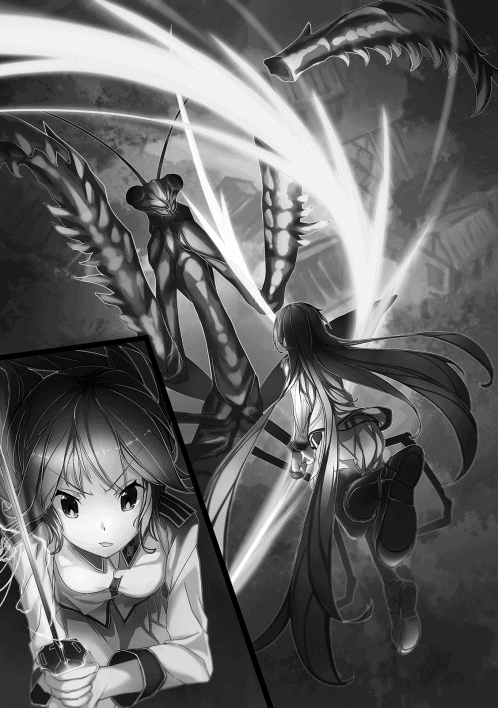
ザシュッという心地いい感覚とともに、どす黒い体液を吹き出しながら右前脚が切り落とされた。
これでもうカマキリ野郎は立ち上がることすらできないだろう。一花ちゃんもそう考えたようだ。
地に伏せたカマキリ野郎の頭部に駆け寄って一閃、左目を切り裂いた。
一花ちゃんの〝気〟と、カマキリの〝妖気〟がぶつかり合って発生する火花が今までよりはるかに大きい。斬撃の際、一花ちゃんは大量の〝気〟を流し込んだのだろう。
「もう少しだ」
もう少しでコイツを倒せる。それにもう陽動は必要ないだろう。
そう考えた俺は、一花ちゃんが切りつけた頭部に狙いを定めた。そして走り出そうとしたときだった。
「しぶとい」
カマキリ野郎が粘りを見せた。今度はその巨大な羽を広げたのだ。
そしてその羽が、不気味な振動音を奏ではじめた。羽ばたいて逃げるつもりなのか、あるいは飛んで俺たちを襲おうとしているのだろうか。
しかし、そのカマキリ野郎の思いがどうであったか判明するまでもなく、一花ちゃんが走り寄って天高く飛び上がった。
一花ちゃんがカマキリ野郎の羽根の付け根へ着地を決める寸前、彼女が手にしていた刀が、その腕ごとまさに消失したかのように見えなくなった。
同時に強烈な光が一花ちゃんを包み込む。
おそらく、恐るべき速度で二閃三閃と刀を振り抜いたのだろう。その予測を証明するがごとく、カマキリ野郎の羽根がばさりと地上に落ちた。
「スゴい......」
その直後、羽の付け根に着地を決めた一花ちゃんがカマキリ野郎から飛び降り、そして距離を取った。
俺は一花ちゃんの戦いに見惚れてしまっていた。そんな彼女が叫んだ。
「空お兄ちゃん、今よ！」
一花ちゃんが言うとおり、この隙を逃してはならない。たたみかけるなら今だ。彼女の期待に応えるのは今しかない。
ここはひとつ、とどめを譲ってくれようとしている一花ちゃんに応え、最高にカッコよく締めねばなるまい。
「一花ちゃんに見惚れてる場合じゃないよな。ここはひとつ、俺の実力を見てもらおうじゃねぇか！」
そう叫び、心を新たにした俺は全力でカマキリ野郎に駆け寄り、背を走るのではなく、一花ちゃんに倣ってその場で天高く飛び上がった。狙うのは頭だ。
両足に〝気〟を流し込み、勢いよく大地に反発させた俺の体は、地に伏したカマキリの頭上十メートルを軽く超えて舞い上がった。
「覚悟しやがれ」
上空から落下する勢いに任せ、小刀を突き下ろす力と俺の全体重を重ね合わせ、気合いとともにカマキリ野郎の脳天深く小刀を突き刺した。
ほとんど抵抗感もなく、つばの部分まで深々と突き刺さった小刀に、最高に濃縮した俺の〝気〟を、想いを込めて全力で流し込む。
「くたばれぇぇぇえ！」
次の瞬間、カマキリ野郎の頭部が膨張したかと思うと、眩いばかりの閃光を伴い、その頭部は爆散したのだった。
巨大カマキリの頭は俺の〝気〟で吹き飛んだ。当然その命は尽きたわけで、気がついてみれば俺の体はカマキリ野郎の血肉でベトベトだった。
それはもう真っ黒で、タールの沼に飛び込んだようなありさまで、華麗に戦って汚れひとつない一花ちゃんとはえらい違いだ。
「空お兄ちゃん、ヒドイ恰好だよ」
そう言って微笑んだ一花ちゃんの笑顔は、戦っているときとは別人のようだった。その笑顔についつい俺も頬が緩んだ。
そうだ返さなきゃ、と思って小刀を見たら俺と同じでヒドイありさまだった。
「ははは、もろに被っちまったからな。ちょっとスッキリしてくるよ」
そう言って俺は堀へと走った。ぬるぬるで気持ち悪いし、何よりツンと鼻を刺すような刺激臭が不快極まりない。
宿屋街から橋を渡ったところに軍人さんらしき集団が見えたが、気にすることなく俺は堀に飛び込んだ。
戦いのさなかに飛び込んだときは興奮していて分からなかったが、けっこう冷たい。そして少し臭う。
それでもカマキリ野郎の血肉よりはよっぽどマシで、戦いで熱くなった体が冷やされると同時に、刺激臭と汚れが取れて気持ち良いくらいだった。
俺はしばらく、水の中で髪の毛や服に付いた血肉を洗い流した。そして地上に上がろうとしたとき、さりげなく一花ちゃんが手を差し伸べてくれた。
その手を取って地上に上がる。
「ありがとう一花ちゃん。それとコレ」
一花ちゃんに小刀を返すと、彼女は軽く一振りして刀身についた水を払い、堂に入った所作で鞘におさめた。
一花ちゃんの後ろにはさっき見た軍人さんたち五十人くらいが整列しており、その中の偉そうな軍服を着た男が彼女の後背に跪く。
その男の顔に俺は見覚えがあった。藤崎さんだ。
「一花様、お勤めご苦労様でした。斑大カマキリ相手に見事な戦いぶり、この藤崎感服いたしました」
「藤崎、楽になさい。それから、私は空様のお手伝いをさせてもらったに過ぎません。この戦功はすべて空様にあります」
そう言われて藤崎さんはようやく立ち上がった。
「承知しております一花様」
藤崎さんは穏やかな顔で肯定すると、俺の目を穏やかに見据えた。
「空殿の戦いざま、この藤崎とくとこの目に焼き付けてございます。一花様に勝るとも劣らぬ戦いぶりは称賛に値しましょう。私には到底真似のできぬことにございます」
藤崎さんは俺を褒めちぎってくれたが、面と向かって仰々しくされると、むず痒く感じて仕方がない。
本来俺はホメられて伸びるタイプだと自覚しているが、それはもっとこうフランクにというか、なれなれしく「よくやったな、すげーじゃねぇか」みたいに言ってくれるとありがたいのだが。
しかし、この話し方が藤崎さんの地なのだろう。
よどみなく一花ちゃんや俺を賛辞する様は、まさに様になっているというか、不自然さがないというか、堂に入っていた。
しかも、媚びているように見えないし実に堂々としている。きっと、人間的にもの凄くいい人なのだろう。こういう人を怒らせてはいけない。
場所を宿屋街の守備隊詰所に移し、藤崎さんを交えて一花ちゃんとこれからのことを話し合った。
その結論だけを言えば、一花ちゃんと藤崎さんは宿屋街を拠点としてしばらく近辺調査することになった。
安全が確認されるまで豊田鉱山は仮閉山となり、基本的に大公国軍関係者以外立ち入り禁止になる。
俺はといえば、足も無いことだしと一花ちゃんたちの調査に同行を申し出た。
「空殿はもう十分すぎるほどの貢献を大公国に対してなされた。確かに空殿の戦闘力は一花様に匹敵していると私は考えるが、軍籍に無い一般人である空殿にこれ以上負担を強いるわけにはいかない。一花様もそう仰っておられる」
藤崎さんはそう言って同行を許してはくれなかった。
一花ちゃんは少し寂しそうにしていたが、俺の目を真剣なまなざしで見つめるように口を開いた。
「空様、一度首都へお戻りくださいませ。遥さんやお仲間の方々も心配しておられるでしょう。私のことは心配いりません。こう見えても大公国一の武将と言われていますから」
一花ちゃんはそう言って最後には笑みを見せてくれた。どうやら彼女は公の場では俺を様づけで呼び、プライベートではお兄ちゃんと呼ぶようだ。
そういうことなら俺の呼び方を改めてもらう必要もないか。とも思ったが、いつまでもお兄ちゃん呼ばわりされるのも少し違和感というか恥ずかしさを感じた。
だってもう一花ちゃんのほうが年上なんだし。見かけ上は俺のほうが歳食ってるように見えるけど。
さておき、俺も同行を無理強いするつもりはなかったので、一花ちゃんがそこまで言うならと、遥たちのもとへと戻ることにした。
俺一人徒歩で帰すわけにはいかないと、一花ちゃんが部下の軍人さんと馬を用意してくれたのは嬉しかった。
当然俺はまだ一人で馬に乗れないので、馬上で軍人さんに抱きついて帰路をともにしたのだが、軍人さんはもちろん野郎だったわけで、絶対乗馬できるようになってやると決意を新たにしたことは言うまでもない。
◇◇◇◇
夕方になって鴻江食堂へ戻ってきたわけだが、そこには遥をはじめ、鈴音ちゃんと阿古川哲也が揃っていた。
で、あまりにも早く、そして五体満足で何事もなかったかのように帰ってきた俺に、ポカンとした顔を並べた三人だったが、遥がいち早くその表情を崩し、涙をためて抱きついてきた。なぜだか鈴音ちゃんや阿古川哲也までウルウルしている。
「よかった......心配したんだからね。本当に、ほんとに心配したんだから！」
そう叫んだとたん、遥は俺の胸をポカポカと叩き、声を上げて泣き出した。
遥が落ち着くのを待って話を聞いてみると、三人は一旦発掘師協会に寄って事態を報告し、俺がここに来る少し前に鴻江食堂に立ち寄ったということだった。
俺は豊田で一泊し、早朝に出発したのだが、遥たちは野宿してほぼ最短距離を護衛をしながら集団で移動してきたらしい。
そして三人で豊田に戻ろうかと話し合っていたところに、俺が戻ったということだ。
「それで空、あの妖魔はどうなったの？」
「あの妖魔っていうとカテゴリー五の斑大カマキリですか？ 遥先輩」
「ええそうよ、鈴音ちゃん。で、空」
三人とも期待感いっぱいのキラキラした瞳で早く話せと訴えている。
正直、自分のことを話すのはあまり得意じゃないので、脚色は入れずに事実のみをかいつまんで説明した。
もちろん遥に借りたツルハシが壊れてピンチになって、一花ちゃんが駆けつけてくれて救われたことも正直に話した。
「空もスゲーけど、やっぱ一花様だよな」
「そうよね、憧れるわー一花様。でも、空さんだってあの状況で一人だけ残ってしかも倒しちゃうなんて。逃げ出したって誰も非難しないのに」
「そうね、確かに誰も非難なんかしない。でも空は残った。わたしは......」
思いつめたように口をつぐんでしまった遥が何を言おうとしたのか、俺には分からないし無理に聞こうとも思わないが、彼女のこんな顔は二度と見たくないと思った。
その原因はたぶん、いや間違いなく俺にある。これからはもっとよく遥のことを見ておこう。そう俺は思ったのだった。
結局この日はこの後少し話をしてお開きになり、明日、豊田の稼ぎを換金して分け合うことになった。
遥たちは避難のしんがりを買って出たそうで、自分たちの荷物を宿に取りに行く時間があったといことだった。
で、換金の結果はというと、車の部品が五十万弱、腕時計十四個で二百二十万強、合わせて二百七十万ほどになった。ひとりあたり約六十七万円である。
二十一世紀のレートに換算して約六百七十万円。
これをたったの四日で稼ぎ出したのだ。
腕時計十四個の換金額が、苦労して掘って必死になって分解分別した車の部品のほぼ四倍という幸運が重なったのが大きいが、遥が言っていたように一山当てることさえできれば、なるほど発掘師とは美味しい商売である。
これがあるからトレジャーハンティングはヤメられないのだ。
しかも、今回俺たち発掘師が掘り出した車の部品や腕時計は、今の決して暮らしやすいとは言えない社会を、少しずつではあるが改善していく助けにもなっている。
前にも少し話したが、ベアリングなどの機械部品は、生活になくてはならない道具の部品として数多く活用されているし、正確な時間を知ることができる時計の有用性は、容易に推し量れるだろう。
社会の発展に役に立ち、しかも俺たちの懐まで温めてくれて、さらに、トレジャーハントのだいご味を存分に堪能できる発掘師という仕事は、俺にとってこの上なくやりがいある職業だと、このときほど実感したことはない。
なんてことを考えていたのはいい思い出になってしまった。
豊田の妖魔襲撃事件から四か月、季節は夏真っ盛りの今日このごろ。
一花ちゃんたちの豊田周辺調査は半月ほど行われたが、異常は発見されず、豊田鉱山の立ち入り禁止はその後解除された。
そしてこの四か月弱の間、俺たち四人は都合七回、数か所の鉱山に発掘に出かけたわけだが、この七回合計で稼ぎはひとりあたり十万円にも届かなかった。
雨の降りしきる梅雨の時期、びしょ濡れの泥だらけになりながら掘り出したお宝が、今の時代では何の役にも立たないテレビだったりとか、壊れて使えないパソコンなどの電子機器の山だったり、そのさらに地下に埋まっている金属反応を心のよりどころにして掘り下げてみたら、埋まっていたのは余るほど発掘されているただの鉄くずで、全部売っても千円ちょっと、ひとりあたり二百五十円だったときには涙が出てきた。
せめて国の発展に有用なものが発掘できれば救いがあったが、そんなものは何一つ発掘できなかった。
こんなこともあった。
凄い金属反応を見つけたと思ったらそれはパチンコ屋で、出てきたのは銀玉の山と欲に駆られてここで人生の終焉を迎えたおびただしい数の遺体。
駐車場の車が残っていたらとも考えたがいくら探しても見つからなかったし、換金用の特殊景品には確か純金が使われているとおじさんが言っていたのを思い出し、必死コイて探したが見つからなかったし、大量のお金も出てきたが今の時代ではただの紙クズとか金属くずだし、最終的にはせめてものお宝ということで、パチンコ台から真鍮製の釘を必死こいて、それはもう何万本も抜いたのはいい思い出だ。
そんな思い出したくもない出来事を、なぜだか俺は屋根のない豪華な白い馬車の上で、白いモーニングにスカーフタイという慣れない貴族貴族した姿で、芝居がかった盛大な作り笑いを浮かべ、満面の笑みを浮かべる一花ちゃんの横で沿道の観衆に手を振りながら思い出していた。
「なぁ一花ちゃん。モノスゴク居心地が悪いんだけど......」
俺は沿道で旗を振ってくれている観衆に悟られないように視線は観衆に向けたまま、一花ちゃんにだけ聞こえるように小声で訴えた。
チヤホヤされるのは大好きだが、これはちょっとやりすぎだと思ってしまうのは俺が小市民たるゆえんなのだろうか。
「大丈夫ですよ。安心してください空お兄ちゃん」
満面の笑みを崩すことなく、観衆に手を振りながら一花ちゃんが小声でそう返してきた。
何が大丈夫で何に安心すればいいのかサッパリ分からない。
「そりゃぁ一花ちゃんは慣れてるんだろうけどさ、俺にはこの状況耐えられないよ」
「大丈夫です。いいですか？ 空お兄ちゃん。これはとても大事なことなのです」
何度も言うようだが、何が大丈夫で何が大事なことなのか俺には分からない。会話が全く成り立っていない。というか、一花ちゃんは何かを隠し、わざとはぐらかそうとしているのが丸分かりだ。
なんでこんなことをやらされているかといえば、カテゴリー四とカテゴリー五の妖魔をほとんど一人で倒し、何千人かの命を救ったからだということは俺にだってなんとなく分かる。
遥や鈴音ちゃん、それに阿古川哲也と、もう一人中村さんというクランのリーダーも妖魔討伐や避難時の功績が評価されて、俺の後ろの同じような馬車に集団で乗車していることからも明らかだ。
しかし、この裏には隠されたいくつかの企みが潜んでいる。確実に潜んでいる。これはとある信頼できる筋からもたらされた情報だった。
さておき、一花ちゃんから聞いた話では、妖魔の異常出現は梅雨明けとほぼ時を同じくして終息し、八月になってようやく戦功をたたえる叙勲式典が開催されることになったらしい。
俺たち四人が叙勲されることになった理由は、先にも言ったとおり凶悪な妖魔を倒したり、避難する人々を護衛したりという功績によるところが大きいが、一花ちゃんに聞いた話では、研修時に新幹線を発掘し、大量のアルミニウムをもたらしたことが国の発展に大きく寄与したことも後押しになったらしい。
そういう意味でも、繰り返すようだが発掘師という仕事は、誇っていいやりがいのある仕事なのだとこのとき改めて思った。
この式典は本来春に開かれるものらしいが、妖魔の異常出現という非常事態が起こったことで延び延びになっていたそうだ。
本来この戦功を称える式典は、戦闘に参加して戦功をあげた軍人さんや、志願して戦闘に参加し、同じく戦功を自らあげた貴族やその私兵のために執り行われるのが慣例というか常識らしいが、たまに俺たちのように襲撃してきた妖魔を撃退もしくは殲滅し、人命を救った発掘師も叙勲されるらしい。
で、俺たちは沿道の観衆に手を振りながらどこに向かっているかといえば、それは一花ちゃんの実家がある大公宮であり、そこで叙勲式が執り行われるそうである。
通例では、今回のようなパレードが行われることはなく、粛々と式だけが執り行われるそうだが、今年はカテゴリー五の妖魔を倒した者が現れたため──つまり俺と一花ちゃんのことだが──、大公国中に俺が一花ちゃんの婚約予定者であることを知らしめることと併せて、盛大に執り行われることになったらしい。
「一花ちゃん。何か隠し事してない？」
小声ではあるが、唐突に問いかけた俺の声に一花ちゃんがピクリと反応した。少し意地悪で大人げないような気もするが、仕返しに少しくらい彼女をイジってもバチは当たらないだろう。
実はこのパレード、すべて一花ちゃんの発案らしいのだが、一週間前に高科邸に呼び出されたときに、希美花さんからコッソリ耳打ちされたことなので、俺がことのなりゆきを知っているということは彼女には内緒だ。
「ソンナコトアリマセンヨ」
一花ちゃんは明らかに動揺している。分かり辛いがセリフが棒読みだ。そんな一花ちゃんが何気に可愛い。
「ホントかなぁ」
さらにもう少しだけ内情を話すと、じつはこの一件、遥も絡んでいるらしい。
これも希美花さんがコッソリ教えてくれたことであるが、なんでも俺に余計な虫がつかないようにと、一花ちゃんと遥が何やらゴニョゴニョと秘密の作戦会議をしていたそうである。
そして、一花ちゃんにはもう一つ狙いがあるらしく、それは国内外問わず多数の王侯貴族や有力軍属家から寄せられている、彼女への縁談を有耶無耶にするための既成事実を作ろうとしているということだった。
希美花さんの地獄耳、恐るべしである。彼女に隠し事はしないようにしようと、このとき俺は心に誓っていた。
「本当です」
さらにさらに、一花ちゃんは俺が多くの嫁さんを娶ることを当然の義務のように肯定していたが、実はコレ、建前だった可能性が高い。
希美花さんによると、俺の嫁候補に名乗りを上げるのなら、それ相応の覚悟、つまり正妻が大公位継承権第一位である一花ちゃんであることを知ったうえで行えと、暗に脅しをかけているということだ。
貴族の有力家にはあまり通用しないが、一般人や発掘師、軍人さんなどには効果てき面だろうということらしい。
だから、さも当然のように一花ちゃんが俺の隣にまるで新妻のように座っていることに説明がついたような気がしている。
叙勲式後のパーティーで、一花ちゃんと遥が俺の同伴者役になっていることも、このためなのだろう。
「ホントにホント？」
「本当に本当に本当です」
一花ちゃんの満面の笑みは微動だにしないが、執拗にイジリ過ぎてよからぬ事態に発展し、墓穴を掘るのも面白くない。ここらへんでやめておこう。
ちなみに、俺が今身につけている衣装は、一花ちゃんが必要だと強く押し付けるようにプレゼントしてくれたものだ。
一花ちゃんは本来軍籍のトップであり、式典用の軍服を着用しているはずだったのだが、今日に限って純白のドレス姿だ。
これにヴェールかティアラでも被ってブーケでも持たせたら、結婚式の新郎新婦と何ら変わりないじゃないか。
そんなことを考えているうちに大公宮が見えてきた。観衆は大公宮正門の近くまでびっしり並んで歓声を上げてくれている。
「スゴイな」
「皆が空お兄ちゃんたちを祝福してくれているのですよ」
そう言った一花ちゃんは本当に嬉しそうだった。
そして歓声に見送られるように、俺たちの馬車を先頭に、叙勲者たちは大公宮へとその列を進めたのだった。
大公宮の広い敷地の横手にある格式の高そうな大きな木造の建物。パッと見、神社仏閣のようにも見えるが、中に入ればここが迎賓館だということがよく分かる。
和洋折衷ながら格式が高そうな調度品の数々、きらびやかなシャンデリアや床一面に敷き詰められたフカフカの絨毯などなど。
俺たちが案内されたのはその中の一室、大広間だった。収容人数三百名ほどのかなり大きい広間の奥には、一段上がったところの中央に玉座のような豪華な椅子。
さらにその奥に金屏風。ホール内には六人掛けの丸テーブルと椅子。それがパッと見三十セットは配置されており、各テーブルには三角柱を横倒しにした木製の名札が、円形状に置いてあった。
何やら披露宴のホールのように見えなくもないが、どうやらすでに席は決まっているようだ。
もしかしたらこれも一花ちゃんの演出なのか？
なんてことを考えもしたが、その考えも数秒ののちには中断を余儀なくされた。
以前にも感じたことがあるこの感覚、すなわち強烈なデジャヴが俺を襲う。その正体は、俺へと向けられた射殺すような視線の集中砲火。
俺が一体何をした？
なんて自問する必要は全くなかった。
そう、すべての元凶は俺の左腕に絡みつき、幸せそうに満面の笑みを振りまいている一花ちゃんだ。
「あのデスね一花様、モノスゴク居心地が悪いのでアリマスが......どうにかならないのでゴザイマショウか」
「大丈夫ですよ、空様。むしろ大成功です」
この状況を作った元凶たる高科一花様は嬉しそうにそう言いやがると、突き刺さる視線など気付いていないかのように振る舞っていた。
いや、彼女ほどの女傑がこの視線に気づかないはずがない。気づいていてなお無視しているのだ。
いや、ただ無視しているだけじゃない。
このお方、満足していやがります。
「うん、喜ばしいことにここにいる者たちも私たちを祝福してくださっているようです。ほら、皆さん私たちに注目していらっしゃいますよ」
ことさら満足げにそう言い切った一花ちゃんは、きっとこう思っていることだろう。
私に言い寄ってきても無駄ですと。フィアンセはここにいるのだからと。
希美花さんから聞いていたことだが、この時代ではすでに適齢期真っ盛りの一花ちゃんには、数年前から縁談が結構な数来ているらしい。
しかし彼女は、そのどれにも首を縦に振っておらず、お見合いすらすべて袖にしているそうだ。
その主たる理由は、俺の生存を信じて疑わなかったからだということらしい。
そんな背景があったところに加え、国民的にも絶大な人気があり、一部貴族や軍人たちから崇拝されている一花ちゃんの婚約予定者が俺だという公式発表。
さらに、それに加えて純然たる公の場で、公然と示された彼女のこの態度だ。
今俺に向けられている、ある意味、ではなく本当の意味で殺気立った射殺すような視線の束は、そうなって当然の幾重もの伏線の上に成り立っていたのだ。
一花ちゃんの俺に対する好意を受けとめると希美花さんに、そして自分にも誓った以上、俺はこの逆境を甘んじて受け入れる必要があるのだろうが、まさか、かつて自分がよくモテ男に抱いていたリア充爆発しろという負の感情を、逆に抱かれる立場に立つとは露ほども思っていなかった。
そしてこうなってしまった以上、この視線を軽く受け流すくらい、いや、心地よく感じられるくらいの境地に......いやいやそれは無理、俺には無理です一花様。胃に穴が開きそうです一花様。
なんて本音を心の中で吐露して卑屈になっているうちに、メイド服を着た案内役の女の人にホール最前列中央のテーブルまで連れてこられた。
こういった席に慣れていないのだろうか、鈴音ちゃんと阿古川哲也は戸惑いを見せていた。もちろん俺も居心地は良くない。
「さぁ、ここが私たちの席です。皆さま、遠慮せずに座ってください」
席順は俺が奥側、つまり壇上を正面に見る位置に座り、左に一花ちゃん、その左に希美花さん。俺の右に遥、その右に鈴音ちゃん、その右に阿古川哲也が腰を下ろした。
遥は以前高科邸で見た赤いドレスで着飾っており、鈴音ちゃんは水色の下地にピンクの花が描かれた着物姿で、髪を上げて後ろでまとめていた。阿古川哲也は黒のフォーマルスーツを着て光沢のある薄い灰色のネクタイ姿だ。
こういった会場では普通、式典がはじまるまでガヤガヤと騒がしいものだが、規律の厳しい軍人さんが多いせいか、はたまた国のトップが主催する式典のせいか、しんと静まり返っていた。
相変わらず俺への視線には鋭いものが多数混じっているが。幸いなことは、俺の位置関係上視線を送っている主たちを直接見ないで済んでいることか。
「お集まりの皆様ご起立願います」
壇上の脇に立った老紳士風の男がよく通る声でそう告げると、黒いモーニング姿で髪を上げた陽一さんが、逆側の壇上脇から男女の護衛二人を従えて中央へ歩み出た。
そして玉座みたいな椅子の前で会場を見渡すと、満足そうに威厳ある笑みを湛えた。
「今日という良き日に集いし誇り高き精鋭たちよ、貴殿らは我が大公国の誇りである。貴殿らは己が身を顧みること無く身命を賭し、果敢に、そして諦めることなく妖魔に立ち向かい、大公国、その礎である民の命を守ったことは我が最大の喜びである。さらに、本日この席に参じてくれた者の中には、凶悪極まる最強の妖魔を討ち滅ぼして且つ、大公国の物質的発展に多大な益をもたらした発掘師達も含まれている。我は貴殿らのその崇高なる志と偉業とを称え、心ばかりではあるが褒賞と金す、ささやかな食事を贈るものとする。本来この場は初桜の折に──」
大公陽一さんのありがたく長〜いお言葉がこの後も三十分くらい続き、ようやく勲章と金一封の書状の授与が開始されたのだった。
◇◇◇◇
叙勲は、勲五等の授与からはじまった。
氏名を呼ばれた者が壇上に正面横の階段から上がり、勲章と報奨金の目録を順次受け取って横に列をなしている。
御堂鈴音と阿古川哲也も、勲五等叙勲者として壇上に上がっていた。御堂鈴音は伯爵家の令嬢ということもあって堂々とした立ち居振る舞いだったが、阿古川哲也は緊張のあまり、ガチガチに固まっていた。
その会場の片隅で、将官服姿の二人の男が大広間全体の様子に注意を払いつつ、互いに顔を合わせることなく小声で会話していた。
「さすがに今年は叙勲者が多いな。藤崎侯」
「あれだけの妖魔が出ましたからな。当然のことでしょう。三浦先生」
小声の主は騎士序列二位の侯爵級騎士藤崎健吾と、騎士序列三位の伯爵級騎士三浦喜一である。
藤崎は叙勲式会場警備の責任者であり、ひょうひょうとした感じの老将官である三浦は、その補佐役を務めているが、富士大公国騎士団のご意見番的存在であり、一花に刀術を教えた師匠でもあり、彼女も藤崎もそして陽一ですら頭が上がらない存在だ。
その三浦が感心したように顔のシワを深める。
「ほう、あれは御堂家の」
「御堂伯爵家令嬢、鈴音殿ですな。空殿、遥殿とともにパーティーを組んでおられます。空殿の話では将来有望な発掘師だそうですよ」
「なかなか良い目をしておられるな。空殿は」
「確かに。ですが彼女も空殿もまだまだ危なっかしい」
「ふむ、二人ともあの若さでは仕方なかろう。それにしても......」
壇上の鈴音から、空の隣で幸せそうにしている一花に視線を移した三浦の表情は、孫でも見守っているかのようだった。
勲五等叙勲者の記念撮影が終わり、勲四等の叙勲が行われた。そして勲三等の叙勲者の中に遥と中村の顔があった。
三浦はその遥に視線を向ける。
「ほう、アレが噂に聞く遥嬢か」
「はい、彼女は準騎士級の〝気〟力持ちでもあります。剣術も刀術も修めておりませぬが、その武力は男爵級騎士に匹敵するかと。豊田の事件ではカテゴリー三の大山犬相手にたった二人で勝利したとか。しかも手傷はほとんど彼女が負わせたと聞き及んでおります。もちろん発掘師用のツルハシで戦ってです。騎士用の刀剣ならばカテゴリー三程度一撃で屠ることでしょう」
「惜しいのう。あの若さだ、刀剣術の基本でも叩き込めばいい騎士になるだろうに」
式は勲三等の叙勲と記念撮影が終わり、勲二等の叙勲へと移ろうとしている、藤崎と三浦はひそひそ話を続けていた。
叙勲を終えて遥が席に戻る様子を視線だけで追っていた三浦が、何かを思い出したかのように問いかける。
「ところで藤崎候。例の刀剣法緩和の件、進展のほうはどうなっとる？」
「まだ根回しの段階らしいですが、保守派の一部が難色を示しているそうです」
「反対しとるのが一部なら緩和は時間の問題と考えてよいのかな？」
「いえ、その一部が問題でして。最近台頭してきた若手グループなのですが、貴族家の嫡男を中心に急速に勢力を拡大しております」
「保守派の若手というと、御堂家の小倅か」
「はい。ろくな実績はありませんが、弁だけはやたらと立ちまして──」
二人の話題に出た刀剣法の緩和とは、貴族もしくは軍属にしか許されていない刀剣の所有権を、一級発掘師にまで広げようという、刀剣法という法律の改定案である。
刀剣法はもともと和国でできた法律ではあるが、富士大公国もこの法律をそのまま採用していた。
刀剣法を要約すれば、刀剣の所有が許された者は、それをもって妖魔に対峙し、民間人を守らねばならない。そしてその所有権は、貴族または軍属に限定される。ということになっている。
つまり言い換えれば、刀剣を所有する貴族または軍属は、民間人を差し置いて妖魔から逃げ出すことができないということだ。
ゆえに刀剣法は、貴族が貴族たりえる、軍属が軍属たりえる象徴的な法律であると言われている。
したがって特に一部の貴族軍属、特に選民意識の強い貴族軍属に至っては、彼ら以外の者が刀剣を所有することを、良しとしないのだ。
その旗を振っている旗頭が三浦の言うところの『御堂家の小倅』、つまり鈴音の兄、御堂虎次郎なのである。
「だが、所詮奴は一般人だろうて」
「はい。確かに御堂虎次郎は一般人です。しかしその父は伯爵位にあります。虎次郎を旗頭とする若手グループが最終的に目論むは貴族世襲制の復活にあります」
「またなんと愚かな......」
今でも和国は絶対君主制であり、和国貴族は世襲制である。しかし陽一が富士大公国を和国朝廷から下賜された折り、彼はまず貴族の世襲制を廃止していた。
そして富士大公国を、絶対君主制から立憲君主制へと移行させてきた。
そんな中、時代に逆行するような思想を持つ虎次郎に、三浦は深いため息をついた。
勲二等の叙勲と記念撮影が終わり、いよいよ勲一等の叙勲者、空が壇上に上がった。
その空の胸に、まるで夫のネクタイでもなおす新妻のような空気をまとって一花が勲章を取りつけた。
そしてつけ終わると、胸に勲一等章を輝かせた空に、彼女はまるで想い人を見つめるかのようなうっとりとした笑顔を贈っていた。
一花は勲二等から叙勲者に勲章を取りつける役に回っていたが、今までは微笑を湛えるに留まっていた。その一花が、空が壇上に上がってから表情を一変させたものだから、彼に投射される若い男たちの視線は、より一層険しいものになっている。
三浦は虎次郎のことを頭の中から追い払い、居心地悪そうに困惑している壇上の空へと視線を移した。その三浦が相好を崩す。
「ホッホッホ、空殿も人気者であるな」
そんな意地の悪い笑顔を見せた三浦に、藤崎は苦笑を浮かべた。
「まあ、あの一花様を見れば皆の気持ちも分からんではないが......」
「フムフム、確かにあの姫殿下がこれほどまでに乙女らしくなさるとは。いやはや、いいものを見せてもろうた」
勲一等の受勲者は空一人であり、勲一等受勲自体、富士大公国建国以来二例目の歴史的出来事であった。
しかし、その歴史的な受勲者に対し、会場に集まった特に若い貴族家の者や軍属からは、称賛されるどころか、彼らの妄想の中でではあるが、数知れず罵倒され、爆破され、切り刻まれるという凄惨な光景が繰り返されていた。
会場にはその歴史的勲一等章受勲者に対し、恋い焦がれるような熱い視線を投げかける貴族の子女やら軍属の乙女も、少数ながら存在したのではあるが、圧倒的多数の若い男どもによって、それはなかったかのようにかき消されてしまうのだった。
そんな異様な雰囲気の中にあっても、眼福とばかりに相好を崩している三浦に、藤崎は真剣な面持ちになって話題を変える。
「先生、別件ですがあの話はご検討いただけましたでしょうか」
「......ひとつ条件がある」
「その条件を飲めば引き受けてくださると」
「二言はない」
「それでその条件とは？」
さらに小声になって藤崎にとある条件を出した三浦の表情は、何かイタズラを企んでいる少年のようでもあった。
◇◇◇◇
本来は晴れ舞台であるはずの叙勲式で、俺は針のムシロに立たされたような思いを味わうはめになった。
しかしその式も終わり、終了後のパーティーも早々にバックレて、俺は高科邸へと避難していた。
その高科邸で陽一さんに「主役が抜け出すとは何事か」と、お小言を少しだけもらったが、一花ちゃんの振る舞いのせいで居心地が悪すぎた。どうにかしてくれと逆にクレームをつけたら、陽一さんも俺への視線のことは気がついていたようで、それ以上何も言わずにパーティーへと戻っていった。
ちなみに陽一さんとのこの会話、一花ちゃんは俺の隣で聞いていたわけだが、まるでイタズラが成功した少女のごとく、小悪魔のような笑みを絶やさなかった。
そういえば小さいころの一花ちゃんも、よくイタズラをしてこんな顔で笑っていたなと懐かしくもなったりしていたのだが。
「なあ一花ちゃん」
「はい。なんでしょうか空お兄ちゃん」
「こういう悪巧みはカンベンしてください。お兄ちゃん胃に穴が開きそうだよ」
「えへへ、じゃあ空お兄ちゃんも私のお願い聞いてくれますか？」
「なんだい」
「これからはもっと私に会いにこの家へ来るように」
「はいはい。仰せのままに」
発掘に夢中になりすぎて、確かに高科家には遊びに来てなかったなと、少しだけ俺は反省することにした。一花ちゃんはたぶん寂しかったのだのだろうなと。
叙勲式が終わって、一か月が過ぎた。
その間、俺をとりまく環境はあわただしく変化していった。というか激変していったと言っても過言ではない。
なぜかといえば、勲一等に叙された俺は、そのまま伯爵の地位を与えられたのと同時に、報奨金一千万円と家一軒を下賜されることになったからだ。
これらはすべて勲一等の褒章であり、あまりの厚遇に恐縮した俺は、身内びいきがすぎやしないか？ と報奨金の返金を陽一さんに申し出たところ、これでも勲一等の報奨金としては少なすぎるらしく、どちらかといえば冷遇に近といって取り入ってもらえなかったし、逆に申し訳ないと頭を下げられてしまった。
カテゴリー五の妖魔襲撃を退けるということは、この時代の人々にとって、そういうことであると力説もされた。
この程度の恩賞で済ませて冷遇に近い対応をしておくことで、ぽっと出の小僧、つまり俺に対する旧貴族家の妬みややっかみを、ある程度緩和できるとも言っていた。
逆に言えば、富士大公国にいきなり現れて注目を集めた、分不相応な待遇を受けている俺のことを、一部の旧貴族家は快く思っていないということだった。それを大公国幹部の間で勘案し、褒章が決まったらしい。
それでも、伯爵としての貴族特典は付随するわけで、例えば毎年一定額もらえる年金だったり、嫁さんを二人以上もらってもよかったり、一夫多妻でも合法だったり、何人と結婚してもよかったり、ついつい愛人を孕ませてしまってもそのまま嫁さんにできたり、認知して養うだけの甲斐性があれば庶子を儲けても社会的なキズにはならなかったり、貴族ならむしろ庶子はバンバン作れという社会的風潮だったり、毎晩とっかえひっかえの酒池肉林が可能だったりするのである。
もちろん、女性の貴族には一妻多夫が認められており、いわゆる逆ハーレム状態な女性貴族が当たり前のように存在している。
その理由は、〝気〟力が強い子孫の種族的多様性を得る意味において、貴族の一夫多妻や一妻多夫が国家繁栄に大きく寄与すると考えられているからだ。
さておき、俺としてはハーレム万歳で実に嬉し喜ばしい状況ではあるが、それだけの甲斐性と体力とカネがあるかどうかは別の話。
まぁ、たくさんの女を囲ってウハウハしたいならカネを稼がにゃならんし、それ相応の責任も付いてくるということだ。
さておき、確かに伯爵位を得た俺なのだが、今までどおり発掘師を続けても問題はないらしい。
というか、ぜひ続けてくれたまえとお願いされたくらいだった。
理由は、これからも発掘師として国の発展に寄与し続けてほしいという建前もあるが、家をもらえば当然その家に住むことになるわけで、しかも一応伯爵家ということで、普通の庭付き一戸建てレベルの家ではなかったわけだが、大公宮横手の富裕街に建てられたその家は、周囲を白塗り屋根付きの塀に囲まれた平屋の日本家屋で、敷地面積でいえば十万平米弱もあり、家の部屋数も二十を超える大豪邸だった。
さらに、住み込みの使用人が使う十部屋くらいの離れまで敷地内にある。
そんな豪邸となると、当然俺一人で維持できるわけもなく、必然的に使用人を雇うはめになり、莫大な維持費がかかることになる。
結局のところ、毎年もらえる年金は使用人の給金含めた家の維持費にそのすべてが消えてなくなるわけで、というか年金だけじゃ足りないわけで、発掘師なりなんなりを頑張って今まで以上にお金を稼ぐ必要があるらしいのだ。
とても嫁さんを五人も六人も七人も八人ももらってハーレムサイコウ、俺ってば余裕で毎晩毎夜の酒池肉林で楽しみ放題、みたいな夢のような生活など、今の懐事情ではまさに夢のまた夢なのである。
ということで、俺は鴻ノ江食堂からいろんな意味で夢が詰まりに詰まったマイホームに引っ越すわけだが......。
「わたしの荷物はもう積み終わったわ。空のほうはどう？」
俺の私物なんて荷馬車で運ぶ必要が無いほどに少なかった。
「もうとっくに終わってるよ。俺の荷物がそんなに多いわけないじゃん」
「それもそうね。じゃぁ出発しよう」
早く新居に行きたいのだろうか、今の遥は心ここにあらずといった感じだ。
「まぁ待て、遥。世話になった人たちに挨拶してくるから」
「分かったわ。わたしはここで待ってる」
「家族に挨拶しないでいいのか？」
「昨日のうちに済ませたから大丈夫よ」
嬉しいことに、当然とばかりに遥も我が家に引っ越すことになったわけだが、この言葉を聞いて、彼女が両親にどんな挨拶をしたのか少しだけ気になった。怖いから聞こうとは思わないが。
そんなことを考えながら鴻ノ江家やそこで働く人々に挨拶をしたわけだが。
「お姉ちゃんのこと、よろしくお願いしますね」
とは琴音ちゃんの言葉であり、
「ようやっとアイツも落ち着くことになったか。めでたいのう」
とはヒカル爺の言葉であり、
「空君、遥をよろしく頼む」
と、頼んできた幸作さんの顔は明らかに嬉し泣きだった。
そんな幸作さんが小声で耳打ちしてきた。
「空君が現れなければ遥は一生独身を貫きとおすと思っていたんだ。これでもう遥も行き遅れずに済んだ。ありがとう、ありがとう空君」
まだ遥を嫁にもらった覚えはないが、どうやら鴻ノ江家では、遥が俺の嫁になることは既定事項のようだ。
まぁ、俺もそうなることを望んでいるから嬉しいのだが。
「お早うございます。お母様」
「あら鈴音、今日は早いのね」
「明日から発掘に出かけるのです。今日中にその準備をしなければなりませんから」
「まあ、ようやくゴタゴタが終わったばかりだというのに、忙しないこと。たまにはのんびりとした休日を過ごすのもいいですよ」
「空さんや遥先輩について行くためには休んでいられないのです──」
想定外というか予想だにしなかったことは、鈴音ちゃん母娘が我が家で生活することになったということである。
というのも、そもそもの発端は受勲式の直後、鈴音ちゃんの父、御堂虎徹伯爵が脳出血により急逝してしまったことだ。その葬儀には俺と遥と阿古川哲也も参列したのだが、その時鈴音ちゃんは、御堂家の娘として母とともに葬儀にはきちんと出ていた。
しかしその葬儀が終わった後、詳しくは聞いていないが、どうやら彼女らは正妻である御堂虎次郎の母の陰謀により、御堂家から追放されてしまったらしい。
この件に関しては俺も思うところがあって、というか頭にきていたのだが、どうやら鈴音ちゃんもその母も清々しているらしく、逆にあの家から出られて良かったと話していた。
俺としては、使用人を何人か雇う必要があったこともあって、住む家を探していた鈴音ちゃんに打診してみたところ、二つ返事でＯＫをもらえたのである。
勘違いしないでほしいが、使用人として雇ったのは鈴音ちゃんの母、白井天音さんであり、鈴音ちゃんは母とともに使用人用の離れに住むことになった。
白井というのは天音さんの旧姓であり、御堂家を追放された際に戻したらしいが、そうなると、当然鈴音ちゃんも白井鈴音と名乗ることになったのは、しごく当然のなりゆきである。
という経緯があったわけだが、この天音さん、歳は五十歳ということらしいのだが、どう見ても二十歳くらいにしか見えない。
おまけに鈴音ちゃんによく似ているので、普通に姉妹と言われても違和感が全然ないのだ。というか姉妹にしか見えない。
「──そうですか。朝食はキチンと摂るのですよ」
「はい。お母様。あっ、お早うございます空さん」
「お早う。鈴音ちゃん」
「お早うございます。旦那様」
「お早うございます。天音さん。えっと、できれば旦那様は勘弁してほしいんですけど......」
「それはなりません。使用人としてのけじめは必要なのですよ」
少しも媚びることなく、凛とした立ち姿で言い切った天音さんに、俺は何も言うことができなかった。
俺はまだこの時代の親子像というか年齢と見た目のギャップというか、そういうのに慣れていないので、一度一花ちゃんに聞いてみたんだが、彼女曰く、個人差はあるが年齢から十二を引いて四で割った数値に十二を足せば違和感がなくなるそうだ。
ということは、五十歳の場合、俺の感覚で約二十一歳に見えるということになり、なるほど確かに天音さんが二十一歳と言われれば全く違和感がない。
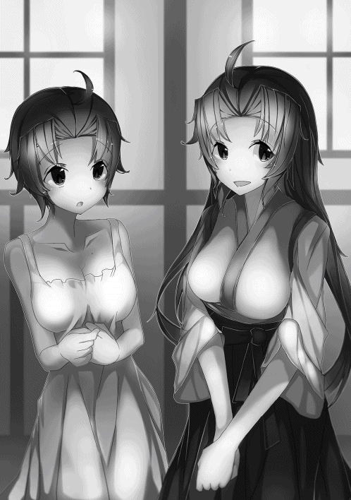
この計算で行くと、遥が十七であり、一花ちゃんが十八であり、鈴音ちゃんが十四歳ということになる。
そして阿古川哲也も十四歳くらいに見えるはずだが、実のところ、奴は俺と同い年にしか見えない。ヒカル爺の場合は逆に、見た目は六十くらいだがこの計算に当てはめると七十過ぎに見えるはずだ。
阿古川哲也の場合は実際同い年なのでややこしいが、彼は老け顔ということになるのだろう。ヒカル爺の場合はその逆だ。
一花ちゃんは〝気〟力も見た目の年齢と相関が見られると言い、高いほど若い外見を保ちやすい傾向にあるそうだ。阿古川哲也を見るに絶対とは言い切れないが。
しかし、一花ちゃんが実年齢のことは気にせずに、見た目の年齢として接すれば何の問題もないと強調していたことを考えると、実のところ彼女も、元いた時代の感覚で、自分の実年齢を気にしているのだろうという結論に、俺の考えは至ったのである。
要するに、女性に年齢のことは聞くなということだ。
話がそれすぎたので元に戻そう。今まで説明してきたことを箇条書きにすると。
・伯爵の地位をもらって身に余る豪邸を手に入れた。
・その豪邸に遥とともに引っ越してきた。
・豪邸と俺たちの生活を維持するために使用人を雇った。
・その使用人の一人が鈴音ちゃんの母、天音さんであり、紆余曲折あって鈴音ちゃんともども豪邸の離れに住むことになった。
・鈴音ちゃんの名字が白井に変わった。
・阿古川哲也が鈴音ちゃんにコクって盛大に自爆した。
ん？ 阿古川哲也と鈴音ちゃんのことはまだ話してなかった。
叙勲式の後、バタバタとことが進んで俺と遥は大忙しだった。
その間、阿古川哲也と鈴音ちゃんはヒマになるわけで、ああ、鈴音ちゃんは父親の葬儀とかその後の一悶着とか、引っ越しとかあったから一週間くらいは身動き取れなかったが、それでもその後はヒマになったわけで、結局二人は叙勲式で会った中村さんを遥に紹介されて、彼のクランに臨時で参加することになった。
そうなると、二人は二人きりになる時間が必然的に多くなるわけで、以前から鈴音ちゃんのことを密かに想っていたらしい阿古川哲也が、勇気を振り絞って告白したということだ。
結果見事に玉砕したわけだが、それで二人の関係がぎこちなくなったかといえばそれは否であり、何事もなかったかのように二人は中村さんのクランで発掘師活動を継続している。
そして今では、中村さん率いるクランの中で、驚くことに阿古川哲也は我が世の春を謳歌しているそうだ。
遥に聞いた話では、鈴音ちゃんにそれはもう完膚なきまでにフラれた阿古川哲也は、クランの中で一人寂しくしていることが多かったらしいのだが、その姿があろうことか女心をくすぐってしまったらしい。
さらに、豊田での妖魔襲撃の折、妖魔相手に奮闘していた阿古川哲也を覚えていた女発掘師が何名かいたらしく、彼のことを好意的にとらえていたことも下地になったのだろうと遥は言っていた。
ということで、遥曰く今現在阿古川哲也に言い寄ってきている若い女発掘師が三、四人いるらしい。
俺としても、阿古川哲也には早いとこ彼女を見つけてほしいとは思っていた。まさか鈴音ちゃんのことを想っていたとは気づかなかったが、彼女にフラれた彼が新しい恋を見つけたというか、春が来たというか、複数の女の子にモテているということが嬉しかった。
とまあこんな感じの一か月だったんだが、ようやく我が家のゴタゴタが落ち着いて、俺は今、屋敷の客間で遥とともに一花ちゃんと藤崎さんに向き合っている。
「空殿、いや、今は葵伯とお呼びしたほうがよいか」
俺が伯爵になって、今藤崎さんが言ったように苗字で呼ばれることが多くなった。
俺のフルネームは葵空というのだが、もともと俺の名前はオヤジが語呂合わせで閃いたのが発端でつけられたと母に聞いている。
そんな経緯もあって俺は苗字をほとんど名乗らない。
理由はアオイソラ、アオイソラとガキのころクラスメートに面白がられ、よくフルネームで連呼されながらバカにされていたからだ。
「空でお願いします」
俺はことさらに強調してそう言った。
伯爵という地位になった以上、公の場とかで葵伯と呼ばれるのは仕方がないが、プライベートでは勘弁願いたい。
「では空殿、今日は折り入ってご相談が──」
と、切り出した藤崎さん。
話を聞いてみれば、春から梅雨にかけて起こった妖魔の異常出現についていろいろ調べた結果、百数十年前に和国で同様の異常出現が起こっていたらしく、どうやら百五十年間隔程度の周期性があるらしいのだが、一度起こってしまうと、数年間は毎年決まった季節に異常出現が繰り返されるそうだ。
ということは来年の春にも妖魔の異常出現が起こる可能性が高く、その対策を今のうちから講じておきたいということだった。
で、俺に何を相談してきたかと単刀直入に言えば、宝玉の産地に心当たりはないか？ 知っていれば調査と採掘に同行してもらえないか？ ということだった。
できるだけたくさんの宝玉を入手し、軍事力の底上げを図りたいらしい。
宝玉の産地については、俺に聞けばわかる可能性が高いから、相談に乗ってもらえと陽一さんに言われてここに来たらしい。一花ちゃんはそのやり取りを聞いていて、ちゃっかりついて来たということだった。
というか、俺がこの屋敷に越してきて以来、一花ちゃんはヒマを見つけてはというよりは、無理やりにでもヒマを作って屋敷に来るようになった。
というより、仕事が終わっても高科邸に帰ることがほとんどなくなり、この屋敷に帰ってくると言ったほうが正確な表現になる。
つまり、今のところ一花ちゃんと俺は寝室を別にしているが、遥と同様この屋敷に同居している状態である。もちろん俺と遥の寝室も、今のところは別にしている。
だって一花ちゃんか遥のどちらか片方だけ寝室を同じにするなんて、小心者の俺にできるわけないじゃないか。
話がそれたので元に戻そう。
もちろん俺は、紫水晶やその他輝石とか宝石の産出地を、関東近辺だけでも何か所か知っている。
有名どころとは今の時代で言えないのだが、山梨の甲府だとかが有名だった。ほかにも岐阜や栃木にも鉱山がある。が、品質で言えば......。
「もちろん知っていますよ、でも、今の時代ではどうやって正確な位置を特定すればいいか分かりません」
「我々大公国軍は神話時代のかなり正確な地図を所有していまして、特定の部隊に方位磁石と星読みを合わせて探させれば、場所の特定は可能かと考えております」
ということだったので、俺はこの依頼を快く承諾した。というか二つ返事でＯＫしていた。まぁ正確な位置を特定できなくても、俺がこの依頼を引き受けていたことは間違いない。
そして宝玉の採掘と聞いて、遥の目は爛々と輝いているし、一花ちゃんに至っては期待感いっぱいのワクワク顔だった。
もちろん二人とも同行することしか考えていないようだ。
ということで。
「遥を同行させてもいいですか？」
一花ちゃんは何を差し置いてでもついて来るだろうということで、遥のことについて聞いてみたのだ。が、藤崎さんは困惑顔になった。
「ふむ、困りましたな......」
藤崎さんを見据えた遥の目がすわり、険悪な表情へと一変した。
「ことは軍事機密......」
遥の視線に凍てつくような冷気が混ざりはじめ、周囲の気温が下がっていくような感覚に襲われた。
「にあたりますから誠に遺憾ではありますが......」
遥の藤崎さんを見る目つきが射殺すような殺気を帯び出した。
「くれぐれも他言はお控えくださいますよう約束いただけるのでしたら」
遥の表情に笑みが戻った。
侯爵級騎士を目力と表情だけで制しやがった。
遥の恐るべき一面を目の当たりにした俺は、彼女だけは絶対怒らせないようにしようとこのとき誓ったのだった。
さしあたって次の行動目標が決まったわけだが、じゃあ出発しますか、とはさすがに言えなかった。
俺が行こうと思っている場所は、そんなに遠いことはないが、日帰りできるようなところではないし、馬で行けるようなところでもないし、道があるとは考えにくいし、おそらくは連日の山歩きになるだろう。そうとなれば入念な準備が必要になる。
ということで、俺は藤崎さんにだいたいの位置を教え、そこに行くまでに必要な物資を人数分揃えてもらえるように依頼したのだが、それ以外にも持っておいたほうがいい物があるということで、俺と遥に軍本部へと出頭するようお願いされたのだった。
藤崎さんが俺の屋敷に相談事を持ってきた翌日。俺と遥は要請どおり軍本部へと出向いた。今日の服装は、さすがに発掘師の恰好はマズいと思ったので、遥と相談して濃紺のスーツに慣れないネクタイ姿だ。
遥はシックな紺のフォーマルドレスに白いレースのショールを羽織り、俺の左後ろをおしとやかに歩いている。いつもの遥からは想像しにくい立ち居振る舞いだ。
で、何のために軍の本部くんだりまで呼ばれたかというと、とあるモノを受け取ることと、宝玉採掘日程などの打ち合わせ、それと調査隊メンバーの顔合わせをすることになっている。
そういえば、ここに来るのは十か月ぶりか？ なんてことを考えながら、遥と二人で軍本部の正門に来て見れば......。
開け放たれている大きな鉄柵門の右側に、直立不動で立つ門衛の顔を俺はよく覚えていた。いや、忘れるはずがないその顔は、あのとき俺を散々いたぶってくれやがった猫田だった。
一花ちゃんから聞くのを忘れていたが、どうやら死んではいなかったようだ。その猫田のほうに俺は真っすぐ歩いていく。すると、猫田も俺の顔を覚えていたようで、こっちを見るなり直立不動のまま震えだしやがった。
あのときはあれほど偉そうにしてたのに、今はこのありさまである。
文句の一つでも言ってやろうかとも思ったのだが、今の猫田のあまりにも情けない様に、俺の再燃してきた怒りはあっけなく霧散してしまっていた。
俺は猫田に一べつをくれると、奴の後方に見える守衛所、要するに受付をするところに遥とともに歩み寄った。
守衛所の受付に座っている中年男の軍人さんは、怪訝な顔で俺を見ている。
どうやらこの人は俺の顔を知らないようだ。と、怪訝な顔をされながらも俺は少しだけ安心していた。あの射殺すような嫉妬の視線を、また浴びせられたらたまったもんじゃない。
「あのぅ、藤崎侯にここに来いと呼ばれたんですけど」
「少し待て」
受付の人は、不機嫌そうにそう言って手元にあった紙束をめくりはじめた。
そしてその中の一枚を抜き出し、読み出したとたん、緊張の色を用紙を読むその顔に覗かせた。
「あ、葵空伯爵様であらせられますか？」
「うん、そうだよ」
「案内の者を連れてまいりますッ。し、少々お待ちください」
受付の様子を見ていた遥が、その慌てようにクスリと笑いを零す。守衛所の奥に慌てて引っ込んだ受付の人が、すぐに若い女の軍人さんを連れて戻ってきた。
「この者がご案内差し上げます」
「ありがとうございます」
一応お礼を言ってニコッと笑顔を見せたら、受付の人はほっと安心したように緊張の色を解いてくれた。
案内の女の人は、なぜだか驚いたように顔を赤くして嬉しそうにしていた。
「では、こちらになります」
一度軽く腰を折って進むべき方向を右手で差し示し、歩き出した案内人の後を遥とともについていく。
前回猫田に連れてこられたときは夜だったので、それほど人を見かけなかったが、今は昼前だけあって結構な数の軍人さんが歩いていた。
そんな軍人さんとすれ違うたびに目が合うが、軽く会釈をされる程度で、叙勲式のときみたいな厳しい視線を浴びることはなかった。
どうしてそうなったのかは分からないが、俺としては嬉しい限りだ。女の軍人さんは決まったように少し驚いて、笑顔か緊張した顔で会釈してくれる。
しかも、何人かは案内役の人に羨ましそうな視線を送っている始末だ。
そんな状況に何度か出くわしたら、さすがの俺でも状況がつかめてきたような気がしてきた。そう、ついに俺にもモテ期が到来したのである。
おそらくあのカマキリ野郎を倒して伯爵の地位をもらったことが要因だろうが、理由はどうあれ嬉しい限りだ。なんてことを考えてニヤけていたら、遥が俺の脇腹を抓ってきた。彼女から俺の顔は見えないはずなのに、なかなかに鋭い。
そんなことをしつつも、案内されてやってきた部屋には、一花ちゃんをはじめ藤崎さんともう一人、かなりお年を召した白髪頭の老軍人が、ソファに座って話をしていた。案内された部屋は、小ぢんまりとした応接室だった。軍本部らしく、余計な装飾品の類は飾られていない殺風景な部屋だ。
ノックをしてドアを開けてくれた案内の女の人は、その部屋には入らずに、それでは失礼しますと言って帰っていった。
「ささ、空殿、遥殿はこちらへ」
俺と遥は、藤崎さんに空いているソファへと招かれ、腰を下ろす前に老軍人を紹介してくれた。
「この方は今回の調査に同行される伯爵級騎士の三浦先生です」
「あ、どうも、俺は発掘師の空です。こっちは発掘師仲間の......」
「鴻ノ江遥と申します」
「三浦喜一だ、先生などと呼ばれておるが、ただの知りたがりのジジイだ。此度は無理言って同行を許してもろうた。気軽に三浦の爺さんとでも呼んでくれ」
「三浦先生は私の師匠でもあるのよ。空様も遥さんも、調査の折を見て刀術の教えを乞うべきだわ」
一花ちゃんにそう言われながら、三浦の爺さんと握手して分かったことだが、この爺さん、頼りなさそうに見えてとんでもない〝気〟の使い手だ。俺や一花ちゃんよりはもちろん少ないが、遥よりかなり多い〝気〟を隠し持っている。
パッと見では一般人の平均よりも〝気〟が少ないように思えて、なんでこんな爺さんが軍の高官、それも伯爵級の騎士なんだろうかと、不思議に思っていた。
ここまで自分の〝気〟を隠ぺいできるなんて、スゴイとしか言いようがない。
一花ちゃんはずいぶんとこの爺さんを信頼しているようだった。しかも頭が固いようにも見えないし、人当たりもよさそうな感じがした。
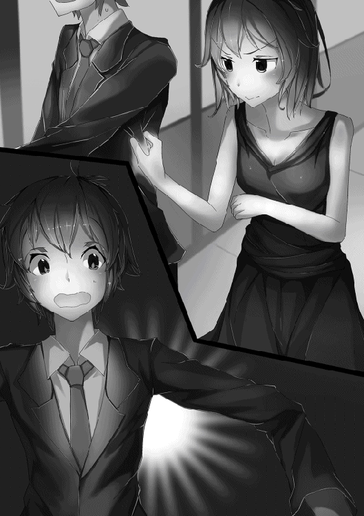
爵位をもらって俺も刀を持てるようになったことだし、ここはひとつ一花ちゃんのアドバイスに従ってみるのもいいかもしれない。
いや、これは願ってもないチャンスなんじゃないだろうか。この爺さんが一花ちゃんの師匠だというなら、彼女はこの一見ただの爺さんに鍛えられてあの斬撃を身につけたのだろう。
そう考えれば、この機にこの爺さんと仲良くなって鍛えてもらえば、もうあんな苦戦はしないで済むかもしれない。
というか、カテゴリー五？ 何それ美味しいの？ と、余裕をぶっこいても楽勝できるかもしれない。
しかし、ここまで考えてハタと違和感を覚えた。確か一花ちゃんは遥もこの爺さんに教えを乞えばいいと言っていた。
俺は爵位持ちになったから分かるが、遥はただの発掘師だ。刀や剣は法律で所有できないんじゃないの？ なんてことを考えていたら。
「あの、一花様？ わたしは貴族でも軍人でもありませんが、その......三浦様に教えを乞うというのはどういうことでしょうか」
やはり遥も気づいていたらしい。
「私が説明しましょう。先の妖魔異常出現に絡んでのことなのですが──」
藤崎さんが説明してくれたことを要約すると、妖魔に対抗するために戦力増強が軍上層部で検討されていたが、その一環として〝気〟力が高い発掘師に刀剣の所有権を認め、その代わり、妖魔異常出現時に軍の臨時招集に応じてもらおうということになったらしい。もちろんそれ相応の報酬は支払われるという。
その結果、特級発掘師に限り刀剣の所有を認めることが正式決定され、法律がつい先日改訂されたのだそうだ。
当初の法案では、一級発掘師にも刀剣の所有を認める方向だったが、一部有力者の反対が強く、折衝の末、特級発掘師に限定することになった。と、藤崎さんが忌々しそうに話してくれた。
ただし、刀剣を所有するからには軍の臨時招集に応じる義務が生じるため、それを承知の上で免許を取得してほしいと付け加えられた。
ちなみにこの義務は、爵位持ち、すなわち貴族にも当てはまることで、本来貴族と軍人だけが所有していた刀剣所有免許を、特級発掘師も取得できるようになった。と、理解すればいい。
「ご説明ありがとうございました。ぜひ取得させてもらいたいと思います。それで、どうすれば免許を取得できるのでしょうか？」
藤崎さん曰く、特級発掘師の免状があれば、軍本部に申請して面接を受けるだけだそうである。貴族の場合は軍本部に申請するだけで、刀剣所有免許を得られるそうだ。
遥は今日、特級発掘師免状を持参するように言われていたのだが、何のために必要なのか不思議がっていた。で、藤崎さんの説明を聞いて、クスぶっていた疑問が解消したと納得顔だった。
「このまま立ち話もなんです。どうぞお掛けください──」
刀剣についての話が一段落したところで、藤崎さんがようやく今日の本題について切り出してきた。
今回俺が採掘に行こうと思っている場所は、よくよく聞いてみれば完全に未開の地らしいし、そうなると発掘師だけでは危険すぎる。
かといって一花ちゃんや藤崎さんたち軍人だけでは、発掘やその調査に関して何をどうすればいいか分からないし、分かったとしても技量がない。
ということで、宝玉の産地調査に必要な物資と人員、それから日程について昼食をはさんで夕方近くまで打ち合わせをするはめになった。
今回必要なことについてだけであるが、まずはお互いの知識や常識についてすり合わせからはじめて、相互理解を深めた。そこから今回必要な物資や人員を割り出し、大まかな日程というか必要な日数を検討していった。
「だいたいこんな所ですかね」
「そうですな。それで空殿、物資は我々が準備するとして、出発日時は如何に？」
「俺は明日からでも大丈夫ですが、遥は？」
「わたしはいつでも大丈夫よ」
「ハハハ、お二人ともさすがは発掘師ですな。恥ずかしながら、どうにも我々にはそういった機敏さが無い」
「というと？」
不思議そうに顔を見合わせた俺と遥に、一花ちゃんが吹き出しそうになるのをこらえて答える。
「ふふふ、軍みたいに大きな組織は何事にも時間がかかるの。ね、藤崎」
「申し訳ございません、一花様。そういうことですので空殿、四日頂けませんか。それまでに必要な物資と人員を揃えておきます」
「あはは、べつに、無理に急がなくてもいいですよ。俺たちは気にしませんし、いつでもいいですから」
一花ちゃんに突っ込まれて恐縮しきりの藤崎さんだったが、よくよく考えてみれば、彼女が軍のトップだったりするわけだ。
結局のところ一花ちゃんは、藤崎さんを責めるつもりはなくて、そういうものだと割り切っているのだろう。今は戦時ではないのだから。
で、ようやく打ち合わせが終わったということもあり、俺たちがここに呼び出されたもう一つの理由、つまり刀剣の免許について手続きをすることになったわけだが、手続きは渡された用紙に名前を書くだけであり、俺はその用紙一枚、遥は用紙に特級発掘師免状を添えて藤崎さんに預けることになった。
「それでは、手続きの間に見てもらいましょうか」
一花ちゃんが目線で三浦の爺さんに合図を送った。すると、爺さんがやおら立ち上がり、大きな桐箱を中央のテーブルに置く。
「空殿、開けてみなされ」
幅七十五センチ、高さ十五センチ、長さ一メートル五十センチほどの桐箱の蓋を開けると、そこには大小五本の刀が収められていた。
どの刀も鍔が小さ目で、持ち手には房があしらわれている。どうやら軍刀のようだ。
「これは？」
「私からのプレゼントです。空様が好きな刀を選んでください。遥さんもどうぞ」
「えっ？ こんな高そうなの受け取れないよ」
「そ、そうですよ。わたしたち何もしてないのに」
「軍部のお願いを無理やり聞いてもらうんですもの。これくらいの贈り物は安いものです。それに、これは私のコレクションの一部ですから」
素人の俺でも、この箱の中に並ぶ刀が並のモノではないことが容易に想像できた。
いくら一花ちゃんのコレクションだといっても、はいそうですかと簡単に受け取っていい物ではないような気がする。
遥も俺と似たような考えなのだろうか、答えが出せずに迷っているようだ。
「こういうものは素直に受け取ったほうが良い。ほれ、姫殿下が困っとるだろうが」
三浦の爺さんにそう言われて一花ちゃんに目をやると、確かに彼女は軽い困惑顔だった。これがもし藤崎さんや目の前の爺さんの贈り物だったら、俺は恐らくというか絶対に受け取とらない。
どうしてもというなら、買い取るなり借りるなりすると思う。でも、相手は一花ちゃんだ。彼女のことは家族も同然だと俺は思っている。
それならあまり意固地になるのも一花ちゃんがかわいそうか。そう思って俺は受け取ることにした。
「分かった。ありがたく使わせてもらうよ。それで一花ちゃん、この中からどれを選んでもいいの？」
俺が折れたことで、一花ちゃんはほっとしたように笑みを浮かべている。
「ええ、どれでも一振り気に入ったものを。遥さんもよければ」
遥はまだ迷っているようだったが、俺が箱の中で一番長くて太い刀身百二十センチ弱の大太刀を選んで鞘から抜いているのを見て、ようやく決心がついたようで、箱の中では平均的な刀身八十センチほどの太刀を選び取った。
で、鞘から抜いた刀身をまじまじと見てみると、やはりというかなんというか、反りがあって綺麗な波紋が浮かんでいるさまは、カッコいいという一言に尽きる。日本男児たるもの、一度は日本刀に憧れるものだろう。
かくたる俺もその例に漏れないのだが、こうやって日本刀を手にしてみると、思わず顔がニヤけてしまうのを止めることができなかった。
そんなことをしているうちに、手続きを終わらせた藤崎さんが戻り、俺と遥は刀と、刀剣所有免許を頂戴して軍本部を後にしたのだった。
一花ちゃんたちと打ち合わせをしてから五日後のまだ星が瞬く日の出前、俺は遥とともに軍本部へと出向いた。
俺と遥の出で立ちはいつもの発掘師スタイルだが、それぞれの背にツルハシと交差させるように刀を装備している。
その上からザックを背負っているのだが、こうしておけばいつでも刀やツルハシを抜くことができるのだ。抜くのに若干のコツは要るが。
俺と遥はまだ人通りがほとんどない夜明け前の道を、てくてくと軍本部へ向かって歩く。そして目的地に到着してみれば、こんな時間だというのに正門は開いており、守衛所には人影があった。
今回も藤崎さんに呼び出された旨を守衛所の人に告げると、どうやら俺たちがこの時間に来ることは知らされていたようで、前回とは違ってすぐに案内役をあてがってくれたし、対応も丁寧だった。
そして案内された先には、すでに一花ちゃんたちが準備万端整えて、俺たちの到着を今や遅して待ち構えていた。
「おはようございます」
宝玉採掘の旅、すなわちトレジャーハントにこれから出発するという高揚感から、朝の挨拶にも気合が入るというものだ。
一花ちゃんたちからも、眠気を感じさせないハツラツとした挨拶が返ってきた。
俺たちを待っていたのは一花ちゃんをはじめ、藤崎さんと三浦の爺さん。それに、藤崎さん直属の遊撃小隊の人たちが二十名ほど。馬車が三台用意してある。
その馬車に遊撃小隊の人たちが物資を運び込んでいた。
ずいぶん大がかりな採掘隊になったが、期間とルートを考えれば、これでも必要最小限の態勢なのだ。
「おはよう一花ちゃん、待たせた？」
「いいえ、出発予定時刻までまだ三十分あるわ」
そう言った後、一花ちゃんは俺の耳元で「おはよう、空お兄ちゃん」とささやいた。さすがの一花ちゃんも部下たちの前でお兄ちゃんとは言いにくいのだろう。
「それにしてもあと三十分か......」
なんてことを考えていたら、物資の積み込みが終わったらしく、予定時間をくり上げて早めの出発とあいなった。
俺と遥、一花ちゃんと藤崎さんに三浦の爺さんが一番小さいホロつきの馬車に乗り込み、三台の馬車隊は首都を出て一旦南へと進んだ。
今回俺たちが向かおうとしているのは石川県某所。
そこの紫水晶は、二十一世紀には掘りつくされたとされているが、大きな地殻変動後の今の時代では、新たな脈が露出している可能性が極めて高いと俺は踏んでいる。
もし目的のものが見つからなければ、そこから山岳地帯を進み、岐阜のポイントに向かおうと思っている次第だ。
旅のルートは、豊田を経由して名古屋から琵琶湖をかすめ、福井を通過して石川へと入る予定だ。
ただし、地形がどうなっているか全く分からない上に、ルートのほとんどは原生林や山の中を突き進むことになるだろうから、日程は一か月強を見込んでいる。
それを過ぎると、雪が降りはじめる可能性が高いため、遭難の危険性が出てくるのだ。とはいっても今回のメンバーは、全員が一般人から隔絶した〝気〟の持ち主であるため、多少どころかかなりの無理が利くだろう。
本来なら何度も森に通って道を作りつつ、少しずつ進路を開拓していくべきなのだが、それだと目的地にたどり着くまでに何年もかかってしまう。
そんなことでは来年の春にまた襲ってくる可能性が高い妖魔に対抗できない。だから今回は、無理が利くメンバーで宝玉探しに行くわけである。
なお、今回のメンバーに鈴音ちゃんと阿古川哲也は入っていない。二人は引き続き中村さんのクランで発掘作業中だ。そして、二人を連れていけない理由は今回の採掘自体が軍事機密だからである。
打ち合わせのとき藤崎さんに二人の同行を打診してみたが、俺には遥みたいなゴリ押しができなかった。
あまり無理を言って藤崎さんを困らせたくなかったというのもある。だから今回二人には残ってもらうことになった。
三台の馬車は豊田に向けて順調に進み、最初の野営ポイントに到着したのは陽が傾いたころだった。
この場所は前回四人で豊田に向かったときに野営した場所と同じである。大きな違いは遊撃小隊の面々が同行しているということであり、彼、彼女らがすべての野営準備をそれはもう効率よくテキパキとやってくれるということだ。
俺たち主要メンバーの仕事は、ただその様子を見守るのみである。
遊撃小隊の面々によって大型のテントが四張り、小型のものが二張り、たき火を囲むように設営され、そのたき火には大き目の鍋が二つ掛けられている。
しばらくして陽が完全に姿を消したころ、食欲をそそる匂いが漂ってきた。何もすることがないので、早く食べたい気持ちが必然的に増幅されている。
「藤崎閣下、食事の準備、完了でありマス」
たき火から少し離れたところに設置された折りたたみ式の簡易テーブル。このテーブルが使えるのも今日までなのだが、そこでくつろいでいた俺たちの前に、若い女兵士がビシッと敬礼を決めて夕飯時の到来を告げに来た。
「ご苦労。中尉、この方たちの分も配膳を頼む」
「ハッ、了解でありマス」
非常にハキハキとした清廉な印象を受ける女兵士だなと最初は思った。しかし、なぜだかこのとき彼女に違和感を覚えた。
何が俺にそう思わせたのかは分からないが、この女には気をつけろと本能に訴えかけられたような気がしてならなかった。
しかしそんな違和感も、配られた夕メシの前に霧散してしまう。なんとも食欲を掻き立てる匂いだ。
季節は夏の盛りを過ぎた九月初頭。陽が沈んだ時間帯だとはいえ、まだまだ暑苦しい。けれども夜風には、わずかな涼を感じないわけでもなかった。
そんな微妙な季節感の中、この時期に食うには少し季節外れの豚汁で熱々のご飯を掻き込んでいく。
案の定ダバダバと汗が噴出するが、味のほうは文句のつけようがないくらいに美味かった。
「ふむ、空殿は実に美味そうに食いなさるのう」
三浦の爺さんにそう言われてはじめて気づいたが、一花ちゃんをはじめ俺以外の四人は汗ひとつかかずに、実にスマートに夕メシを食っていた。
かといって食うスピードが遅いというわけでもない。まぁ、俺みたいにかっ喰らっているわけではないが。
「なんでみんな汗かいてないんすか？」
分からなかったから聞いてみた。ひとりで悶々と考えるなんて性に合わない。
「ふむ、そうかそうか、分からんか」
三浦の爺さんは、不思議そうな俺の顔を見てやけに嬉しそうにしている。その隣で藤崎さんは困惑顔だ。
一花ちゃんは不満そうに三浦の爺さんを、遥は不思議顔で俺を見ていた。
「先生、空様がお困りです」
「ホホホッ、姫殿下は空殿のことになると」
「先生！」
ぷくっと頬を膨らました一花ちゃんに幼いころの面影を懐かしみながらも、俺は答えを催促することにした。
このまま和気あいあいとした食事中の団欒に浸るのも悪くはないが、謎を謎のままに流されるのは精神衛生上好きくない。
「あのぉ、そろそろ教えていただけませんかねぇ」
悪い悪いと三浦の爺さんは謝りながら教えてくれた。俺だけが汗をかいている理由。それは〝気〟の使い方がなってないかららしい。
というより、俺は〝気〟で汗をかかない、つまり体温を上昇させない、言い換えれば熱を上手に体外へと逃がす方法があるなど知りもしなかった。
〝気〟で体を温めることは簡単にできたが、逆に冷やすことができるなんて考えもしなかった。
爺さん曰く、今の時代に生きている大人ならば〝気〟で体を冷やすことは自然に身につけていることであり、ほぼ誰でもできるらしい。
激しく運動したときや、意識して熱を体外へ逃がさないようにしようとしない限り汗をかくようなことはないらしい。
まだ〝気〟の扱いに慣れていない小さな子供ならともかく、温かいものを食べたくらいで汗をかくということは、俺の〝気〟の扱いは幼児や赤子並みのレベルだということだ。
そう言われたときは実際少し悔しかった。が、よくよく考えてみれば俺はこの時代に来てようやく一年と少し。赤子と何ら変わりはない。〝気〟をうまく扱えないのは当たり前なのだ。現に、一花ちゃんもそう言って俺を慰めてくれた。
一花ちゃん曰く、戦闘での攻撃に関してだけは、俺の〝気〟の扱いは常人をはるかに凌駕しているという。それに、こんなことが分かっていたなら、あのカマキリと戦ったときみたいに足の筋肉が熱をもってピンチになることもなかった。
この旅の合間に、俺と遥は三浦の爺さんから刀の扱い方を学ぶことになっている。これはさっそくいい機会かも......。
「じゃあ、そういった〝気〟の扱い方もお教え願えませんか？」
俺は言葉に期待を込めて三浦の爺さんに願い出てみた。すると、爺さんは上機嫌この上ないといった感じで破顔してみせた。どうやらこの爺さん、人に教えるということが大好きな人種らしい。
それに一花ちゃんや藤崎さんから、敬意を込めて先生と呼ばれていることからも、たぶん良い人なのだろう。
「よかろうよかろう。腹ごなしついでに運動でもするかのう」
上機嫌になった三浦の爺さんは、そう言ってまだ終わっていない夕メシを再開したのだった。
空に刀術における〝気〟の扱い方を教えることになった三浦は、夕食後星空を眺めながらゆったりと夜風に体を預けたのち、空と遥の指導をはじめていた。指導には一花も願い出て、教えを乞う立場で加わっている。
「先生、空殿はどうですかな」
三浦の横では藤崎が、木刀を振るう空たち三人の様子を眺めていた。
空と遥、それに一花は、日本刀ではなく三浦から渡された木刀を、星空のもと三人で向かい合うように、三角形を作って素振りを繰り返している。
一花がお手本となって一振り、それを模倣するように空と遥が一振り。木刀を使う理由は、今はまだ語らないことにしておこう。
「〝気〟の保有量はまさに人外。さらに素質だけで言うと姫殿下より上になるかのぅ」
「ほう、それはまたなんとも......」
「だが刀の振り方は見てのとおりずぶの素人。基本の基本から叩き込まんといかん」
「でも先生、そのお顔は......」
藤崎が言ったとおり、三浦の顔からは明らかな喜びが見てとれた。実際、三浦は空という久しぶりの逸材、いや、逸材と呼ぶこともはばかられるような才を秘めた教え子との巡り逢いに、至上の喜びを感じてやまなかった。
一花に刀術の教えを施したときにも感じていたことだが、空の素質はそれを上回っている。さらに三浦にとって嬉しかったことは、空が刀術に関してはずぶの素人だったことも大きかった。
刀術を極める上で邪魔になる余計な体の動きやクセが身についていないし、刀術に限られたことだけではあるが、余計な知識やこだわりもない。
三浦にとって空という存在は、自身の極めた刀術を継承させるにふさわしい、いや、ふさわしいと言うのもおこがましいほどの、あえて言えば三浦という達人と呼ばれるほどの人物にとっても身に余るほどに極上の存在なのである。
そんな存在にまっさらな状態で刀術を教えることができる。
それはまるで天啓とも言えるほどの発想を得た稀代の芸術家が、これ以上ない最上級の素材を手に入れ、今まさに創作にあたろうとしている心情に近しいものであった。
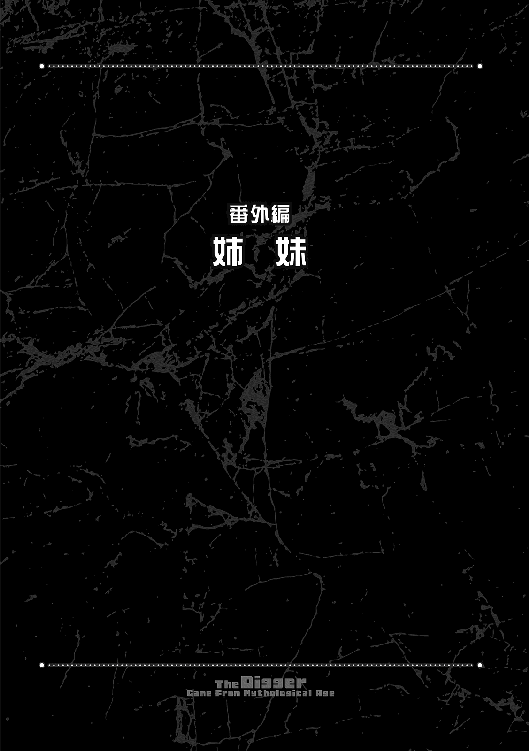
華々しい叙勲式が終わると、遥は空とともに挨拶回りやら催しやらでバタバタとせわしなく動き回った。
そんな慌ただしさもようやく落ちつきを見せ、ぽっかりと穴があくように訪れた休日の朝、遥は少し遅めの朝食をひとり居間で摂っていた。
「お早うございます。お姉ちゃん」
「ん？ お早う琴音......」
起き抜けで生気のない顔のまま、もきゅもきゅとご飯を咀嚼している遥に、琴音は呆れ顔でたしなめる。
「おねえちゃん、顔は洗ったの？」
「そういえば洗ってないかな......」
そう言ったにも拘らず、顔を洗いに席を立つことなく遥は朝食を続けている。上の空というよりは、ただボーっとしている遥を見て、琴音は「しょうがないなぁ」と言いたげな顔で口を開いた。
「疲れてるのは分かるけど、顔洗ってシャキッとしてきたら？」
「......うん、そうする。もうご飯はいいから片しといてくれるかな」
そう口にして立ち上がり、居間を出ていこうとした遥に、琴音は「ハイハイ」と諦め顔で返事して、ふと思いついたように振り返った。
「そういえばお姉ちゃん、空さんは？」
「ん？ ......今日は大公宮だったかな。泊りになるみたい」
いつも空と行動をともにしている遥といえど、一花がいる大公宮へと同行するのは気が引けていた。べつに一花のことが苦手なわけではないが、自分がついていけば空と彼女の時間を奪ってしまうことになるからだ。
遥にとって、今日という日は久しぶりに訪れた休日だった。
貴族や軍属、そして発掘協会のお偉方との面談や挨拶。そんな煩わしいことからやっと解放されたのだ。今日ぐらいは実家でのんびりと過ごして疲れた心を癒したかった。
琴音も彼女の事情を知っていたから、だらしなくしている遥に呆れ顔こそすれ、強くあたることは無かった。
そんなこんなで顔を洗った後も、遥は自室でのんびりとゴロゴロしたり惰眠をむさぼったりしながら一歩も家から出ることなく休日を過ごしていた。
「お姉ちゃん、入っていい？」
「......いいいわよ〜」
夕食も終わってずいぶん時間が経ったころ、遥の部屋に琴音が訪れた。
遥はお気に入りのクッションを枕に、畳の上でもう何度寝か分からない眠りから目覚めた余韻に浸るかのようにゴロゴロしているところだった。
「もう、だらしないなぁ、お姉ちゃんは」
「たまの休みくらいゆっくりしててもいいじゃない」
実際、遥は自分が考えている以上に精神的な疲れにさいなまれていた。
お偉方への挨拶や面談からくるプレッシャーも当然あったが、それ以上に、貴族や有力軍属家の娘たちから空に集まる熱い視線に、心休まることが無かったのだ。
空がそういった視線に鈍感なのか、あえて無視しているのか遥には分からなかったが、幸い、彼がた娘たちの視線に無関心だったのが心の拠り所だった。
「そう、せっかくの休みだからたまには姉妹水入らずでお話ししましょう」
琴音の何か含んだような笑みに、遥は枕にしていたクッションをギュッと抱きしめ、警戒心をあらわにする。
「い、今更何を話すのよ」
「まあまあお姉ちゃん。座って座って」
琴音は持ってきたお盆をちゃぶ台に置くと、笑みを絶やさぬままにトボトボと急須からふたつの茶碗にお茶を注いだ。
遥は警戒心を解かぬまま体を起こし、ちゃぶ台の前に足を崩して座ると、琴音の視線を伺うように茶碗に口をつけた。
「ふぅ、美味しいわ。で、話って何？」
「うふふ、油断してるお姉ちゃんも可愛いけど、今のお姉ちゃんも可愛いなって」
「な、何よいきなり」
琴音はもったいぶるように本題を話そうとしない。そんな琴音は、ここ最近の遥の嬉しい変化について思い出していた。
遥の様子に変化が現れたのは、彼女が空を実家に連れて来てからだった。
琴音が知る限り、それまでの遥の周囲にはむさ苦しい男の影ばかりしか見えず、恋の噂など聞こえてくることも皆無だった。
が、空が現れてからというもの、それまでの勇ましい振る舞いがなりを潜め、遥は実に乙女らしい反応を見せるようになった。
「ねぇお姉ちゃん。お姉ちゃんは空さんのことどう思ってるの？」
いきなりの口撃に遥はお茶を吹きかけたが、琴音は追撃を止めなかった。
「まぁ、最近のお姉ちゃんを見てれば分かるけど......で、どんな感じなの？」
「ど、どんな感じって言われても......」
顔を真っ赤にした遥は、両手で持った茶碗を覗き込むようにして小さくなって、口ごもるように黙り込んだ。
琴音だって分かっている。姉が異性に関して奥手であり、恋に対して臆病なことを。
琴音は今まで、姉の浮ついた話をまったくと言っていいほど耳にしたことが無かった。だからこのチャンスを逃すべきではないと思っていた。
さらに言及すれば、元来琴音は世話好きで姉好きで恋バナ大好き娘である。楽しい娯楽が少ないこの時代にあって女子の大好物と言えば、二十一世紀にも増して甘露か恋バナなのだ。特にその傾向が強い琴音は、いつか遥とも恋バナをしてみたいと思っていた。
しかも、姉の最大のライバルが大公国一の高値の花である一花だと知っている琴音は、空が一花一筋になってしまうかもしれないことが気がかりでもあった。
そう考えると、いや、考え過ぎなのかもしれないが、遥がこのチャンスを逃してしまえば、姉と楽しい恋バナをする機会が訪れないかもしれない。
そうなるのは嫌だったし、ついに姉が色恋に目覚めたのだ。応援もしたい。
だから琴音は姉の幸せを願うことも当然あるが、姉との楽しい会話のためにもこのチャンスを逃してはならないと、こうして焚きつけに来たのである。
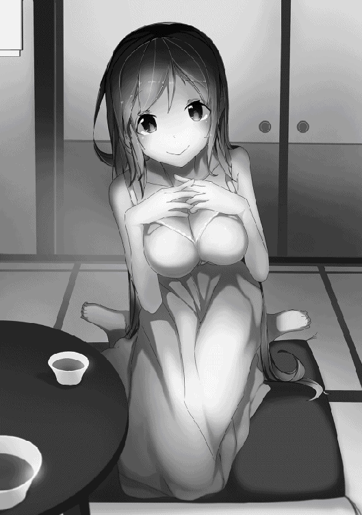
「ねぇお姉ちゃん。お姉ちゃんは空さんのことが好きなんだよね」
「それはまぁ......嫌いじゃないけど」
今まで以上に真っ赤になって消え入りそうな声で口ごもるようにそう言った遥に、琴音は笑みを深めて追撃を放った。
「一花様も認めてくださってるんでしょ？」
「うん......」
「なら言葉できちんと示さなきゃダメだよ」
「でも......」
「でもじゃありません！ いいですか、お姉ちゃん。好きな人にはきちんと言葉で伝えないといつまで経っても進展しませんよ。特に空さんの場合、ライバルになる女はそこら中にいるんですから」
バンとちゃぶ台を両手で叩き、身を乗り出して力説する琴音に、遥は身を引いてタジタジになりながらも頷くしかなかった。
遥にだって焦りが無いわけではない。
行動を共にしていれば嫌でも分かる空へ向けられる女たちの熱い視線。その全てが脅威になるとは思えないが、空に熱い視線を送る中には、遥ですら見惚れてしまいそうな美人も一人や二人ではなかった。
もし空が見初めてしまったら。そう考えると自分の中に醜い感情や焦りが蠢くことを、自覚しないわけではなかった。
「じゃぁどうすればいいのよ！」
つい声を荒げてしまった遥に、琴音はシメシメと心の中で悪い笑みを浮かべる。
「簡単なことです」
「簡単？」
「そう、簡単です」
「それだけじゃ分からないわ」
遥の言葉を聞いて琴音は満足そうに頷いた。
「ね、言葉で正確に伝えないとお姉ちゃんも分からないでしょ」
誘導尋問ではないが、まんまと琴音の思惑に乗る形になった遥は、悔しそうにしながらも素直に教えを乞うのだった。
「もう！ 琴音が言いたいことは分かったから、どうすればいいのか早く教えてよ」
「告白すればいいんです。好きですって言葉にすればいいんです。ね、簡単なことでしょ」
「告白って......」
そう言って瞳を揺らし、狼狽えている遥は今まで異性に想いを告白した経験が無い。もちろん同性にも無いが、こと恋に関して奥手な彼女は、自分から想いを告げることなど考えてもいなかった。
「いい、お姉ちゃん？ 空さんみたいな異性の好意に鈍感な人にはきちんと言葉で言ってあげないとダメなの。そうしないと......」
「そうしないと何よ」
「うふふ......教えてあげない」
普段はおしとやかでもったいぶったりしない性格な琴音も、姉に対してだけは時折こういった小悪魔のような一面を見せることがあった。が、絶望的な顔で落ち込んでしまった姉を見かねてそっと遥の耳元で囁いた。
「お姉ちゃんあのね──」
琴音が何と言ったのかは伏せておくが、その言葉を聞いた遥は覚悟を決めたような面持になり、何かを決意したように瞳に力を取り戻したのだった。
あとがき
皆様のおかげをもちまして本書『異世界だと思ったら崩壊した未来だった〜神話の時代から来た発掘師〜』も無事に第二巻を出版することができました。この場をお借りしてお礼申し上げます。
本編ではいよいよ主人公である空が仲間たちとともに本格的な発掘師としての活動を始めたわけですが、お楽しみいただけたでしょうか。
空と仲間たちは貴重なお宝を発掘したり、絶望的なまでの強敵とのバトルを強いられる展開となりました。
その強敵になんとか勝利し、空は望外の地位と報酬を手に入れることになったわけですが、その報酬というのが豪邸と呼べるお屋敷だったわけでありまして、現実世界でそんな大豪邸を建てようと思えば、仕事なりなんなりで大出世するなり年末ジャンボの一等に当選するなり、とにかく大金が必要になるわけです。
こんな場でお金の話をするのもどうかとは思いますが、現実にそんな大金を手に入れられる人は一握りの幸運な方たちだけでありまして、もちろん私にはそんな大金にありつけるだけのあても運も能力もありません。
ですが、物語の中でならそういった大金だったり地位だったり成功だったりを主人公に与えることができるのです。せめて物語の中では大成功を収めたい。本編はそんな私の願望というか妄想を空に叶えてもらう形になりました。
苦労はするけれども大仕事を成しとげればそれ相応のご褒美にありつける。現実世界ではそんな当たり前のことさえも、当たり前ではなくなりつつあります。
そんな世知辛い世の中にあって、本書を手に取ってくださった皆様のお役に少しでも立てるというか、本書が辛い現実を忘れるためのアイテムの一つになってくれれば幸いです。
滋田英陽
著者プロフィール
滋田 英陽
Shida Hideyo
「福岡県久留米市出身。幼少のころは地元の森や野を駆け回って虫や木の実を採り、小川に入って魚を捕まえたりする野生児でした。現在はわりと都会の住人です。」
異世界だと思ったら崩壊した未来だった
〜神話の時代から来た発掘師〜２
2016年３月１日発行 ver.1.0
著 者 滋田英陽
発行所 TOブックス
〒150-0045 東京都渋谷区神泉町18-８
松濤ハイツ２Ｆ
03-6452-5678（編集）
0120-933-772（営業フリーダイヤル）
Ⓒ2016 Hideyo Shida
※無断で複製・複写・データ配信などをすることは、かたくお断りいたします。
本電子書籍は下記にもとづいて制作しました
異世界だと思ったら崩壊した未来だった
〜神話の時代から来た発掘師〜２
発行日 2016年３月１日 第１刷発行
本作品の全部または一部を無断で複製、転載、配信、送信したり、ホームぺージ上に転載することを禁止します。また、本作品の内容を無断で改変、改ざん等を行うことも禁止します。
本作品購入時にご承諾いただいた規約により、有償・無償にかかわらず本作品を第三者に譲渡することはできません。
本作品を示すサムネイルなどのイメージ画像は、再ダウンロード時に予告なく変更される場合があります。
本作品は縦書きでレイアウトされています。
また、ご覧になるリーディングシステムにより、表示の差が認められることがあります。